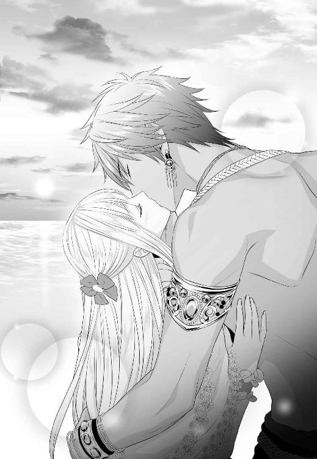

| 怖がりの新妻は竜王に、永く優しく愛されました。 (ムーンドロップス) | |
| 椋本梨戸 & 蔦森えん | |
| 竹書房 (2017) | |
この作品は縦書きでレイアウトされています。
また、ご覧になる機種により、表示の差異が認められることがあります。
一部の漢字が簡略字で表示されていることがあります。
怖がりの新妻は竜王に、永く優しく愛されました。
Contents
序章
竜は、溺れるように番いを愛する。
生涯でただ一人、運命によって定められた番いを全力で愛し、守り抜く。
それは抗えぬ竜の本能であり、本質であった。
番いとの出会いは一般的に十五の歳を数える頃にある。しかし、現竜王リンドヴァルム、齢三十六──。
彼は、己の番いをいまだ見つけることができないでいた。
第一章 生涯にただ一人
生涯にただ一人
クラッセン男爵の掌中の珠、自他共に認める箱入りの一人娘であるリーヴェローゼ・シェイファーは、見上げるほどに大きく壮麗な門を前にため息をついた。
これからこの門を越えて、庭園の中央へ行かなければならないことはわかっている。
けれど、どうしても足が前に進まない。
ここまで乗ってきた馬車は、門衛が専用の場所へ連れて行ってしまった。もう後戻りはできない。
（往生際が悪いわ、ローゼ）
自分自身にそう言い聞かせて、ローゼは花びらのようなくちびるを引き結ぶ。人々でごった返す庭園に目を向けた。
その瞳は、とろけるような琥珀色をしている。
一方で、春の風に揺れる髪は絹糸のようだった。まっすぐに背中まで伸び、毛先はやわらかく巻かれている。うすい金色は、穏やかに日差しを受け止めていた。
白い首すじやすんなり伸びた腕、コルセットで固められた腰はいささか細すぎる感がある。しかし、レースをふっくらと盛り上げる胸もとには、優しげな少女らしさがあった。
花のほころぶこの季節、家の者たちはローゼを春の妖精に見立てて賛辞を贈る。
（みんなお世辞が上手なのだから、困ってしまうわ）
ローゼは先月、齢十六を数えた。
通常、貴族の子女はこの頃に社交界デビューを果たす。
しかしローゼは今年のデビューを見送ることにしていた。それは、彼女を溺愛する父の意向による。
ただ、十六を超えたにもかかわらず屋敷に引きこもってばかりいると、心ない噂が立ちかねない。そこで父ハンネスは、この場に娘を連れてきたのだ。
毎年春に人間の王が、城の庭園を開放して、若い竜たちをもてなす華やかなパーティー。
『竜の花嫁探し』の場である。
「これは大変な騒ぎだなぁ」
ローゼの背後から、中年の男性が歩み出た。ローゼの父、ハンネス・シェイファー男爵だ。
彼はハンカチでひたいの汗を拭った。
「竜の番いになる確率はとても低いらしいから安心して来てみたものの。こんなにも人の多いパーティーだとは思わなかったよ」
四十一歳になる彼は、娘に似て色白かつ瘦身だ。顔立ちは優しげに整っているものの、寄せた眉間のあたりに神経質な気弱さが垣間見える。
ローゼは励ますように、父の腕に手を添えた。
庭園の中央には巨大な噴水が造られている。そこには猛々しい竜の、大きな彫像が置かれていた。人間の王が、いかに竜族を尊重しているかを見てとれる光景だ。
その噴水の周囲に置かれているのはガーデン用のテーブルである。真っ白なクロスが掛けられ、色とりどりの料理が並べられて、会場を盛り立てていた。
その間で談笑する少女たちの華やかさといったら。
（みなさん、本当に綺麗で愛らしくて）
ドレスに身を包んで瑞々しい笑顔を振りまく彼女らを、眩しい思いでローゼは見つめた。
竜の花嫁探しの場には、出自に関係なく、五歳から一五歳ほどの少女が集まる（彼女らの両親も参加している）。
当然、煌びやかなドレスを用意できない平民の少女も多数存在した。
しかし彼女らには、質素なドレスを補ってあまりある輝きがあった。明るく快活な生気に満ちあふれているのだ。
そんな少女たちと楽しげに言葉を交わすのは、長身の男性らである。
歳は十代半ばから二十代後半くらいだろうか。優雅な王城の庭園にあって、彼らは一見して異質だった。
みな、よく日に焼けて隆々とした上半身を晒している。衣服は革の腰布のみ、靴すら履いていないようだ。その代わり、重みのある宝石類をいくつも身につけていた。
首から下げたり、手首や足首に巻いたり。ターコイズやルビーなど、色の濃い大ぶりの天然石は、引き締まった彼らの体をさらに美しく洗練された様子に見せている。
彼らに選ばれた花嫁は、至上の幸福を手にするという。
食物連鎖の頂点に立ち、世界の中央に位置する大陸に棲まう、気高い種族。
それが竜族である。
ローゼはこの時、彼らの姿を生まれて初めて目にした。
「人間の男性と......全然違うのね」
「そうか？」
ローゼの言葉を拾い上げたのは、叔父のレイだ。
「両足で歩いて、目が二つあって、口が一つ。俺たちとなにも変わらないじゃないか」
レイ・シェイファーは父の弟である。今年で三六になる。ローゼは彼の端整な面差しを見上げた。
「でも、人間の男性はあんな風に野性的ではないもの」
「ローゼはそういう男に心惹かれる年頃かな？」
レイが口の端に笑みを浮かべる。その時、庭園の方から歓声が上がった。
そちらに目を向けると、竜族の若者に手を引かれ、嬉しそうにはにかむ少女の姿があった。
印象的なのは、若い竜の幸せそうな表情だ。自分の番いとなった少女が愛しくてしかたないというようなまなざしをしている。
竜は、己の番いをにおいで判別するという。一定の距離まで近づいてにおいを感知すれば、あとはその源を見つければいい。
竜の若者に見いだされ、愛されて幸せになる。女の子なら一度は憧れる恋物語だ。
けれどローゼはさまざまな理由から、そういう感情を持てずにいた。
「レイ叔父様。わたし、竜の方たちに惹かれているわけではないわ」
会話の続きをローゼは口にする。レイは、片眉を上げてローゼを見下ろした。
「わたしは、竜が怖いの」
門の内側へローゼは足を踏み入れる。
遅れてレイの声が返された。
「ローゼ。あのときのことは、もう」
「それならいますぐ屋敷へ帰ろうじゃないか」
割り込んだのは父ハンネスだ。
「なにも無理して参加する必要はないさ。なあローゼ」
「ここまで来て往生際が悪いぞ、兄さん」
レイは顔をしかめた。
「兄さんがそんな風だから、ローゼはいつまでたっても辺境の田舎屋敷から外に出られないんだろ」
「しかしレイ、この子は大切な一人娘だ。竜大陸へ嫁には出せない。なあそうだろう、ローゼ」
「そうだとしても、いつかは誰かの奥方になるんだ。ローゼが恋した相手が長男だったら、兄さんはローゼを家から見送らなきゃいけない」
「そ、そんなことは許さん。ローゼは婿を取って、ずっと私の家にいるんだ」
「お父様」
ローゼはそっとハンネスの腕に手を添えた。
「そうね、お父様。無理してパーティーに参加する必要はないわ。今日はこのあたりでおいとましましょう」
ハンネスの顔がとたんに明るくなった。
「そうだろう、そうだろう！ 早くここから離れよう。さあレイ、門衛に言って馬車を呼んできてくれ」
レイは呆れたようにため息をついた。
「どうせこうなるとは思っていたけど、まあ、会場まで来られただけ進歩かな。お疲れ様、ローゼ」
レイに背を促され、ローゼは踵を返した。もともとすぐに帰るつもりだったから、予定よりすこし短い滞在時間になっただけだ。
ローゼが迷いなく門の内側から一歩踏み出そうとした、そのときである。
庭園の人垣が大きくざわついた。ローゼは驚いて振り返る。
直後、ざわつきの渦中、噴水のすぐ前方から、大きな翼が一息に広がった。
蝙蝠の翼のような薄い皮膜、色は青空にむしろ潔いほどの黒だ。その美しさに、ローゼは一瞬で目を奪われた。
翼が一度だけ羽ばたいて、持ち主を竜の彫像の上へ引き上げる。周囲に風が起こり、人々はさらにざわついた。彼の足先が、彫像の頭頂に触れる。
赤銅色の髪──。
「誰......？」
ローゼはぽつりと呟いた。
太陽の光に視界が眩んで、やがてくっきりと彼の姿を映し出す。
すらりと伸びた男らしい手足と、たくましく鍛え上げられた胸筋。金銀、紅玉、翡翠など、色鮮やかな宝石が、浅黒く日に焼けた素肌を彩っている。
皆がいっせいに彼を見上げているのに、彼はまったく意に介していないようだった。堂々とした佇まいには、他者をよせつけない威厳を感じる。
そのうえ信じがたいことに、彼の目はどうしてか、ローゼの方をまっすぐ見つめているようだった。
滾るような熱を秘めた碧玉の双眸に、ローゼは心を鷲づかみにされる。
「あ......」
震えるような畏れが湧き起こった。よろけるように後ずさると、背中をレイが支えてくれた。
そのとき竜が、なにかを言った気がした。
ローゼはハッとして顔を上げる。分厚い風が打ちよせて、次の瞬間ローゼは力強い腕に奪い取られていた。
お腹のあたりをぐんと押し上げられるような感覚に、ローゼは悲鳴を上げる。
「ローゼ！」
レイが地上から、切羽詰まった声を上げる。すると竜は、ローゼを両腕で固く抱きしめながら、燃えるような目でレイを睨み下ろした。
その恐ろしさに、ローゼは声もなく震え上がる。それに気づいたのか、竜はふと視線をローゼに移した。
強い光を帯びた瞳とかち合う。先ほど見せた彼の怒気が、その時するりと解けていった。
代わりに現れたのは、密度の高い熱量だ。
（なんて烈しくて、そして──）
美しい竜だった。
ローゼは、茫然として彼を見つめた。
すっと通った鼻すじに、日に焼けて引き締まった頰、形のいい唇。そしてなにより、彼の全身から放たれる覇気が、ローゼを動けなくしていた。
あたりは静まりかえり、ゆっくりとした羽ばたきの音しか聞こえない。
ふいに彼の片手が動き、ローゼの頰に指でふれた。羽毛でふれるような優しさだった。
碧玉の双眸が、なぜか切なげに歪められる。
（苦しそう......？）
ローゼは恐る恐る声を掛けた。
「あ、の......？」
彼はわずかに目を見開いた。
瞳の切なさがゆっくりと溶け消えて、優しい表情にとって変わる。
「おまえの名は？」
男らしい低音だ。
はじめて聞く彼の声に、ローゼの体内が小さく波打った。
「ローゼ......、リーヴェローゼ・シェイファーと申します」
頰に、彼の大きなてのひらが置かれる。ローゼの鼓動が跳ね上がった。
彼の肌は熱を帯びている。親指が動き、ローゼのくちびるに触れた。
花びらのようにやわらかな色づきを、彼の固い指が辿っていく。その感触に、ローゼはぞくりとしたざわめきを覚えた。
彼の碧玉はとろりとした熱を孕んでいる。ローゼはとっさに恐怖を感じて、小さく首を振った。
「も、もう降ろしてくださ」
「リーヴェローゼ」
彼に初めて名を呼ばれた。その甘やかな響きに、ローゼは目を見開く。
「おまえを愛している、リーヴェローゼ」
なんのためらいもなく、彼はそれを口にした。
会ったばかりのローゼに、ゆるぎない確信を込めてそう告げた。
この信じられない状況に、ローゼは混乱してしまう。
「あ、あの、いったいどういう──」
「ローゼと呼んでも？」
「かまいません。でも」
「おまえは俺の番いだ」
ローゼの頭の中に空白が落ちる。
（番い......？）
「やっと見つけた。いままでどこに隠れていた？ かわいいローゼ、愛しているよ」
触れていた親指が、そっと下唇を押し下げた。わずかに開いたそこを、彼のくちびるがゆっくりと塞いでいく。
「......ッ」
ローゼは目を見開いた。彼の舌が、なだめるようにローゼのくちびるをなでる。
その熱に、体が震えた。
生まれて初めてのキスだった。
確かめるようにそっとふれあう薄い皮膚。そこから彼の熱が体内に甘く広がっていく。
（わたし、竜と、口づけを）
地上から茫然とした声が上がった。レイだ。
「まさか──あれは、竜王リンドヴァルム......？」
ローゼの父ハンネスは、クラッセンという片田舎を治める男爵だ。

彼は一人娘であり亡き妻の忘れ形見であるローゼを、たいへん可愛がっていた。いささか常軌を逸するほど、過保護に。
ローゼはさながら、屋敷という名の鳥籠に閉じ込められた小鳥だった。
ハンネスは、ローゼをつねに手もとに置きたがり、ほとんど敷地の外へ出さなかった。
そのため、ローゼには恋人はおろか、友人すらいなかったが、優しい乳母や明るい侍女たちに囲まれて、すくすくと育った。
田舎の屋敷は庭が広い。庭の散歩は許されていたので、太陽の光に不自由することもなかった。
そしてハンネスからは、母親の分を補ってもあまりある愛情を一身に受けていた。
だからこそローゼは、異常に過保護な環境におかれても、心根が歪むことなくまっすぐに育ったのだ。
ハンネスの過保護なさまが目に余るとき、彼を制してくれたのは叔父のレイだった。
田舎領主の次男として生まれたレイは、他の貴族の家へ婿入りをするのではなく、法廷弁護士として身を立てる道を選んだ。
彼は、華やかな都で気ままな独身生活を楽しみつつ、週に一度はクラッセンの屋敷に帰ってくる。
ローゼを街へ連れ出すのはもっぱらレイの役目だった。ほんの短時間、店の者と言葉をかわす程度の外出だったが、ローゼはそれを充分に楽しんだ。
狭い世界で生きるローゼに、世の中のことを教えてくれるのもレイだった。
『たいていの女性は、十六になると社交の場へ出るようになるんだ。そこで結婚相手を見つけるんだよ』
恋愛小説の中でしかロマンスを知らないローゼは、レイの言う世界がまるで遠い。
『駄目だ駄目だ。ローゼの結婚相手は私が決める。婿を取って、この家を継いでもらうんだ。そうすればローゼはずっとこの家にいられるだろう？』
ハンネスは必死に主張する。そのたびにレイは呆れ混じりのため息をつくのだった。
ローゼは父が大好きだったから、それでいいと思っていた。
なにより父を悲しませたくなかった。
（それがまさか、こんなことになるなんて）
目の前の光景が信じられない。
落ち着かない心持ちでローゼはソファに腰掛けていた。
ここは、シェイファー家が都に所有するタウンハウスである。
貧乏な地方貴族ゆえ、高価な調度品などで屋敷を飾り立てることはできないが、ローゼにとって慣れ親しんだ空間だった。
しかし、いまは違う。
ローゼの目の前には竜の青年が座っているのだ。リラックスできるはずの我が家に、かつてないほどの緊張感がみなぎっているのも致し方ないことであった。
「こ、こ、こういう事情がある。だ、だから私の娘は、嫁にやれない。どうか、あきらめていただきたい」
なかでもハンネスの緊張した様子は突き抜けていた。見ていて可哀想になってくるほどである。
ハンネスは竜の前に立ち、娘を取られまいと身振り手振りをまじえて訴えていた。興奮して説明不足になる部分は、レイが付け足していた。
どうやらレイも、今回ばかりはハンネスの味方のようだ。
彼がそうする理由はハンネスと同じものではなく、ローゼを気遣ってのことであろう。ローゼが竜を怖がっているということを、レイは知っているのだ。
ちなみにハンネスは、竜がローゼを抱えて舞い上がったとき、腰を抜かしてへたりこんでしまったらしい。彼にとってあまりにも悲劇的な状況に、呻き声を漏らすこともできなかったようだ。
しかしいきなり初めてのキスを奪われたローゼの方が、腰を抜かしたい気分だった。とにかく事態は大事なのだ。
なにしろ議題は結婚だ。それも、竜との。
かつてない混乱を運んできた青年は、真剣な表情でハンネスとレイの話を聞いているようだった。
「なるほど、男爵のご説明は理解した。つまりご息女は一人娘で、嫁に出すと男爵家を継ぐ者がいなくなる。だから竜の花嫁にはさせられないということだな」
「そ、そうだ。わかってくれたか」
ハンネスはほっとした顔で、ひたいに吹き出た汗をハンカチで拭っている。
だが竜の青年は反撃に転じてきた。
「男爵の親類に、養子にして当主に据えられるような男子はいないのか？」
「ぐ......」
ハンネスは答えあぐねている様子である。
実は、養子候補は親類筋にたくさんいる。ローゼに面識はないが、少なくとも同じ年頃の男子が五人はいるらしい。レイにも継承権があるけれど、いまのところ本人にその気がないようだった。
「いるなら、申し訳ないがその者に家を継がせていただきたい。そしてご息女を私が貰い受ける」
「だ、駄目だ！ ローゼを竜のもとにやるなんて......竜大陸に渡らせるなんて、絶対に駄目だ！」
竜は世界の中央に位置する大陸に棲んでいる。竜の番いは婚姻を了承したら、例外なくそこに移住することになるのだ。
取り乱す父の様子に、ローゼは胸を痛めた。
（あの方には申し訳ないけれど、あきらめていただかないと）
父のこともあるが、ローゼ自身にも竜に対する恐怖心がある。むかし経験したことが原因によるもので、かなり根深い。
そういえば、彼の名前をまだ聞いていなかった。しかしお断りをするつもりなのに、聞いてどうするのとも思う。
（たしかお城で、この方のお名前をレイ叔父様が呼んでいなかったかしら）
ローゼは首を傾げた。
隣に座っていたレイが言いにくそうに口をひらく。
「あー、兄さん。少し注意を促しておきたいんだが」
「なんだ、いま取り込み中だ！」
「それは充分わかっているよ。けれど兄さんの頭に一つだけ入れておきたいことがある。さっきから兄さんはそちらの青年にさんざんな口をきいているけれど、俺の知るかぎり、おそらく彼は竜王だ」
「だからいまは黙っていろと──ん？」
ハンネスの動きが止まった。
びっくりしてローゼは口もとを覆う。
「外見の特徴がぴったり当てはまる。それに兄さんとローゼは混乱しきっていて気づかなかったかもしれないが、彼と一緒に馬車へ乗り込んだとき、竜族全員が拍手喝采を送ってきたんだ。中には涙ぐんでいる竜もいた。『おめでとうございますヴァル様、ばんざいヴァル様』って感動の声限りなしというありさまだったよ」
ハンネスの顔がみるみる青くなった。
「ヴ、ヴァル......？ まさか」
「そう、竜王リンドヴァルムの呼び名だ。間違いないですか、ヴァル陛下」
竜の青年は、居心地悪そうにため息をついた。
「それは正しい。が、いまは関係のないことだ。それに、番いのご家族から尊称で呼ばれることに違和感がある。普通に呼んでいただきたい」
「竜は番いの親族を敬うと聞いていたけれど、まさか竜王陛下もそうだとは思いませんでしたよ」
レイは苦笑した。一方ローゼはそれどころではない。
竜王とは竜族の長だ。気高き竜族の頂点に立つ存在であり、人間にとっては畏敬の対象でもある。
人間の王家が、竜族を敬う方針を取るようになって久しい。民もそれにならい、竜を世界の覇者として尊重してきた。
（もし竜王からの求婚を断ったら、この家は──お父様はどうなるの？）
ローゼはぞっとした。
王家からなんらかのペナルティを与えられるかもしれない。そこまではいかなくても、貴族たちの批判の的になることは避けられないだろう。
「し、しかし、たとえ王家とつながりの深い竜王であろうと」
ハンネスが震えながら告げた。
「娘は渡せない。この子は大切な妻の──イリーネの、たった一人の忘れ形見なんだ」
「俺が竜王という立場にあろうとなかろうと、この件に関して、他の人間たちに関与させるつもりは一切ない。どのような結果を迎えることになっても、男爵家への不利な計らいは許さないと、人間の長に伝えよう」
ヴァルは強く言い切った。確信のある響きにローゼは安堵する。
（このお方が仰ったのだから、大丈夫だわ）
ローゼは、先ほど会ったばかりの竜を信頼している自分に気づいた。
「な、ならばもう、頼むから、あきらめてくれ。このとおりだから」
ハンネスは深々と頭を下げた。肩が震えている。
「娘は妻が遺してくれた、たった一人の宝物なんだ。頼むから、奪っていかないでくれ。この子を失ったら私はもう生きていけない」
「......。申し訳ないが、その理由では納得できない。男爵の言い分は、親の権限を逸しているように見受けられる」
「お、おまえに、おまえに私たちの何がわかる！」
「お父様」
ローゼは、いてもたってもいられず立ち上がった。ハンネスの背にそっと手を添える。
「そうだ、『私たち』だ」
ヴァルは立ち上がった。強い瞳で、まっすぐにローゼを見つめてくる。
「男爵だけでなく、ローゼの気持ちも聞きたい。俺はまだ彼女の言葉をなに一つ聞いていない。これではあきらめられない」
強い視線に、ローゼの肌がピリピリと焼けつくようだった。
ローゼは小さく喉を鳴らした。彼の目線から、努力して自分のそれを引き剝がす。
半ば放心状態のハンネスに、声を掛けた。
「お父様、おかけください。朝からずっと緊張し通しでお疲れでしょう？」
「ローゼ、わ、私は」
「大丈夫。あとはわたしに任せて、少しお休みになってください」
ローゼが微笑むと、ハンネスはよろけるようにソファに沈み込んだ。そのまま頭を抱え込む彼を、レイが励ましている。
ローゼは深呼吸したあと、竜の青年──ヴァルに向き直った。
「ヴァル様」
「──ああ」
ローゼからまっすぐに目を合わせると、ヴァルはわずかに動揺したようだった。耳が少し赤くなっている。
本音を言えば、ローゼはこれ以上彼を見ていたくなかった。言葉を交わしたくなかった。
そうでないと、とりかえしがつかなくなるような気がしたからだ。
けれどヴァルの主張には理がある。
人間の世界では、父親がノーと言えばそれで終わりだ。断られた男性は、次の女性を探す。
しかし、竜は違う。竜の番いは生涯にただ一人だと聞く。ヴァルに次の女性は存在しない。
だからこそ、ローゼ自身がきちんと向き合うのが礼儀だと思えた。
「少しだけでかまいません。わたしと二人で、お話をする時間をいただけませんか」
二人きりは駄目だ、という父の意向を汲んで、ローゼはヴァルを中庭へ促した。遠くに園丁の姿もあるし、五歩後ろに侍女がそっと付き添っている。
（自分で提案してみたはいいものの、これまでお父様とレイ叔父様以外の男性と二人きりになることなんてなかったから）
ローゼはつい緊張してしまう。
それをやわらげるように、春の庭には花の香りが立ちこめていた。
（緊張している場合ではないわ。きちんとお伝えしないと）
ローゼは勇気を奮い起こした。
とりあえず、当たり障りのない話題から出してみる。
「この花の種は、わたしが植えたものなのです」
「そうなのか」
ヴァルは長い足を止めて、花壇を見下ろした。色とりどりのチューリップが咲いている。
「とても綺麗だ」
ヴァルは笑みを浮かべた。
雄々しさばかりが目を引く容貌も、相好を崩せば甘く優しい。
晒された上半身から立ち上る男らしさと相まって、ヴァルの魅力を引き立てているようにローゼは感じた。
つい頰が熱くなってしまう。気づかれたくなくて、ローゼは視線を地面に落とした。
「あの......いつもそのようなお召し物を？」
「ああ、腰布のことか。上衣を着ると翼を出すときにいちいち破れるからな。鱗が出たとき、布地が擦れるのも気持ちが悪い。竜化してからこの姿に戻ったときも、布一枚を手に持っていれば支障が出ないから便利なんだ」
鱗というフレーズに、ローゼの顔から血の気が引いた。
「そ、そうですか」
「どうした？ もし衣服を着た方がいいならそうするが」
ローゼは慌てて首を振る。
「いえ、そういうことではないです。気になさらないでください」
「そうか。しかしこのことに限らず、気になることはなんでも言ってくれ。おまえの望みなら、なんだって叶えよう」
彼の瞳は微熱を含んだように光っている。形のいいくちびるは、先ほどローゼのそれに重ねられたものだ。
あのときローゼは混乱しきっていた。突然の事態に恐怖も感じていた。
けれど不思議なことに、嫌だとは思わなかった気がする。
愛していると告げたヴァルの、まっすぐなまなざしが先にあったからかもしれない。
（違うわ、駄目よ）
ローゼは小さく首を振った。意を決して、長身のヴァルを見上げる。
「わたしの気持ちをお伝えいたします。わたしは、ヴァル様の花嫁にはなれません。家のことが気がかりですし、父を一人残していくこともできません。本当に申し訳ありません」
ローゼは頭を下げた。
しかしヴァルからは沈黙がかえるばかりだ。
「あの、ヴァル様......」
顔を上げてから、ローゼは胸をつかれた。深く傷ついたような表情で、ヴァルはローゼを見つめていた。
目が合うと、ふいに彼は微笑んだ。
けれど痛みは瞳に残ったままだ。
「ローゼは、親思いのいい娘だな」
罪悪感で、ローゼの胸がずきんと痛んだ。
父親のことは確かに気がかりだ。求婚を断る理由は、これが一番と言っていい。
けれど、本当はそれだけではない。
ローゼはヴァルに噓をついている。
「安心してくれ」
一方で、彼の声は優しい。
「竜族は番いの幸福を一番に考える。番いの幸せが竜のそばにないのなら、その手を放すこともする」
竜は結婚を無理強いしない。有名な話だったから、ローゼも知っていた。
「むりやり攫うようなことはしない。番いの悲しみは、竜にとって耐えがたいからだ」
だとしたら竜は、なんという愛情深い生き物なのだろう。
竜が番いを求めるのは本能である。忌憚のない言い方をすれば、生殖活動のためだ。竜は雄しか生まれない。そして竜の子は、番いしか産むことができない。
それなのに竜は、生殖本能を裏切ってでも、番いの幸福を願うのだという。
（自分の親のことばかり......自分のことばかり考えているわたしと、全然違うわ）
ローゼはくちびるを嚙んだ。するとヴァルの指が伸びて、そこにふれた。
「やめてくれ。傷がつく」
胸が切なく締めつけられる。ヴァルは静かに手を下ろした。
「往生際が悪いと思うが、これだけは聞かせてほしい。もしお父上のことがなければ、おまえは俺のところへ来てくれたか？」
ローゼは答えられなかった。
（お父様のことがなかったら。たとえばお父様が、笑顔で祝福してくださったら）
けれどローゼは、竜が怖いのだ。
いや、もっと正しい言い方をすれば──。
その時ふいに、カサカサと草の擦れる音が地面から聞こえてきた。
視線を下げたローゼの視界に、細長くうねうねしたものが映り込む。それは右手前方、距離にして一メートルの近さで蠢いていた。
「......!?」
ローゼは顔を引き攣らせた。あの形状は、そしてあのヌラヌラ光る体表は、紛れもなく。
「きゃあああっ」
「ロ、ローゼ!?」
ローゼは恐怖に我を忘れてヴァルに抱きついた。ヴァルは、たくましい腕でローゼを抱きとめつつも、混乱している様子だ。
「どうしたローゼ。なにがあった」
「あ、あ、あ、あれ、あれが」
「あれ？」
「お嬢様、ご無事ですか！」
控えていた侍女の声が飛び込んでくる。ローゼは、ヴァルの胸から顔を上げることすらできない。
足が地面に触れているとあれが足首を掠めそうで、ローゼはヴァルにしがみついた。
「だ、だ、だっこしてください、ヴァル様」
「だ......!?」
「お願いですヴァル様、だっこ......！」
「だ、だっこ、だっこか、わ、わかった」
ヴァルは首まで赤くしながらローゼをたてに抱き上げた。背の高くたくましい体軀は、ローゼの体重をものともしないようだ。
地面から足が離れて、ローゼは彼の首もとでほっと息をついた。するとヴァルの体がびくんと震えた。
侍女の声が聞こえてくる。
「申し訳ありませんローゼ様、蛇よけの薬を撒いておいたはずなのですが。ああもうあの蛇、まだ逃げていかないわ」
ということは、あれはまだ近くにいるのだ。ローゼは震え上がって、ふたたびヴァルの首もとにぎゅうっとしがみついた。
「へ、蛇？」
ヴァルが、動揺しきった声を上げる。
「ローゼは蛇が怖いのか？」
ああ、悟られてしまった──。
しかしこんな失態を犯してしまったら、露見するのも当然と言えよう。ローゼは絶望するとともに、ぎこちなく頷いた。
（細長くて、にょろにょろ動いて、真っ黒な目をして、そしてなにより）
あのヌラヌラした鱗。
複雑な色あいで、なめらかに光を弾く。あの鱗が、ローゼは何よりも苦手なのだ。
（だから、竜も怖い）
竜は人の姿を取っているときも、なんらかのきっかけで鱗が表皮に現れるという。
ローゼにとって、それはなによりも怖い現象だった。
「そうか、蛇が怖いのか。ローゼ、そのままでいろ」
三秒後、侍女から感嘆の声が上がった。
「まあ！ ひと睨みで蛇を追い払うなんて、さすが竜王陛下ですわ！」
「本来なら俺のまえに姿を現すことなどないはずだがな。なにもわからないような子蛇だったから、逆に誘われたのかもしれない」
蛇は逃げていったらしい。ローゼは震えるように安堵の息を吐いた。
それからやっと、自分の現状を認識する。
ヴァルにしっかりと抱き込まれ、さらにぎゅっと力を込められている。ローゼの両腕は縋るように彼の首もとに回っていた。
（わ、わたし、なんてはしたないことを）
ローゼは顔を赤くした。しかしそれより気がかりなのは、蛇が苦手だということをヴァルに知られてしまったことだ。
竜は大蛇とも例えられる。だからこそ、彼に知られないようにしていたのに。
あなたが苦手ですと聞かされて、傷つかない人などいるわけがない。ローゼは彼に謝罪しようと、顔を上げた。
そして、見てしまった。
整った彼の顔立ち、その浅黒い頰の一部分に、白銀の鱗がうっすらと光っているのを。
「きゃあああッ」
ローゼはまたしても叫び声を上げた。
そのうえヴァルを思い切り突き飛ばし、弾みで地面に転がってしまう。
「ローゼ、大丈夫か！」
鱗の部分は目に入れないようにして、混乱のさなかでローゼは訴える。
「ごめんなさい、わたし、蛇も駄目なのですが実は鱗が苦手なのです！ 怖いのです！」
「う、鱗が？」
「だから、お父様のことがなくても、あなたと結婚できません。本当に本当に、ごめんなさい！」
「ち、ちょっと待て。これは気が昂ると出てしまうだけだ。普段はめったに出ない。今はおまえがだっこをねだってきたから──ではなく、蛇を追い払ったときに少々気合いを入れたから出てしまっただけだ。それよりも、怪我はないか？」
彼の腕がこちらに伸ばされる。そこにも白銀の鱗が張られていた。
ローゼは顔を引き攣らせる。
「ごめんなさいヴァル様、ごめんなさい!!」
ヴァルの制止を振り切って、ローゼは全速力で逃げ出した。屋敷の階段を駆け上がり、自分の部屋に逃げ込む。
乱れた息を吐きながら、ローゼは扉に背を預けた。混乱しきった頭を抱える。
（最低だわ）
ローゼは自分の情けなさを嚙みしめる。
（本当に最低だわ）
そのままずるずると座り込む。両膝を引き寄せて、顔をうずめた。
自分が嫌になる。
ローゼは、最初から蛇が苦手なわけではなかった。四歳の頃、庭の林で嚙まれたことがきっかけだ。父と叔父と三人でピクニックを楽しんでいたときのことだった。
（藪へ入ったわたしの不注意だったから、蛇に罪はないのだけれど）
運の悪いことに嚙んできたのは毒蛇で、ローゼは三日三晩高熱に苦しんだ。
ひどく取り乱したのは父である。当時ハンネスは、三年前に最愛の妻を熱病で亡くしたばかりだった。まだ精神的に不安定で、いつも黒い服を着て喪に服していた。
高熱に苦しむ娘の姿を、末期の妻と重ね合わせたのだろう。レイが慰めたり励ましたりしても、ハンネスはまったく落ち着かなかった。
ローゼは、父の取り乱しように大きなショックを受けた。それ以来、蛇が苦手になった。
嚙まれたときのことや、父の混乱したさまを思い出して、体が震えてしまうのだ。
（でもそれは......ヴァル様には、なんの関係もないことだわ）
ヴァルはなにも悪いことをしていない。むしろローゼを守ってくれたのだ。
（あんなにまっすぐに、想いを伝えてくださったのに）
ローゼは歯を嚙みしめた。彼の声や微笑みを思い浮かべただけで、胸の奥が苦しくなる。
（お父様が祝福してくださったら──そして、鱗が怖くなかったら）
もしそうだったら、自分は彼の手を迷いなく取っただろうか。
それを考えることが怖かった。自分はいま、とんでもなく大きなものを失う瀬戸際にいるのかもしれない。その現実を直視することができない。
けれどさっき自分がヴァルにひどいことをしてしまったのは事実だ。
ローゼはゆっくりと顔を上げる。
「ヴァル様に謝りにいかないと」
もつれる足で立ち上がり、ドアノブに手を掛けた。
しかし、彼の顔や腕に張られた鱗を思い出して、足が竦んだ。本当に情けない。
そのとき、控えめに扉がノックされた。続いて「ローゼ」と呼ぶヴァルの声が聞こえてくる。ローゼはハッと目を見開いた。
「顔の鱗は引いた。さっきは怖がらせてすまなかった。もう大丈夫か？」
こちらを気遣うような声だ。
ローゼは罪悪感でいっぱいになりながら、そっと扉を引き開けた。
高い位置にあるヴァルの顔から、確かに鱗は消えていた。彼は扉を開けたローゼをびっくりしたような顔で見つめたが、すぐに真剣な表情に戻った。
ローゼは深く頭を下げる。
「先ほどは、申し訳ありませんでした」
「いや、気にしないでくれ。俺の方こそ配慮が足りなかった」
「そんなことはございません。ヴァル様は少しも悪くありません」
ローゼは顔を上げる。そのとき、彼のたくましい両腕に布が巻きつけられていることに気づいた。
竜族には、上半身に布を身に着ける風習はないはずだ。
ローゼの視線を感じたのか、ヴァルは腕の布をさすった。
「すまない、腕の鱗はまだ引いていないんだ。鱗はまず腕に出て、引くのも腕が一番遅い。だから布を巻いておいた。亜麻布なら分厚くて丈夫だから、鱗が透けて見えることもないだろう」
ローゼは茫然とした。次いで、胸がいっぱいになる。
彼は、鱗が布にふれることを気持ち悪いと嫌がっていたのに。
彼に失礼な振る舞いをしたのは、自分の方なのに。
「ありがとうございます......本当に」
胸に詰まっていた苦しみが、ゆるゆると溶けていくようだった。目の奥が痛んで、涙が零れそうになる。
けれど、泣いたらきっとヴァルが困ってしまうだろう。ローゼは琥珀色の瞳を潤ませながら、微笑んだ。
「本当にヴァル様は、お優しいですね」
ヴァルはゆっくりと目を見開いた。それから苦しげな表情になり、うつむくようにローゼから目をそらす。
「そんなふうに微笑まないでくれ。俺はあきらめなくてはいけないのに──」
「え？」
ヴァルはなにかを振り切るように顔を上げ、まっすぐにローゼを見た。碧玉の熱さに、ローゼはどきりとする。
「未練がましくてみっともないが、もう一度考えてくれないか。鱗が怖いならこうして隠すことができる。クラッセン男爵を説き伏せることの努力もしよう。なにか他にできることがあるなら何でもするよ」
彼の一言一言に心を揺さぶられた。情熱的な瞳と、男らしい声にも。
そうだ。初めて王城の庭園でヴァルに見つめられたとき、ローゼは確かに思ったのだ。
心を鷲づかみにされたと。
「ヴァル様......ヴァル様。わたし、蛇が苦手なんです。鱗を見ると、もう駄目なのです。嫌いというわけではなくて、ただ怖いのです。ごめんなさい」
「ああ、大丈夫だ。謝らなくていい。おまえは悪くない」
亜麻布に包まれた彼の腕が伸ばされて、そっと抱きよせられる。
浅黒い肌は心地いい体温をしていた。まばたきをすれば、なめらかな首飾りに睫毛がふれる。
この人には、誠実でいたい。
彼から体をそっと離した。そして自分の心のままに、過去にあったことを打ち明けた。
蛇に嚙まれたこと、高熱が出て三日三晩苦しんだこと、父が亡き母のことを思い出し、ひどく取り乱したこと、すべてを語り終える。
ヴァルは愕然とした表情になった。やがて怒りを碧色の瞳によぎらせる。
「おのれ、どこの蛇だ。俺の番いをよくも」
「わたしが悪かったのです。不注意にも、みんなから離れて遊んでいたのです。こういう過去があったので、花嫁探しの場にずっと行けなくて......。だから長い間ヴァル様のお目に止まらなかったのだと思います。お時間を掛けさせてしまって、申し訳ありません」
「いや、花嫁探しの場に来ない娘は多くいる。島国などに住んでいれば無理な話だしな。だから竜は番いを、自分の翼で渡り探す。見つけられなかったのは俺の落ち度だ」
竜はにおいで番いを探し当てる。ローゼはほとんど屋敷の中で暮らしていたから、余計に見つかりにくかったのかもしれない。
ヴァルは悔しげに眉を寄せた。
「くそ、その当時に俺がおまえを見つけていれば、蛇に嚙まれるような目には遭わせなかったものを。さぞ怖かっただろう」
痛みを含んだ目で、ヴァルはローゼを見つめた。
（このお方は、人の心をていねいに見てくださるひとだわ）
同情した顔の裏で、他人の不幸を味わうようなひとではない。母を幼くして亡くしたローゼは、そういう種類の感情に敏感だった。
ヴァルの温かい心は、ローゼの身の内に深く染み込んだ。ローゼは、また涙が零れるのを抑えることができなかった。
（わたしはそんなに泣き虫ではなかったのに）
悲しみ以外で涙を流すことなど、なかったのだ。
ローゼの涙に、ヴァルが動揺した表情を見せる。ローゼはそっと微笑んだ。
「ヴァル様、あなたは素敵なお方です。とても優しくて、温かくて。あなたと一緒になれたら、どんなに」
ヴァルは目を見開いた。
「俺との未来を考えてくれるのか」
「それは......。わたしは、さっきもヴァル様に失礼な態度を取ってしまいました。もし未来があるのなら、きっとこれからも同じことをしてしまうかもしれません」
「そんなことは気にしなくていい。俺のことより、おまえのことを考えよう。こうして腕に布を巻くだけでおまえは怯えないだろう？ こういった方法を、他にも考えよう」
「方法を？」
「そうだ。腕はちょっとしたきっかけで鱗が出やすいから、こうして普段から布で隠しておく。次に出やすいのは顔だが、これは意志の力で抑え込むことができるはずだ。いや、必ず抑え込む。周囲の竜が怖いなら、俺がおまえのそばにいるよ。鱗が見えそうになったら見えないように抱きしめるから」
ローゼの頰をこぼれ落ちる涙を、ヴァルは指でそっと拭った。それから反対の腕で、彼女を優しく抱きよせる。
ローゼのさらさらした髪にくちびるを押し当てて、ささやいた。
「かわいいローゼ。決して不自由な思いはさせないと約束する。寂しい思いも、つらい思いも、怖い思いも。俺はおまえのためだけに生きたい。それを許してほしい、リーヴェローゼ」
竜は、溺れるように番いを愛する。
その言い伝えどおり、ヴァルはひたむきに、ローゼに想いを向けてくれている。
彼の胸のなかで、ローゼはくちびるを嚙んだ。ヴァルは抱く腕に力をこめる。
「本当に......駄目だったときは、ちゃんとおまえを男爵のところへ帰そう。だから一度でいい。俺とともに竜大陸へ来てくれないか。もう少しだけ、おまえのそばにいたい」
きっと自分は、この情熱的で優しい竜に惹かれ始めている。
これまで恋をしたことがなかったから、この想いがそれだとはっきりわからない。でも、このまま彼とお別れをしたら自分はきっと後悔するだろう。
父を裏切ることはできない。けれど、あともう少し一緒にいることなら許されるだろうか。
「......はい、ヴァル様」
ヴァルの温かな腕のなかでローゼは答えた。
彼の肩が、小さく震えたような気がした。
「もう少し、ヴァル様と一緒にいさせてください」
第二章海上の蜜事
大きな客船の甲板にローゼはいた。船尾だから、風は後ろから吹き抜けてくる。流れる髪を片手で押さえながら、波の音を聞いた。潮の香りには、鼻がもう慣れてしまった。
（都の港が、もう見えなくなってしまったわ）
客船は一路、竜大陸を目指している。明後日の午後には辿り着く予定だ。
竜大陸には、定期船が月に二度訪れる。それにはたくさんの商人たちと、番いの家族が乗船している。
この時期、番いは商人から都で売られているような品物を買ったり、家族とのひとときを楽しんだりするのだという。
ローゼはいま、そんな定期船に乗っていた。不便な船の旅をわざわざ選ばずとも、ヴァルが竜化して、巨大な背にローゼと家族を乗せて飛行すれば一日も経たず竜大陸に到着できるらしい。
けれど鱗が苦手なローゼに、それは無理な話だった。だからヴァルが海路を提案してくれたのである。
すぐ横の手すりに、男の手が掛かった。叔父のレイだ。
「やあローゼ。可哀想な父君の様子を知りたいかい？」
「知りたいような知りたくないような、複雑な気持ちよ」
ローゼは苦笑する。レイは、いたずらっぽく笑った。
「噓偽りなく報告すると、船室にこもって傷心中だ。兄さんは、初恋の相手にフラれでもしたのかな？ あの部屋だけ季節が真冬のように冷え切っているよ」
「ごめんなさい。竜大陸に行きたいだなんて、わがままを言ってしまって」
レイは、柵に背を預けながら言う。
「俺はいい傾向だと思うけど。兄さんだって、本当はわかっているよ」
父には絶対に反対されると思っていた。だから「お試しで竜大陸に一度住んでみたい」とお願いし、それが了承されたとき、ローゼは本当に驚いたのだ。
承諾した当人であるハンネスは、馬の蹄に押しつぶされている真っ最中のような表情をしていたのだが。
「ローゼは蛇が苦手だからすぐに屋敷に戻ってくるって、ブツブツ唱えているけどね。ああローゼ、向こうの大陸で過ごしている最中、背後に気をつけろよ。兄さんの背後霊がくっついているかもしれない」
「もう、レイ叔父様」
笑ってから、ローゼは表情を陰らせた。
「──でも、お父様には申し訳ないことをしてしまったわ」
ローゼは、ヴァルに心惹かれ始めているということを、父に言うことができずにいる。
「この親子は困ったものだな。もっと気楽に楽しんでおいで。嫌になったらいつでも帰ってくればいい」
「はい」
レイにそう言ってもらうと、心が軽くなる。
「実際、竜大陸は住みやすいところだと聞く。中心街は、人間の都とそっくりの造りをしているそうだよ。番いを安心させるために、人間の街を模して造られているんだ。街では落ち着けないタイプの番いのためには、森の近くにカントリーハウスも用意しているらしい」
それは有名な話だった。竜は、番いがかの地で不安にならないよう心を砕くという。
そのための財源は、竜の皮だ。竜の皮は千の銃弾を耐えうる貴重なものである。人間はそれを、喉から手が出るほど欲するのだ。
竜の皮膚は、欠損してもすぐに新たな皮が張る。だから竜は、愛しい番いのためなら、喜んで皮を裂くという。
「その関連で聞いた話があってね。なにもかも番いに甘い竜が、けれど一つだけ許さないことがある。どんなことか知っているかい？」
「いいえ」
レイは、口の端に笑みを浮かべた。
「竜は人間の男の滞在を許さない。定期船の最終便までが、男が竜大陸に留まっていられるリミットだ。番いがどんなに頼んでも、友人や親類はおろか親兄弟に至るまで、人間の男が一泊することを許さない」
「それはなぜ？」
「なぜだと思う？」
考えてもローゼにはわからなかった。
「竜は番いに執着する生き物だからだ。番いのためなら涙を飲んで別離を選ぶというのは有名な美談だが、はたしてすべての竜にそれが当てはまるかどうか」
ローゼは眉を寄せた。
「ヴァル様は、そんなことしないわ」
「用心に越したことはない、ということさ。竜は異種だ。俺たちには理解できない部分を持っているかもしれない」
ローゼは沈黙する。確かに人間には、番いを求める本能はない。初対面の人間に対して「愛している」などという言葉は出てこない。
けれど、あのヴァルがローゼを無理やり自分のもとに縛り付けるようなことをするわけがないとも思う。
「少しでもおかしいと思ったら、すぐに手紙で知らせるんだぞ。定期船の出ない時期でも、船夫を雇ってすぐに迎えにいくから」
「はい、叔父様」
そういうことは起こらないと思いつつも、ローゼは頷いた。
「あー。あと、口うるさくてすまないが、くれぐれも子どもをつくる行為だけは避けるんだよ。取りかえしのつかないことになったら大変だからね」
ローゼは頰を赤らめた。家を出るまえに、乳母や侍女から、そして父からも口を酸っぱくして言われていたことだ。
（子どもをつくる行為、つまり閨事──）
それに関する知識は、一応あった。乳母から教わったのだ。いわく、裸になって男性と抱きあい、下半身を交わらせる行為だと。頭の中でその様子を想像してみたのだが、いまいちピンとこない。
（下半身とは、どの部分のことかしら）
いや、そんなことよりも。
（裸になるなんて）
男性に肌を見せるなど考えられない。なによりも恥ずかしいことだ。けれど世のなかの夫婦は皆この行為をして子をもうけるという。
だからいつかローゼも、裸で男性と抱きあわなければならないときがくるのだ。
頰を赤くしてうつむいていると、苦笑混じりのため息が聞こえてきた。ローゼのさらさらした髪を、レイの長い指が梳いていく。
「男手で育てたからか、おまえには多分に無知なところがある。リンドヴァルムはそういう行為を一切しないと約束してくれたが、心配だよ」
「あ、あのね。でも、そのことに関しては大丈夫なの」
ローゼは顔を上げた。
「出掛け前に、お父様がわたしの下着を──」
「レイ殿」
ふいに、ヴァルの声が割り込んた。びっくりして振り向くと、彼は、不思議な色あいのまなざしでレイを見つめていた。
近づいてきて、そっとローゼの肩を引きよせる。レイの指に絡まっていた髪が、するりとほどけ落ちた。
「ローゼと話がしたい。お許し願えるだろうか」
「ああ、姪を独り占めして申し訳ない。どうぞ」
レイは微笑して身を引いた。そのまま船室へ戻っていく叔父をローゼが見送っていると、ふいにヴァルの両手に頰を包まれる。
大きな手だ。ローゼの鼓動が小さく跳ねた。
ヴァルは正面からローゼを見下ろして、わずかに眉を寄せた。
「体が冷えているな」
「そ、そうでしょうか」
「春とはいえ、海上は風が強い。なかに入ろう」
ヴァルに促されるまま船室に入る。ローゼとヴァルの部屋は分かれていたが、彼はなんの躊躇いもなく自分の船室へローゼを通した。
ヴァルの部屋は二階にあり、ローゼや父たちの個室より一回り小さかった。竜王である彼が、より良い部屋をローゼたちにあてがってくれたことがわかる。
（わたしのことだけでなく、お父様や叔父様のことも丁重に扱ってくださっているのだわ）
ヴァルに勧められて、ローゼはソファに腰掛けた。ヴァルはサイドボードの上で、温かい紅茶を淹れてくれている。
彼の赤銅色の髪や、男らしい首すじ、広い背中を、ローゼはぼうっと見つめていた。ヴァルが動くたびに、首飾りやアンクレットがしゃらんと鳴る。
ヴァルは、ティーカップをテーブルに置いてソファに座った。
一連の所作はやや無造作で、人間の紳士──たとえばレイのように、優雅であるとは言いがたい。けれど無駄のないシンプルな動きを、ローゼは好きだと思った。
（それに、ヴァル様はとても無口だわ）
お礼を言って、紅茶を口に含む。ふくよかな香りを楽しみつつヴァルをそっと覗うと、すぐに目が合った。彼は嬉しそうに微笑みを浮かべる。
（ヴァル様は確か、三十六歳になられると。レイ叔父様と同い年だわ）
けれどレイとヴァルは、醸し出す雰囲気がまったく違う。竜は人の姿を取れるが、人ではない。人間の尺度で比べることはできないと思うけれど。
（世の三十代の男性を、わたしはレイ叔父様しか知らないから）
失礼だとは思いつつ、ついレイと比べてしまうのだが、レイの世慣れた感じをヴァルからは受けないのである。どこか純粋なのだ。
かといって頼りなげというわけではない。広い肩と隆々とした胸筋は野性的で、透明感のある色合いの双眸は理知的だ。世界最高峰の種、竜族の王にふさわしく、強靭で美しいとローゼは思う。
「どうした、じっと見て」
ヴァルが優しく言った。ローゼの頰が熱くなる。
「なんでもありません。じっと見てしまってごめんなさい」
「いや。俺は、おまえをずっと見ていたいよ」
彼の大きな手がローゼの頰にふれた。どうしてそんなに愛おしそうに見てくるのだろう。そんな目をしないでほしい。鼓動がどんどん早くなってしまう。
ローゼはたまらなくなって、目をそらした。
「あの。人間の男性は竜大陸に宿泊できないと聞きましたが、本当ですか」
ヴァルは、不意を突かれたような顔になったが、すぐに答えてくれた。
「ああ、原則的にはそうだな。けれど安心してくれ。おまえの侍女たちなら竜大陸へ連れてきてかまわない」
「なぜ男性は宿泊してはならないのです？」
ヴァルは沈黙したのち、かすかに笑った。
「竜は、竜の番いをむりやり奪うことをしないが、人間の男は平気な顔をして奪っていく」
ローゼは目を見開いた。
「心を奪っていく場合は、まだマシなケースだ。人間の中には『竜の花嫁を自分のものにした』ということをトロフィーのように考える者がいる」
「それは......ええと」
戸惑うローゼに、ヴァルは苦笑した。ローゼのくちびるに人差し指でふにっとふれる。
「たとえば、嫌がるおまえをおさえつけてむりやり口づける。そのような行為だ」
その意味をローゼは数秒考えて、顔色を変えた。彼の指がくちびるから離れていく。
「人間の男は力弱いが、言葉巧みに番いを拐かす。もしくは竜の目をかいくぐって力ずくで番いを奪う。過去に何度か例があり、それ以降、人間の男を竜は警戒するようになった」
「そのようなことがあったなんて」
ローゼは言葉を失った。
「おまえはまだ正式に俺の花嫁になったわけではない。それはわかっている。けれどローゼ、おまえが他の男に奪われることを想像するだけで、身が引き千切れそうになるよ。おまえが心から惹かれる人間が現れたのなら、まだ......いや、それも苦しいが......それよりもおまえが望まないことで傷つけられでもしたら」
「そんなこと起こらないですよね。大丈夫ですよね？」
ローゼは怖くなってヴァルに確認した。
するとヴァルはハッとしたようになり、ローゼの頰に手を添えた。
「すまない。おまえを怖がらせるような話をしてしまった。そのようなことには決してさせないから、安心してくれ」
「......はい」
「ローゼ──」
頰に添えられていた手が、後ろ頭に移る。そのまま広い胸に抱きよせられた。
このままだと、ヴァルの肌の感触を覚えてしまいそうだ。頰に押し当てられる胸板を感じながら、ローゼはそう思った。
「愛してるよ、ローゼ」
ヴァルと初めて出会ったのは今日の午前中のことだ。この数時間で、ローゼは何度この言葉を贈られただろう。
視界を横切るように回された腕には、亜麻布が巻かれている。ローゼの胸がきゅっと締めつけられた。
ローゼ、と掠れた声で呼ばれて顔を上げる。するとヴァルが、少しだけ顔を傾けるようにしてくちびるを重ねてきた。
しっとりと優しく口づけられて、頭の芯が痺れていく。すべり落ちそうになったティーカップを、彼の手が引き受けてテーブルに置いてくれた。
そのあいだも、やわらかく食むようにしてヴァルはローゼに口づけている。
「ん......っ」
右から左へ、彼の熱い舌がくちびるの表面を這っていく。その熱がなぜか下腹部まで伝わって、ローゼは身を引こうとした。しかし、ヴァルの腕にあっけなく抱きとめられてしまう。
壊れそうなほど心臓が高鳴っているのに、指先まで甘く痺れて体に力が入らない。ヴァルにふれられると、どうしていつもこうなってしまうのだろう。
「だ、め......ヴァルさま」
拒絶のためにひらいた口のなかへ、彼の舌が差し込まれた。
ちゅくちゅくといやらしい水音を立てながら、ヴァルの熱い舌が口腔内を犯していった。口蓋を舐めとられ、やわらかな頰の裏側をぬるぬるとこすられる。
「ぅん......っ、ア」
「ああ......どんな果蜜より、おまえは甘いな」
舌が絡め取られ、みだらに擦り合わされる。甘くとろけるような熱が広がって、ローゼの思考が奪われていく。
ヴァルの雄々しい体に抱きくるまれると、ローゼはまったく身動きができなくなってしまう。基本的に竜は、人間の男性よりも大きい。ローゼはそれに、安心感と怖れ、相反する二つの感情を抱く。
絡みつくような口づけに、ローゼの体から力が抜けていった。くたりとするのを抱き上げられて、彼の脚の上に横向きに座らされる。
そのあいだも、彼のくちびるは押し当てられたままだ。じっくりと味わうように深く口づけられて、ローゼの体内に疼くようななにかが折り重なっていく。それがもどかしくて、ローゼは両足をすりあわせた。
（こんなのおかしいわ）
これ以上は怖くて、ローゼは彼の胸板を押しかえした。
「も、う......だめです、ヴァル様......」
口づけのあいまに、熱い吐息を零しながら訴える。広いてのひらでローゼの頰を愛しげになでながら、ヴァルはささやいた。
「なぜ？ 子ができるような行為はしていない」
「でも、わたし......。体が痺れるようになってしまって、怖い、です」
「それなら俺も同じ状態だ。大丈夫だ、怖いことじゃないよ」
彼の硬い親指が、口づけによって甘く張りつめたくちびるを這う。弾力を愉しむようなゆっくりとした動きだった。
その感触にすらローゼはぞくぞくしてしまう。瞳を潤ませながら、彼の胸に添えていた手を握り込んだ。
「ローゼ......おまえの瞳はなにでできている？ 黄玉か？ 琥珀か？ それとも水晶に甘いはちみつを溶かし込んでいるのか？」
ひたいに、こめかみに、頰に、キスが降る。時折肌を舐められたり、優しく嚙まれたりした。
そのたびに甘い疼きがお腹のあたりに溜まっていく。身をよじりたくても、しっかりと抱き込まれているせいで動けない。
くちびるを這っていた親指が、やがて口のなかに押し込まれていっても、ローゼはぴくんと肩を揺らすことしかできなかった。
「ん、ん......ッ」
温くやわらかい粘膜を味わうように、ゆっくりと弄られる。舌の裏側を擦り上げられて、熱いなにかが背すじを駆け下りていくのをローゼは感じた。
「や、ぁ......っ、ん」
「なんてかわいい声を出す」
熱を帯びた声とともに、彼のくちびるが耳朶に移った。軽く口づけられてから、ぬるついた舌が耳殻を這っていく。
「ア、......っ」
ふっくらした耳朶を口に含まれ、そっと嚙まれた。甘い痺れが指先まで伝わってくる。
嚙まれたままぬるぬると舌でしゃぶられる。彼の親指はまだローゼの口腔内を愛でている。ゆっくりと抜き差しするような動きのせいで、ローゼの口端から唾液が零れてしまっていた。
「ふ、ぅ......っ、や、ぁ、あ......」
彼の舌が下がってき、耳のうしろからうなじまでをじっくりと味わうように舐められていく。このまま首すじに犬歯を打ち立てられてしまうかもしれない、そんなありえない想像が脳裏をよぎった。
「ん......っ」
やわらかく嚙まれ、薄い皮膚を吸い上げられる。こわばるローゼの体をなだめるように抱きよせながら、ヴァルは、白いうなじを舐め下ろしていく。華奢な鎖骨に辿りつき、また優しく歯を立てた。
「ひぁ......っ」
「淡雪のような肌だ。......どこもかしこも甘いにおいがする」
口の中から指がゆっくりと引き抜かれた。ローゼの唾液に濡れた指が、胸もとのレースに掛かる。びくんとローゼは身を震わせた。
「だめ、ヴァル様......っ」
ドレスの胸の部分をぐっと引き下ろされた。コルセットに包まれたふくらみが露わになる。
半ばあたりまではコルセットのカップに隠されていたが、その上の部分、優しい曲線を描く素肌は、ひとめ見ただけでやわらかさが知れるほど繊細だった。
みだらなキスと羞恥によって、ほんのりピンク色に上気した肌にくちびるを寄せられる。
「や......ヴァル、さまぁ......」
浅めのカップと肌の境を、彼の舌がゆっくりと這っていった。ぬるりとした熱に、ローゼの体の表面がぞくぞくとざわつく。
やがて節くれ立った指がカップに掛かり、そっと押し下げると、薄紅色の頂きがふわりと顔を覗かせた。
「愛らしい色をしているな」
ヴァルはそれを愛おしげに見下ろしたのち、まだやわらかくいとけない果実を、熱い舌でぬるりと舐め上げた。
「ひぁあっ」
熱が通ったような鋭い刺激に、ローゼの腰が跳ねた。それを片腕でやわらかく押さえつけながら、ヴァルはマシュマロのような弾力を返すそれに、舌を這わせ続ける。
「や、あ、ぁっ、ヴァルさま、やめ......っ」
赤銅色の髪をつかんだけれど、甘く痺れる指に力が入らない。だからゆるく握るだけになってしまう。
「やわらかくて......とても繊細な胸だ。俺の指でふれると傷つけてしまうかもしれない」
「でも、だめ、舐めちゃ、だめ......っ」
首を振って拒絶する。ローゼは、自分のくちびるから零れるみだらな吐息や声にも混乱していた。抑えようとしても、抑えきれない。
「ああ、かわいらしく凝らせて。気持ちいいか、ローゼ」
芯の通り始めた色づきを甘嚙みされて、ローゼは体を震わせた。
気持ちいい、確かにそうだ。彼のふれたところから広がる甘い感覚は、確かに快楽だった。
あやすように先端を舌が這い、また根元に優しく歯が埋まる。
「ア、ん......っ、ヴァルさまぁ......っ」
縋るような声で呼んでしまって、羞恥に頰が熱くなった。声を上げたくなくて、手の甲をくちびるに押しつける。
けれど舌で愛撫するのと反対の胸まで、コルセットのカップをずりおろされて、また先端を露出させられてしまった。
丸いふくらみを、広いてのひらはなんなく覆い尽くしてしまう。
カップから全体を取り出すように掬い上げられて、軽く揺らされた。柔肉がふるんとして、そこに彼の五指が沈んでいく。
「や......っ」
片方をしゃぶられ、もう片方をみだらに揉み上げられた。その様子が目に入ってしまって、ローゼは瞳を潤ませながら首を振った。
もうやめてほしい、こんないやらしいこと、耐えられない。
それなのに、ローゼの唇からは甘く熱い吐息が零れるばかりだ。手の甲を口に押しつけているから声はかろうじてせき止められているものの、吐息だけでヴァルにはきっと伝わってしまっているだろう。ローゼが確かに、快感のかけらを拾い上げていることを。
彼のくちびるが隣に移る。咲き初めの花びらのようなもう一つを、優しく食まれた。
「あっ......ん、ぁ」
ヴァルの唾液に濡れた方は、彼の指先がやわらかく押しつぶした。つきんとした熱が下腹部にまで伝う。
ひっきりなしに甘く溶かされているのは胸もとなのに、どうして遠く離れたそこが疼くのか、ローゼにはわからなかった。
「あ、ん......っ」
ざらついた舌と硬い指先に、両方の色づきをゆっくりと扱かれる。
ローゼはびくびくと腰を震わせた。歯で柔肉を抑えられながら、先端を舌で小刻みになでられると、口を手で押さえる余裕など失われてしまう。
「あ、ア、ああ......！ ヴァルさ、ま......ッ」
どうしようもなく、お腹の奥が熱い。熱を散らそうとしても、散らし方がわからない。下肢を動かしてもちっとも収まらないのだ。
「こわ、い、ヴァルさまぁ......っ」
ローゼは琥珀色の瞳から、透明の涙をぽろぽろと零した。
「体が、熱い、のです......、助けて、ヴァルさま......」
優しく乳房を揉み込みながら、ヴァルが顔を上げた。碧玉の瞳のなかに、野生的な欲望が凝っている。
「ローゼ」
ささやかれる。
「どの部分が熱い？ 教えてくれ」
くちびるに口づけられた。くちゅ......と口内を濃密に犯されていく。
「ん......っ、は」
「ローゼ？」
男の色香を纏うささやきに、ローゼの下腹部がじんと疼いた。
「スカートの、奥の方、が......、」
「ここか？」
ヴァルの大きなてのひらが、ローゼのドレスの裾を割って入ってきた。
シルクの靴下をするりと脱がされ、細くすべらかなふくらはぎが露になる。ローゼは心許ない心地になったが、靴下を脱いだことによってわずかな涼を得ることができた。
けれどそれは一瞬のことだった。体温の高いヴァルの手が、ふくらはぎを覆うよう優しくつかんで、するりとなで上げたからだ。
「やっ、そんなところ、触ったら、駄目です」
「こんなに細い足で、歩いているときに折れてしまわないか心配だ。これからはなるべく俺が抱き上げて運ぼう」
「そんなに、か細くありません、......っあ」
彼の手が小さな膝を越えて、太ももまでを覆うドロワーズに触れた。布越しにいやらしくなでさすりながら、両脚の奥まで辿り着く。
ローゼはその様子を見ることができなかった。たっぷりとしたスカートが腰の辺りに溜まって視界を塞いでいたからだ。
「太ももには少しだけ肉がついているのか。とてもやわらかくて、さわり心地がいい。直接ふれたらどんなに」
「だめ、です、だめ......っ」
太ももに直接ふれるなんてとんでもない──と思った直後、彼の指が信じられない箇所をなぞり上げた。布越しに、両脚の奥を。
そんな場所にふれるなんて。愕然としたローゼだが、もっと愕然としたのは、その時走った感覚に対してだった。
「ア、ああっ」
びくんと背がしなる。そこを何度もゆっくりとなぞりあげられて、腰が震えた。
「っなに、あ、ひぅ......っ」
複数の指で全体を揉むようにされて、下肢がとろけてしまいそうな痺れが走った。
強弱をつけてそこを弄るヴァルの指ばかりに神経を奪われてしまう。
「あ、ん、ん......っ、ひぁ、......っ」
「おまえのここは、小さくて愛らしいな。竜の性を受け入れられるのか、心配になってくるよ」
ローゼは羞恥に震えた。ヴァルの膝の上でドレスから両胸をはだけさせ、膝から下を露出し、さらにその奥を、彼の手に弄られている。こんなこと、信じられない。
それなのに自分の声や乱れた吐息は、ヴァルに縋るように切なく響いてしまうのだ。
「いい子だな、ローゼ。おまえの体はきちんと快楽を受けとめられる」
ローゼの肩をやわらかく抱き込んで、ヴァルは髪にキスを落とした。
下肢の奥を布越しに愛でる彼の指が、ほんの少し上に滑る。そこにあった何かを、硬い指の腹で丸くなでられた。
「ひ......っ！ ァ、ああっ！」
あまりの快感に、喉が震えた。
輪郭を辿るように、ゆっくりと繰り返しなでられる。軽く力を込められて、ローゼは首を打ち振った。
体内が溶けてしまいそうだ。
「や、ぁ、あァ......ッ」
「ああ、蜜が染み出てきた」
粒を転がされながら、別の指に秘裂をなで下ろされていく。
甘い疼きがお腹の奥に積もって、どうにかなってしまいそうだった。布越しではもどかしい、と思ってしまった自分に、焼かれるような羞恥を感じる。
「この下着は分厚いな。それなのにもう蜜が染み出てきている」
ちゅく、とかすかに水音が聞こえてきた。蜜源を軽く揺さぶるように揉まれて、ローゼは泣き声を上げた。
「やめ......っ、ぁ、ああッ」
「おまえは気づかないだろうが、この室内にローゼのにおいが満ちてきている。とても甘くて、みだらなにおいだ。──この蜜を」
肩を抱いていた腕、そのてのひらで、ヴァルは剝き出しになっていた片胸をつかんだ。やわらかく形を変える丸みを揉み込んでいく。時折先端を指先で擦り上げた。
「っあ、ん、ん......っ！」
「この蜜を、舐めて啜って、飲み干したい」
くちゅ、と粘性のある水音が、ドロワーズの方から染み出ている。分厚いドロワーズが──なぜ分厚いのかという理由を、ローゼは知っているのだが──不可解な水分に濡れているのだ。
浅く抉るように、彼の指が突き立てられる、布地が襞にこすりつけられて、ローゼは足先まで伝わる愉悦に身を捩った。
「ひ、ァ、ああぁっ！」
親指の腹で上部にある何かを転がすようにされ、別の指で蜜源を弄られる。胸全体を愛撫していた手は先端に集中し、指で引っ張ったりくすぐったりしていた。
体が何度も震える。甘い快楽によって思考すら溶けていく。波の音すら聞こえなくなってしまった。ただ自分のねだるような甘ったるい声と、みだらな水音だけが鼓膜に絡みついてくる。
「や、だめ......ッ、もう、あぁ......！」
「ローゼ、キスを」
熱い吐息がくちびるにふれる。口づけられ、味わい尽くすように何度も角度を変えて貪られていく。
背すじがぞくぞくする。彼の手とくちびるに、体のすべてを支配されているようだった。
「んんぅ......っ」
彼の舌が、ローゼの小さな歯をなぞっていく。やわらかな下唇の粘膜まで味わわれて、思わず開いた口のなかに、彼の舌がねじこまれていった。
舌を絡め合うみだらなキスに、体の芯が熱を持つ。こぼれる唾液を啜られ、舌を吸い上げられて甘く嚙まれた。
「ん、ァ......ッ」
「は──ローゼ。おまえの中は甘くてやわらかくて、やみつきになる」
「やぁ......もう、これ以上、できな......、っ」
顔をそむけてくちびるを離すと、ヴァルは、掠れた声で切なく乞う。
「ローゼ、まだ足りない」
そう言って求められたら、抗うことなんてできなかった。しかも、このあいだも彼の手や指は、ローゼの胸と下肢の奥を弄り続けているのだ。
ローゼがそろそろと顔を戻すと、すぐに口づけられた。さっきよりもずっと激しく、互いの唇がよじれてしまうほど深く食まれていく。
「ァ......っ、ん、ん......ッ」
キスから滲む水音と、みだらな吐息が絡みあう。
全身でローゼを求めてくるヴァルに、どうして、という疑問が浮かばずにはいられなかった。
番いとは、なんなのだろう。
竜にとって、ヴァルにとって、番いとは一目見ただけでここまで追い求めたくなるような存在なのだろうか。
ドロワーズが蜜に濡れている。布越しに、ヴァルの指が揉み込んだり、指で抉るようにしたりし続けている。花芯も執拗になでられて、ローゼの下肢は快楽によってぐずぐずに溶けていた。
ヴァルがくちびるをゆっくりと離す。彼の首飾りがローゼの頰にふれそうになったからか、彼はローゼを抱えたままそれを首から抜いて、ラグの上に放った。
浅黒くなめらかな胸板には、鍛え抜かれた美しさがある。ローゼは誘われるように手を伸ばした。そっとふれると、ヴァルがびくんと体を震わせる。
彼の肌はしっとりと汗ばみ、熱を持っていた。鼓動が早い。
ローゼの下肢を愛でていた手が止まる。
そのとき、ローゼはもどかしさを感じてしまった。ぼうっとした頭で、ほとんど無意識に口をひらいた。
「ヴァル様......もう少しだけ、触ってください」
ヴァルは息を飲んだようだった。
数秒の空白があり、それからローゼは、彼の右頰にうっすらと浮かんできたものに、悲鳴を上げそうになった。
「──っ」
「すまない！」
がばっと抱き込まれる。ローゼの頰が彼の胸に押しつけられて、視界が遮られた。
けれど一度見てしまったものは、容易に頭から追い出せない。
ローゼはがたがたと震えだした。
「ヴ、ヴァル様......」
「すまない、抑えきれなかった」
ここから逃げ出したくて、ローゼはヴァルの胸を押した。けれど強靭な腕はローゼの体に絡みつき、少しも動かない。
「こわい、です、ヴァル様......っ」
ぽろぽろと涙が零れる。
ヴァルの腕に、さらに力がこもった。
「本当にすまない、ローゼ」
ヴァルはかみ殺すような声で謝罪した。
ローゼの髪に鼻先をうずめて、唇を押し当てる。
「すまない......」
「──っあ、待っ」
くちゅりと下肢から水音が立った。ヴァルの指がふたたび動き始めたのだ。
「あっ、ん、ヴァルさま......っ」
「ふれてほしいのだろう？ 中途半端なことはしない。ちゃんと最後までするから」
「さ、いご、って......っん、だめ、赤ちゃんが、できてしまいます......っ」
ヴァルの手が、なだめるようにローゼの髪をなでる。
「指で子はできない。安心しろ」
「ん、っあ、あ......！」
布越しに、ふくれ上がった肉粒を摘ままれた。
指のあいだでこすり合わされて、やわらかい布地に突起が擦られる。ローゼはびくんと大きく腰を跳ねさせた。
「ア、あああっ！」
つめの先まで、愉悦が走り抜けた。
肌がぞくぞくとざわめいて、ローゼはヴァルに縋りつく。彼の厚い胸板に、ローゼの白い胸がやわらかくつぶれた。
「っ、ローゼ」
「ヴァルさま......っ、あ、ぁああッ！」
引っ張られ、扱かれて、コリコリと揉み込まれる。体の芯が熱で溶けてしまいそうだった。足先にまで力がこもり、ふくれ上がる熱に呑み込まれそうになる。
「だめ、も、ぁああ......っ！」
視界が白く塗りつぶされる。
その直前、ローゼの肩を抱いていたヴァルの手がずりあがって、ローゼの目を塞いだ。
暗闇のなかで上向かされて、熱く濡れたくちびるに口づけられる。
「──っ！」
大げさなほどに、腰が跳ねた。
視界を奪われたまま、ローゼはうねるような快楽に呑まれたのち、くったりとヴァルのたくましい腕の中に身を沈めた。
「ローゼ......」
達したばかりのローゼの肌を、ドロワーズに覆われた太ももを、蜜に濡れた手でヴァルがなでさすっていく。
ひどく敏感になっているローゼは、あえかな吐息を零した。
「あ......、ん......っ」
「好きだよ、ローゼ」
琥珀色の目は覆われたまま、視界は暗闇だ。きっと彼の頰からまだ鱗は引いていないのだろう。
ヴァルの舌先がローゼの耳の後ろをくすぐる。それだけで、また達してしまいそうになる。
「愛してる」
「ヴァル、さま......」
ぬるぬると耳朶をしゃぶられて、ローゼはまた愉悦の海に沈んでしまう。視界が利かないせいで、余計に彼の指使いや舌の感覚を拾い上げてしまう。
ヴァルが、劣情に掠れた声でささやく。
「いますぐに、おまえのなかに沈んでしまえたらいいのに」
ゆっくりと、熱い舌が耳孔にねじ込まれていった。ぞくぞくとうなじが痺れて、ローゼは肩を震わせる。
ちゅく......と、味わうように出し入れをくり返された。みだらな愉悦が脳内に直接注ぎ込まれているようだ。
「ローゼ......」
熱くささやきながら、ヴァルの手が太ももを擦り上げていく。ドロワーズの紐をほどかれて、布地に手を掛けられた。
下半身を交わらせる行為が、子どもを作る。そう教わっていたローゼは、快楽に喘ぎながらも彼の手の上に自分のそれを重ねた。
「だめ、です......ヴァル様」
「おまえが危惧していることを、絶対にしないと誓うよ」
ローゼのくちびるに愛しげにキスをしながら、ヴァルはドロワーズをずり下げていく。そこから下腹の白肌が現れるはずだった。
しかし、である。
「......」
そっとキスをほどきつつ、ヴァルは眉をひそめた。
「......二枚？」
訝しげな声に、ローゼの頰がかぁっと熱くなる。
「え、えーと......これは、その」
「二枚......いや、三枚？ ちょっと待て、四......五」
指でドロワーズをめくりながら、ヴァルは数えている。ローゼは恥ずかしくて死にそうになった。
「六、......七。合計、七枚......」
茫然とした様子で、ヴァルはやっと数え終わる。
ローゼの目から彼の手が外された。気まずい気持ちでそろそろとヴァルをうかがうと、頰から鱗が消えている。
「あの......ごめんなさい。これ」
乱れたドロワーズを直しながら、ローゼは告げた。
「お父様が、万一のことがあったらいけないからドロワーズを七枚重ね履きするようにと」
「..................」
ヴァルは沈黙した。
このうえなく微妙な空気を生み出す沈黙だった。
「あの、ヴァル様」
「いや。わかった。俺が悪かった。本当に申し訳ない」
ヴァルは、そっとドレスのスカート部分を戻してローゼのふくらはぎを隠した。またしても微妙な沈黙が落ちたのち、ヴァルは気を取り直すように、せき払いをする。
「お茶の続きをするか」
「はい」
父親のパワーで、快楽の残滓は吹き飛んでしまった。ヴァルの膝から降ろされて、ローゼはティーカップに手を伸ばす。
小さな声で、ヴァルはぼやいた。
「さすがお父上は用意周到だな......」
第三章ここは彼の巣穴です
翌々日、定期船は竜大陸の港に入った。
多数の行商人がこの船には乗っているため、たくさんの竜とその番いが港前の広場に集まってきていた。
番いが、人間の大陸で売られている日用品などを買ったり、ドレスを仕立てたりできるのは、こうした定期市が催されるためだ。また、このとき番いは、乗船してきた家族や友人たちと楽しいひとときを過ごす。
ヴァルにエスコートされつつ、ローゼは船のタラップを降りた。
竜の港は人間のそれと同じような造りだった。いや、それよりも立派かもしれない。
小綺麗な倉庫が建ち並び、オープンカフェのコーヒーショップが華やかにパラソルを広げている。
番いはみな美しく着飾り、竜はりりしく壮健で、己の番いを愛しげに見つめていた。
レイが感心したように言う。
「立派な港だな。さすが竜族だ」
「お褒めにあずかり光栄だ」
「うーん、しかし賑やかすぎるのではないかね。こんなに騒がしいところでは、ローゼが疲れてしまうよ」
ハンネスがきょろきょろしながら苦言を呈した。
彼をなだめるためにローゼは微笑みかける。
「お父様、船旅はいかがでしたか？」
「う、うむ。まあ悪くはなかったが......船室も快適だったしね。ローゼ、おまえはどうだったんだい？」
「えっ、あ、はい。わたしもその......快適でした」
船室でのみだらな行為を思い出してしまって、ローゼはしどろもどろになってしまう。なんだか父親を裏切っているような気持ちがして、罪悪感がふくらんだ。
ヴァルの案内で広場を横切り、馬車道まで出た。
その短い道のりのあいだ中、ローゼは、他の竜や番いたちに注目されているような気がしてならなかった。
（やっぱり、竜王陛下だから皆さんがじっと見るのかしら）
けれど、王が来たからといって、竜たちが全員その場で平伏したり、臣下が祝辞を述べたりはしないようだ。
人間の国王とはずいぶんと違うらしい。
ヴァルは、馬車道に停められていた大きな箱馬車に近づいていった。御者席には十代半ばくらいの竜の少年が乗っている。
「俺の屋敷まで頼む」
「族長も乗ってくんですか？ 竜化しないの？」
「少し事情があるんだ。ああ、番いの家族とその使用人もいるから、もう一台用意してくれるとありがたい」
「ふうん、了解でっす！ あっそうそう、番い発見おめでとう！ 大陸中この話題で持ちきりですよ！」
少年は明るく笑った。
王に対してずいぶんとフランクだ。しかも、陛下ではなく族長と呼んでいる。
「なにしろ十五のときから探し続けて、もう三十六っすもんね！ おっさんですよおっさん！ もうみんな、族長には番いが来ないってあきらめてたんですけど、ここへきて一発逆転かわいらしい娘っこじゃないですか！ ほんっとーに良かったですね族長！」
「いいから早く出発の準備をしろ」
ヴァルは耳を少しだけ赤らめつつ少年を促している。
一方ローゼは、やっぱり長いあいだ探させていたのだと申し訳ない気持ちになり、その隣でレイが「そうか......三十六はおっさんか......」とややショックを受けた様子で呟いていた。
大きな馬車にしばらく揺られて、ローゼたちはヴァルの屋敷に辿り着いた。
中心部の賑わいから少しだけ外れにある、緑豊かな庭園。この庭が、とにかく広かった。
奥の方に屋敷が見えるのだが、その規模に比べて、とにかく庭園が立派だ。馬車はそんな庭園を突っ切って、屋敷へ向かう。
ハンネスが眉をひそめた。
「こんなにも庭ばかりを広くさせて、土地の無駄遣いじゃないのかい」
「竜化したとき、狭い庭だと不便だからだ。それに大陸に棲む竜は百頭ほどしかいない。土地は充分足りている」
ヴァルがそう解説した。
百頭。それはずいぶんと少なく感じる。
屋敷のなかは、船でレイが言っていたとおり、人間のそれとほとんど同じだった。
ヴァルはローゼたちに、客間だけでなく食堂や更衣室、食料庫に至るまで案内をしてくれた。おかげで、衣食住に申し分ない暮らしができることがわかった。
指摘という名の文句をぶつぶつと零していた父に対しては、ヴァルがていねいに解説していた。
重箱の隅をつつくような文句にも誠実に対応してくれているのを見て、ローゼは心の中で大きく感謝をした。
夕食はなんと、ヴァルが手ずから作ってくれた。料理は得意とのことだった。
竜族は屋敷に使用人を置かないため、自分のことはすべて自分でするという。
ヴァルの手料理は、文句のつけどころがないほど美味しかった。オードブルのサラダに温かいスープ、ソーセージの盛り合わせに車海老のムニエル。食後のコーヒーも、ヴァルが淹れてくれた。
「だいたいのことは俺がするが、必要であればハウスメイドを住み込ませてかまわない」
とヴァルが言ったので、一人の侍女と三人のメイドを残していくことになった。彼女らは、竜大陸で暮らせることを喜んでいた。
夜、定期船の最終便が出る時刻になり、父と叔父はそれに乗り込んでいった。
父は涙ぐみながらローゼを抱きしめて、「早く戻っておいで」と告げた。ローゼはためらいがちに頷いた。
屋敷に戻るときは、ヴァルが背から黒い翼を広げて、ローゼを横抱きにして屋敷まで運んでくれた。
最初は怖かったが、星空は、地面から見るのと比較にならないほどの美しさだった。感嘆の声をもらすローゼに、ヴァルは嬉しそうな表情でキスをした。
二階のバルコニーに降りて、室内に入る。ここはどうやらヴァルの寝室のようだ。
四柱式の寝台と、二人がけの長椅子にテーブルが配されている。所々に置かれた燭台の火が、夜の闇を薄めていた。
「ヴァル様はいつ頃からこの広いお屋敷に住んでいらっしゃるのですか？」
「十五だ。竜はそれくらいになると親元を離れて家探しを始める。つまり、番いを探し始めるんだ」
「男性が結婚するにはずいぶん早いと感じるのですが、そういう決まりなのですか」
「いや、はっきりと決まっているわけじゃない。個体によって前後する。その......いわゆる生理的な発露が起こったときが独り立ちの時期なんだ」
「？」
ローゼは首を傾げる。
せき払いをしてヴァルは話題を変えた。
「ところで寝室なのだが、お父上は別々にするようにと強く仰っていたな」
「はい」
「けれど俺は、おまえと同じところで寝たい」
ストレートな言葉に、ローゼの頰が熱くなった。
「あの......でも」
「船内でも伝えたが、子を孕ませるような行為はしない。というより、竜の行為は人間のそれとは少しだけ異なる。少しだけというか......少しと言うには語弊があるのかもしれないが」
「そうなのですか？」
ローゼはにわかに不安になった。それに気づいたのか、ヴァルは素早くローゼを抱きよせてきた。
「心配するな。おまえに苦痛を与えるような方法ではない」
詳しく教えてもらいたい思いにかられたが、こうしてたくましい体に抱き込められていると、全身が安心感に包まれていく。
ただ温かいだけではない。包み込む大きさも、抱きしめる力強さも、ローゼの知らなかったものばかりだった。
竜に心の底から愛されて、幸せに暮らす。
それが人間の少女たちの憧れだということを、ふいに思い出した。
「おまえがいてくれれば他になにもいらない。おまえを生涯大切にすると誓うよ」
くちびるが重なる。
夜の月がバルコニーから光を降ろしている。
やがて口づけは深まり、彼の大きなてのひらが、ローゼのさらさらした髪に潜り込んだ。
静寂に熱い吐息が絡みついていく。
思考が混濁していき、彼に身をゆだねた、そのときである。
軽いノック音が室内に響いた。
「誰だ？」
口づけをほどき、ヴァルが不機嫌な声で扉を見やる。
ローゼは意識がぼうっとし始めていたが、すぐ我に返った。
「あ、侍女だと思います。わたし、いつも寝る前に飲み物を運んでもらっているのです。ごめんなさい」
「ああ、そうだったのか。かまわない、俺が出よう」
ヴァルはすぐに甘く相好を崩し、ローゼのひたいにキスをする。
扉を開いて侍女に応対し、トレイを片手に扉を閉めた。
トレイの上には湯気のたつマグカップが二つと、金色の液体の入った瓶が乗っている。それをテーブルに置きながら、ヴァルは首を傾げた。
「これはなんだ？」
「ホットミルクとはちみつです。混ぜるとおいしいんですよ」
ローゼは瓶のふたを開けて、銀のスプーンではちみつを掬った。ひと匙ずつホットミルクに落として、くるくるとかき混ぜる。
ほんのりと甘い香りが室内に漂った。
「ほら、いいにおいだと思いませんか？」
「......そうか？ おまえのにおいの方が」
「え？」
「いやなんでもない。そうだな、甘くていい香りだ」
「ヴァル様もよろしければ」
ローゼは琥珀色の瞳で微笑みながら、マグカップをヴァルに差し出した。二人並んで長椅子に座り、ホットミルクを口に含む。
「うん、美味いな」
「でしょう？ お母様が好きな飲み物だったのだそうです」
とろりとした甘みとほのかなはちみつの香りが混ざりあって、ローゼの体と心を温めてくれる。
父親から教えてもらったこの飲み物を寝る前に飲むことが、ローゼの日課だった。
ローゼを見つめながら、ヴァルはミルクを口に含む。
「......母君が？」
「そうです。お話したとおり、わたしを産んで一年後に熱病で逝ってしまいました」
だから母親の記憶はローゼに一切残されていない。
屋敷に飾られた肖像画が、ローゼが知る唯一の母の姿だった。
「だからこのホットミルクを母が好きだったと聞いて、わたしも大好きになったのです。我ながら単純だなぁって思うのですが、けれど本当に美味しいでしょう？」
頰をくすぐる湯気の感触が心地よくて、ローゼは微笑みを浮かべた。
「これを飲むと、落ち着いてぐっすり眠れるんです」
けれど、どうしてだろう。これを口に含むと、胸の奥が少しだけ痛む気がするのだ。小さなトゲで一回だけつつかれたみたいに、ほんの少しだけ。
ヴァルは無言でローゼを見つめていたが、やがて優しく微笑みを浮かべた。
「ああ、どことなく安心する味だな。俺も毎晩飲むことにしよう」
ヴァルはすべて飲み干してから、ローゼをそっと抱き寄せる。
「とろりとして甘くて......まるでおまえの肌を舌で愛でたときのようだ」
「も、もうヴァル様。お母様がお好きだった飲み物なのに、そんないかがわしい表現を使わないでください」
「いかがわしい？ どうしてだ？ おまえに似たものが、いかがわしいわけがない」
くちびるを塞がれる。ちろりと表面をくすぐられて、ローゼはぴくんと肩を震わせた。
「おまえは世界で一番かわいい」
ヴァルの過大評価にローゼはいたたまれなくなってしまう。
けれど彼の瞳は、愛しさが溶けているように綺麗に光っていて、その言葉が本心だと告げてくるのだ。
ヴァルは、もう一度甘いキスを贈ってからささやいた。
「飲み終わったら、寝台へ行こうか」
ローゼの心臓が高鳴った。
もしかしたら、船の中でされたようなことをまたされてしまうのかもしれない。
しかし、それを心底嫌がっていない自分に気づく。嫌なのではなく、恥ずかしかったり、怖かったりするだけなのだ。
そしてヴァルは、ローゼが本気で嫌がればきっとやめてくれる。そういう安心感があった。
またくちびるにキスが落ちる。
ローゼは頰を赤らめながら、そっとヴァルの胸を押した。
「あの、でも、ヴァル様......」
「なんだ？」
何度も優しくついばまれるあいまに、ローゼは伝える。
頰がうっすらと赤らんでしまった。
「キスを、されてしまうと......ミルクが飲めません」
「......。もっともだ」
ヴァルのバツの悪そうな顔を見て、ローゼは思わず笑みを零した。
飲み終えるのを彼にじっと待たれるから、落ち着かない。やっと飲み干したところで、ヴァルの手がマグカップを引き取りテーブルに置いた。
性急な仕草で横抱きにされ、ローゼは寝台に連れていかれる。
枕の上にそっと頭を乗せられた。
「あ、あの、ヴァル様」
「ん？」
寝台に乗り上げながら、ヴァルはローゼの頰にキスをする。同時に、ドレスの胸もとをひらかれていった。
「わ、たし......男性とこのようなことをして、はしたなくはないでしょうか」
「はしたない？ そんなわけがないだろう」
コルセットとシュミーズをあっというまに押し下げられて、やわらかく張りつめた乳房が零れでた。
それを大きなてのひらで掬い上げ、ヴァルは弾力を愉しむように揉み上げていく。
そのみだらな様子を見ていられなくて、ローゼは頰を赤らめる。
「っあ......、だ、って、出会ったばかりの、男性に、肌を見せて......こんな、ことを」
薄赤く立ち上がりかけた乳首を擦り上げられる。びくっとローゼの腰が跳ねた。
「やっ......ん」
「ローゼはそういうことに罪悪感を覚えるのだな」
もう片方の手が下がって、腰のあたりにわだかまるドレスを取りさった。
残っているのは七枚重ねのドロワーズだ。
前回は脱がされることのなかったそれに、ヴァルはためらいのない仕草で手を掛ける。
「こう思えばいい。おまえは肌を見せているのではない。俺に見られているのだと」
ドロワーズがまとめてずり下げられていく。春の夜気に下肢が晒されて、寒くないのにふるりと震えた。
（見られている？）
確かに、焼けつくような彼の視線を肌に感じている。
受け身でいれば、罪悪感や羞恥心を覚えずにすむのだろうか。
（でも......だけど、わたしは）
七枚のドロワーズを取り払われた。ヴァルが布の束をシーツの上に置くのが見える。
同時に自分の素足も視界に入ってきたので、ローゼは羞恥にくちびるを嚙んだ。
（でもわたしは、ヴァル様の手を、口づけを、気持ちいいと）
「不安そうな顔をしなくていい。ちゃんと約束は守ろう」
太ももをなで上げながら、安心させるようにヴァルはローゼに口づける。優しく食むように、何度も。
（子ができるような抱き方はしない）
けれど、みだらにふれられ、舌で肌を愛撫される行為は、父と叔父に絶対に言えないことだ。
うっすらと肉づいた太ももの奥に、ヴァルの手がふれた。
素肌のそこに初めてふれられて、ローゼの体がこわばった。
固く閉じた秘裂を優しく揺すられる。粘性のある蜜が染み出てきたので、優しく媚肉をかき分けるようにして、ヴァルの指先がそれを掬い上げた。
まだ乾いている部分に塗りつけられていく。
「あっ、ん......ッ」
「ああ、ほら......先ほどのはちみつミルクなど比べものにならない。とろけそうなほど甘いにおいだ」
「え......？ っあ」
愛液のしみ出る花びらを、指の腹で優しくなでられる。ぞくぞくとした愉悦が下腹を溶かしていくようだった。
少しずつ媚肉がゆるんで、蜜がとろりとあふれだし、いやらしい水音を立て始めた。
彼の指は、硬くて力強く、それていて優しくローゼをなぞっていく。
とろけるような心地よさが腰のあたりを満たしていく。だからこそローゼのなかで、羞恥と罪悪感が深まっていった。
その裏側には、体をひらかれていく恐怖もある。
「ぅん......っ、や、だめ、ヴァル様......」
「怖がらなくていい。おまえを愛しているんだ、ローゼ......」
バルコニーの窓から月が見えていた。
たおやかで儚い光の束が、ローゼの素肌を浮かび上がらせている。
「あ、ヴァル様......っ」
「そのかわいい声を、もっと聞かせてくれ」
低く掠れた声が、熱を帯びている。
蜜源に浅く指を押し込まれた。
「ひ......っ」
強烈な異物感に、ローゼの喉が震えた。
「っあ、やぁ......っ」
ピンク色に濡れる襞をなでられ続ける。
優しい愛撫にとろとろと蜜が流れて、指の動きを助けているようだった。
やがて異物感が薄れて、そうするとねっとりと折り重なるような快感が、お腹の内側に溜まり始めた。
ヴァルはゆっくりと上体を起こし、もう片方の手でローゼの太ももに手を掛けた。外側に押し開き、みだらに男の指を食むそこを露にしていく。
「や、やめ......っ、見ないで......！」
「綺麗だよ」
じっくりと蜜孔をこすり上げ、引き抜いていく。
抜き差しを繰り返されて、少しずつ膣の奥へ押し込まれていった。
襞を擦り上げられるたびに、ローゼの体内はぞくぞくした快楽に侵された。花びらがほころんでいくように、奥深いところがゆるんでいく。
「こんなに蜜を垂らして。俺の手はすっかり濡れきってしまった」
「そ、んなこと──」
「濃いピンク色に染まって、俺の指を咥え込んでいる。なんてみだらなんだ」
熱を帯びた視線が、ローゼのそこに注がれている。
目でも犯されているようで、焼けつくような羞恥を感じた。
「もう、やめてくださ......っ」
それなのにヴァルは、あろうことかローゼの両脚のあいだに顔を伏せてきた。
とっさに足を閉じようとするのを手で抑え込んで、指を食んでいるところをヴァルは舌先でなぞり上げる。
「ひぁ......ッ！ やっ、やめ......！」
狭い膣を押しひらくように指で抜き差しを繰りかえしながら、ヴァルは舌を使って周囲の襞をひらき、丹念に舐め上げていった。
ぴちゃ、くちゃ、と羞恥心を刺激する水音が、清浄な月光に溶けていく。
「あ、ん、ん、......っ」
高く甘い声が、抑えきれずに唇からこぼれ落ちた。
のけぞった視界に入った窓、その先に星空が煌めいている。
それを綺麗だと感じることもできなかった。
ヴァルが舌先で、上の方にある快楽のかたまりを根元から舐め上げたからだ。
「ぁ......っ、ああっ」
飴玉のように舐め転がされ、たまらない快楽に思考が崩れ落ちていく。膣肉が蠢動して、彼の指をきゅうきゅうに締めつけた。
それをこじ開けるようにして、ヴァルの指がさらに奥へ進んでくる。
「ァ、ああ、ん、ん......っ」
びくびくと腰が震えた。小さく跳ねて、シーツに沈む。
内もものやわらかいところに、赤銅色の髪が擦れる。それさえも快楽になった。
ローゼは視線を下げられない。あまりにもみだらな光景に、耐えられそうになかったからだ。
ローゼはずっと、枕を握り込んだ自身の手を見ていた。
涙で霞んでいく視界に、白く震える指先が映る。
ヴァルの舌が蠢くたび、節くれ立った指がぬちゅぬちゅと膣を抉るたび、ローゼの指がひくんと跳ねる。
まるで自分の体ではないみたいに、コントロールが効かない。
「もう、だめ......ヴァル様、もう......っ」
ぱんぱんになった玉をきつく吸い上げられて、頭の芯まで甘い痺れが走り抜けた。
ぐしゅりと奥を搔き回され、感じるところをこすり立てられて、ローゼは、ふくれ上がる愉悦に耐えきれなくなる。
「だめ、だめ......っ、あ、ぁああっ！」
体が一度、大きく跳ねた。達したのだ。
それなのにヴァルは、内側から指で粒を押し上げるようにして、ぬるぬると膣襞をなで回してくる。
ぷっくりと存在を主張する尖りの、薄く巻かれた皮を舌で丁寧に剝かれて、また吸い上げられた。
「ひぅ、あ、ああっ」
びくびくと体が何度も跳ねた。月光で薄められた闇のなかで、ローゼの白い肢体が震える。
なめらかなその肌を愛しげになでながら、ヴァルは最初の指に沿うようにもう一本、彼女の中にねじ込んでいく。
「や、ぁ、苦し......、ぁ、あん......っ」
花びらから顔を上げて、ヴァルは伸び上がるようにしてローゼの頰に口づける。
ぐしゅぐしゅと二本の指での体内を弄りながら、ローゼのひたいやまぶたにくちびるを落とした。
「ローゼ──」
透明感のある彼の双眸が、愛しさに溶けていた。
指の動きが激しくなる。
中だけでなく、外側の粒も愛でられて、ローゼはまた背をしならせた。
「ヴァル、様......っ、わたし、もう......、もう......っ」
「おまえが達すれば、濃く甘い香りが部屋に満ちる。さあ──」
ぐっと束にした指を押し込まれた。赤く腫れた粒をこすり立てられて、ローゼはまた絶頂に達してしまう。
自分の声が遠い。
引きつれた下肢がくたりと力を失い、震える赤いくちびるに、彼のそれが重なる。じっくりと貪られながら、膣から指が引き抜かれた。
「あ、ん......」
ひくんと腰が震えた。
ヴァルは、そこを優しくなでてローゼを胸のなかに引き込んだ。
ローゼの頭にくちびるを押し当てながら、掠れた声でささやく。
「好きだよ、ローゼ」
その声は、どこか切なさを帯びていた。
たくましい彼の腕のなかで、疲れきったローゼは眠りに引き込まれていった。
翌日から、竜大陸のお試し生活が始まった。
最初は緊張していたローゼだったが、身の回りのことはこれまでどおり侍女たちがやってくれたので、特に不便に思うこともなく、それどころか快適そのものだった。
ヴァルは、自己申告どおり一人でなんでもこなせた。
十五歳で独り立ちして、使用人もいないという環境であればそれも当然かもしれない。
食料調達──いわゆる狩りだ──から調理、洗濯、屋敷や庭の手入れに至るまで、家事すべてを完璧にこなしていく姿に感嘆せざるをえなかった。
とはいうものの、さすがにローゼ自身の下着類を彼に洗ってもらうのは恥ずかしい。だから洗濯はメイドが請け負うことになった。
料理が得意なメイドも連れてきていたので、これ以降、ヴァルがキッチンに立つ回数が激減した。
竜は狩った動物の生肉をそのまま食べられるのだという。
若い竜は気にせずそうしてしまうが、独り立ちした竜はいつか番いを迎えたときのために、調理済みのものを食べる練習をするらしい。
唯一不便だと感じたのは、野菜類の少なさだ。
竜は作物を栽培し、収穫する習慣がない。木の実やキノコを気まぐれに穫ってくる程度で、あとは魚と肉が中心だった。
そのためほとんどの番いは定期市で穀類を買い、庭に畑を作って野菜を栽培しているのだという。
ローゼは近所に住む番いにガーデニングの方法を教えてもらい、種を撒いた。
また、女中からパンの焼き方や料理の仕方を教わった。それをきっかけに、料理の楽しさを知った。
近隣の番いがひらく料理教室にも足を運ぶようになり、友達が増えた。
出掛けの際はヴァルが抱っこして飛んでくれたが、彼がいないときは馬に乗った。
乗馬は貴族の子女の嗜みだったので、ローゼも実家の庭で練習していたのが役に立った。
「ローゼの作ってくれた料理は本当に美味いな」
と、ヴァルがいつも褒めてくれるからさらに嬉しかった。
ヴァルは、ローゼのまえでは亜麻布を外さない。慎重に気を遣ってくれていた。顔に鱗が出ることは、船内以来一度もなかった。
また、ヴァルには竜の友人も当然ながら多かったが、ヴァルは彼らにローゼが鱗を苦手としていることをきちんと説明してくれた。
そして、他の竜がいる場では、ローゼに必ず付き添ってくれた。
竜と番いが集まって、ガーデンパーティーが開かれたことがあった。その時、ヴァルの一番の友人パトリムパスと話す機会があった。
彼は、竜族には珍しい甘めの顔立ちを和ませながら、ローゼに言った。
「まれに番いを見つけられないで一生を終える竜もいるんだ。そういう竜は、可哀想で見ていられないよ。だからきみがヴァルのところへ来てくれて本当に良かった。ヴァルはいいやつだし、腕も立つから、きっときみは安心して幸せに暮らせるよ。保証する」
パトリムパスは、ローゼがお試しでここへ来ていることをヴァルから知らされているのだろう。
ローゼが曖昧に笑みを浮かべると、彼は優しく瞳を細めた。ヴァルが他の竜と話をしているすきに、小さく告げる。
「大丈夫。見ていたらわかるよ。きみはヴァルのことが好きだ。そうだろう？」
ローゼは頰を赤くしてしまった。
（ヴァル様は、わたしをとても大切にしてくださる）
夜ははちみつを垂らしたホットミルクを飲んでから寝台に入る。
毎晩のようにローゼは甘く愛された。
最初は七枚のドロワーズを重ね履きするようにしていたが、三日目に雨が降り、洗濯が追いつかなくなった。
ローゼは迷いつつも一枚履きにした。七枚でも一枚でも、結局脱がされてしまうことは同じなのだ。
ヴァルの口づけや指使いはみだらで情熱的だった。
ローゼは彼の大きな体に抱き込められながら、何度も絶頂を迎えさせられた。
息も絶え絶えにぐったりとするローゼを、熱にとろけたような双眸で見下ろしながら、ヴァルは言う。
「ローゼ。おまえの瞳はまるで媚薬だ」
頰をなでる手は熱い。
彼の奥底に、滾るような欲望をローゼは感じ取った。
「おまえの愛らしい琥珀を見つめていると、昼日中でも抱きよせて素肌にふれたくなる」
甘い睦言は、幾夜を経ても慣れることなくローゼの心を震わせる。
（ヴァル様は頼りがいがあって優しくて、そばにいると胸がきゅっと痛くて、けれどそれが幸せで）
けれど竜だ。
婚姻を結べば父が嘆き、そしてローゼが怖れる鱗を持つ竜なのだ。
もつれた糸に巻きつかれていくように、ローゼは身動きするどころか、心の向きすら自分で決めることができなくなっていった。
そうして日々は過ぎ、父たちが訪問してくる日を明日に迎えた。
ローゼが竜大陸へ渡って、二週間が経とうとしていた。
明日に備えて、今日一日をどう過ごそうかと、ローゼがそわそわする気持ちを持て余していたときだった。
「今日は早くに狩りが終わったんだ。昼を食べたら少し遠くに出掛けないか」
ローゼは喜んだ。これまで、近くを一緒に散歩したり、ガーデンパーティーに連れていかれたりすることはあっても、遠出することはなかったからだ。
（明日はお父様とレイ叔父様がいらっしゃる日だし）
もしかしたら、実家へ連れ戻されるかもしれない。
父に強く出られたら、ローゼは条件反射で従ってしまうかもしれなかった。
バルコニーで、ヴァルはローゼを横抱きにして、背から翼を広げた。
「今日も狩りはお一人でされたのですか？」
運ばれながら、風の音に負けないよう、ローゼは声を張り気味にする。
ヴァルはローゼを見下ろした。
「ああ、そうだ。しかし近いうちにリムとともに狩りをしなければならなくなると思う。あいつの番いが懐妊したんだ。サポートをしなければならないのでな」
「パトリムパス様の奥様が！」
それはとても喜ばしいことだ。
ヴァルの親友であるパトリムパス──リムの番いには、ローゼも仲良くしてもらっている。
二週間過ごしてわかったことだが、竜王は人間の国王とずいぶん違う。
人間の国王は何人もの家臣にかしづかれ、政や戦を行い、税を徴収する存在だ。
けれど竜王はそういうことを一切しない。そのうえ、狩りは単独で行うため集団を指揮したりもしないのだ。
それでは、竜王が王たりえる理由はなんなのか。
ローゼは彼に聞いてみたことがある。
「そもそも王というのは古来の人間がつけた呼称だ。実際は王というより獣集団のボスに近い。それも、有事の際にしか機能しない地位だ」
「有事？」
「たとえばこの大陸の近海には巨大な蛸が出る。大陸へ来る定期船を沈める怪物だ。俺たちはそういうものを排除する。そのとき先頭に立ち指揮を執るのがボスだ。その他にも、巨大な鷲や、八本の足で空を駆る馬などがいる。奴らは竜大陸を荒らし、子どもの竜や番いを捕食する。そういう奴らを追い払うときの指揮官だ」
つまり竜王とは、外敵から身を守るための中枢機能ということだ。
国王というわけではないので、竜たちはヴァルのことを「族長」や「ヴァル様」と呼ぶ。
リムのように近しい竜は、尊称をつけずに呼んだりもする。
「ほら、着いたぞ」
草の上に降り立ち、ヴァルは言った。
ここは街の東に広がる森の中である。ローゼの目のまえには、広大な湖が広がっていた。
「まるで海みたい！」
「そうだろう。この大陸は火山でできているんだ。だからこういう大きな湖ができたりする。近くには温泉もあるぞ」
「おんせん......名前だけは聞いたことがあります」
「天然の風呂のことだ」
「不思議なところですね、竜大陸は」
キラキラした湖をのんびりと半周したのち、ローゼたちは、丸太で作られた腰掛けに並んで座った。
渡り鳥の声がする。
春の風が爽やかに吹き込んで、ローゼは体の中が綺麗になっていくような心地がした。
「ここの生活には慣れたか？」
優しく尋ねられて、ローゼはどきりとした。
「はい──とっても楽しいです」
「不自由な思いをしてはいないか」
「はい。ヴァル様がいつも気を回してくださるおかげです。ありがとうございます」
「おまえのためならなんだってするよ」
やわらかな微笑みに、ローゼは胸を打たれた。
だから、ずっと聞けずにいたことが口をついて出た。
「どうしてそこまで......竜にとって番いとは、いったいなんなのですか？」
ヴァルの想いを疑ってかかるような質問だ。
もしかしたら彼は、気を悪くしてしまうかもしれない。
けれどヴァルは真剣な表情で考え込んだようにしたあと、答え始めた。
「竜にとって番いは、生涯でただ一人の伴侶だ。生々しい話になるが、竜の生殖機能は複雑にできていると考えられている。番いとは、その分野に限って説明すれば、竜の精を受け止める素養のある女ということになる」
確かに生々しい話だ。
しかし説明を求めたのはローゼなので、勉強するつもりでしっかりと消化した。
「竜は雄しか生まれない。そして番いはその生涯で、竜の子を一頭産む」
「一頭だけ、ですか？」
「竜の子はどうやら受胎しにくいらしい。素養のある番いですらそうなのだから、番い以外の女が受胎することはほぼ不可能だろう。だから竜は、においで番いかそうでないかを見分ける能力が発達した。竜はそもそも、数が少ない。番いを求めてやまないのは、絶滅の危機を回避するためについた特性だと考えられている。──しかし事実、竜の数は年々減っている」
竜の数はずっと増えず、むしろ少しずつ減っているのだという。
「まれに、番いを見つけられない竜がいる。見つけても、竜の花嫁になることを拒む番いがいる。だからどうしても竜の頭数は微減してしまうんだ」
「竜の花嫁になることを、拒む......」
ローゼがぽつりと零すと、ヴァルは苦笑した。
「相手があってのものだからな。竜がどれだけ望んでも、無理なことはある。やっと見つけた番いが、すでに人間と結婚して幸せな家庭を築いているケースだってある。そういうときはどうしようもない。竜は番いの幸せを第一に考える生き物だ。番いを無理やり大陸へ連れ帰ることはない。断腸の思いであきらめる。そういう竜はごくまれにいるが......その者の様子は、あまりに可哀想で見ていられないほどだ」
最近、リムからも同じような話を聞かされたことを思い出した。
ヴァルは、美しい湖に目を移す。
「生殖本能と、番いを思いやる感情。二つを天秤に掛けられたとき、竜は番いの気持ちを選んでしまう。だから数が少しずつ減っていくのも、仕方のないことかもしれないな」
弱肉強食の頂点に立つ世界の覇者、竜族。
彼らはその深い愛情ゆえに、この世からいつか姿を消してしまうかもしれない。
その未来を思うと、悲しかった。
ふと、いつかのレイの言葉を思い出した。
竜は番いに執着する生き物だと。ヴァルは、ローゼが家に帰りたいと訴えても帰してくれないかもしれないと。
（きっとそんな竜は、一人もいないわ）
ローゼの思いをなぞるように、ヴァルが言う。
「ローゼ。たとえばおまえに、他に想い人がいるのなら、俺はおまえをあきらめなければならない」
「わたしには、そういう男性はいません」
ローゼはわずかに眉を寄せた。
ヴァルは笑みをかみ殺すようにしながら、ローゼの眉間にトンと人差し指をつく。
「お父上や叔父上は、形は違えども想う相手だろう？」
「それは......そうですけれど。でも、恋い慕う相手ではないわ」
「これまでに恋をしたことは？」
微笑したままヴァルが聞く。ローゼは首を振った。
「ありません。ずっと家にいましたから」
「今は？」
ローゼの鼓動が跳ねた。
今は──自分は今、恋をしているのだろうか。
ヴァルの、クセのない赤銅色の髪に、春の日差しがきらきらと踊っている。
碧色の瞳はまるで宝石だ。生気にあふれ、凛々しさを孕む輝きがあった。
ローゼは答えを返すことも忘れて、魅入られるように彼の瞳を見つめていた。
「......番いは」
ヴァルの腕が伸びて、ローゼの髪に指先が絡んだ。
「番いは、竜に比べてひどく弱い。少しのことで傷ついてしまう、脆い存在だ」
「そんな、大げさです。わたしはそれほど弱くはありませんよ。風邪だってめったに引かないし、怪我をするような危ないこともしないですし」
ヴァルは苦笑する。切なさが彼の瞳に溶けていた。
「けれど人の寿命は短い。俺たち竜は、百以上の年数を生きる」
ローゼは目を見開いた。
「だから竜は、番いを全力で愛し続け、守り続ける。リーヴェローゼ。俺にとって、おまえのことだ」
もしかしたら、惹かれたのはほとんど同時だったのかもしれない。
彼の熱い口づけを受け入れながら、ローゼはそう思った。
目が合った瞬間からきっと囚われていたのだ。空を切り取る黒い翼がローゼの視界を塞いで、彼以外なにも見えなくしてしまった。
（このひとが好き）
父が嘆こうとも、鱗が怖かろうとも、この想いをとめることはできなかった。
「っあ、ん......っ」
細い両腕で彼の首もとにすがる。
絹糸のように繊細なローゼの髪が、春の日差しにキラキラと舞った。
ローゼの体をひと周りしてなおあまりある腕、その手がローゼの胸のふくらみを覆っている。
ゆるぎない力強さに包まれながら、ローゼは彼を抱きしめる腕に力を込める。
ドレスはすでにはだけさせられていた。
不安定な丸太の腰掛けに、ローゼの体はほとんどふれていない。ヴァルの膝に座り、正面で向き合いながら抱き込まれているからだ。
ドレスの胸もとはずり下ろされ、二つの白いふくらみを露出させられている。
華奢な肩にひっかかった布地はところどころ引き裂かれていた。情欲に濡れたヴァルの手が、勢いよく引き下ろした結果だった。
「ァ、あ......！ ヴァル様ぁ......っ」
うなじを熱い舌が這い上がっていく。
耳朶をしゃぶられて、ローゼの腰が浮いた。
「ぁああ......ッ」
「夜よりも明るいから、おまえの肌がほんのり上気しているのがよくわかるよ」
ぐっと胸に五指が沈む。
もう片方のてのひらは性急にドレスの裾を擦り上げて、白くすべらかなふとももをなで回していく。
「今日は──ドロワーズを履いていないのか」
「最近、暖かくなってきたから、短いショーツにして......、あぁんっ」
ぐちゅりと指が突き立てられた。
ショーツのクロッチ部分から、ヴァルの手がいつのまにか潜り込んでいる。
彼の淫戯によって、ローゼのそこはすでに熟れ始めていた。
いまだ破瓜を迎えていない蜜洞は、夜ごと繰りかえされる愛撫に、ひどく感じやすくなっている。
「ぁ、ああ......っ」
浅い部分をぬちゅぬちゅと弄られて、ローゼは身もだえた。
薄く開いた視界に映るのは、残酷なほどに穏やかな春の景色だ。
「ヴァルさま──ヴァルさま......っ」
ヴァルの首もとに縋りつく。
ヴァルの片腕はローゼの背中をひと周りして、ふっくらと盛り上がった胸を揉みしだいていた。
色づく先端を固い指の腹で擦り立てられて、体の芯に甘い痺れが走り抜ける。
「ひ、ァ、あっ......！」
吐息ごと奪うように口づけられた。
ヴァルの舌がすぐに押し入ってくる。
ローゼのそれが絡めとられ、激しく求められることに、つたないながらも必死で応えた。
ぐしゅぐしゅと唾液が絡み合い、互いの粘膜をみだらに塗り込めていく。
ひらけた場所で抱き合っているのに、こんなに明るい場所なのに、世界に二人だけで存在しているように感じた。
「ヴァル、さま......っ」
激しい口づけの合間に、ローゼは涙混じりの声で訴える。
「誰か、に、見られたら......っ」
「俺の気配は竜族の誰もが気づく。近づく者は皆無だ。第一──」
胸の先端を弾かれる。
熱い刺激が、弄られ続ける下腹にまで伝わって、ローゼはびくんと背をしならせた。
「長の蜜事を邪魔するような輩は、竜族にいない」
「っア、だめ、そこ......っ！」
下肢の蜜源をぐちゅぐちゅと弄んでいた指が、ぬるりと上がって淫芽を押しつぶした。
腰が砕けてしまうような快感に、ローゼは切なく喘ぐ。
「や......、あん、ん......！」
高い声を上げてしまいそうになって、ローゼはヴァルの胸にとっさに口を押しつけた。そうしてなんとか声を抑えたが、逆にマシュマロのように柔らかな胸を、彼に押しつける形になってしまう。
耳もとでささやかれた。
「誘っているのか？」
「っ、ちがい、ます......！」
「俺が勝手に煽られているのか。いつものこととはいえ、俺は情けない男だな」
低く笑いながら、ヴァルは、ローゼのなかをぐしゅりと搔き回した。
「あぁん......っ」
「いつもおまえに負けっぱなしで、気落ちしているんだ。このやわらかな肌で慰めてくれないか？」
「ッ、あ、ダメ......っ」
くちびるで耳朶をくすぐられて、それからぬるついた口腔内に含まれた。
ちゅくちゅくと甘嚙みされたりしゃぶられたりして、ぞくぞくした熱が下腹部にまで伝わってしまう。
「っあ、ァ、ヴァルさま......っ」
切なく啼くローゼの声に、みだらな水音が混ざり合っていった。
「ショーツがずいぶんと濡れてしまったな」
ふくらみきった花芯を、指の腹が優しく揉み込んでいく。
「最初に脱がせば良かったのだが、そこまで頭が回らなかった。すまない」
謝罪を口にしながらも、ヴァルの指はみだらな蜜を搔き出すように抜き差しを繰りかえしている。
とろけてしまいそうな気持ちよさに耽っていたローゼに、やっとヴァルの言葉が入ってきた。
彼の指はクロッチ部分から侵入しているため、ショーツは脱がされていない。きっとひどく濡れているだろう。
「ん......、いや、ぁ......」
ヴァルは、小さく笑いながらローゼの髪にキスをした。
「それともいまから脱いで、乾かしておくか？ いや、もちろん冗談だが──」
ぼんやりしていたローゼは、ヴァルの軽口に頷いてしまう。愛液に濡れたショーツを履いたまま移動するなんて気持ちが悪いし、なにより恥ずかしい。
「おねがいします。わたしのショーツを、脱がせてください、ヴァル様......」
数秒の空白があった。
そののち、ヴァルがいっきに赤面する。
「っそれは駄目だローゼ！」
「えっ？」
ヴァルは、自分の膝の上でローゼをくるりと回転させ、湖の方を向かせた。ヴァルの顔が見えなくなる。
「あ、あの、ヴァル様」
「いま顔に鱗が出ている。振りかえるな」
「ええ!? ど、どうしていまなんですか」
「おそらく、おまえから積極的な行動を取られたときに出るようだ。これまでのパターンからすると、そうに違いない」
「わたしから？ 今、なにかおかしなこと言いました？」
「いや、いい。おまえはなにもおかしなことなど言っていない。俺が阿呆なだけだ」
ヴァルの指が両脚の奥にふれた。ぺたりと貼りついた布の上を、ゆっくりと円を描くように揉み込まれる。
「やぁ......っ」
「こんな風で、いつおまえに愛想を尽かされるかと日々恐々としているよ」
布の上から快楽のかたまりを摘ままれ、コリコリと愛でられる。
同時に、クロッチから忍び込んだ指が蜜孔を抉った。
「──ッ」
毒のような快楽が体の奥底で弾けた。体ががくがくと震えて、お腹の奥が切なく疼く。
そこに何かがほしいと、ローゼは思った。それがなんなのかはわからなかった。
「あ......、ヴァル様」
達したばかりで震える体を、ヴァルは優しく抱きとめる。その温かさにローゼは泣きたくなった。
「ヴァル様......」
「そのような声で呼ぶな、ローゼ」
乱れた長い髪を直しながら、ヴァルは掠れた声でささやいた。
「理性が効かなくなる」
劣情に濡れた声に、ゾクリとする。
ショーツに触れていた指が、太ももを辿って離れていく。ドレスがふわりと持ち上がって、またローゼの足の上に戻ってきた。
それを寂しいと感じてしまった。
ヴァルにもっとふれてほしいと感じてしまった。
（ヴァル様が好き）
自分をごまかすのはもう限界だった。
熱く烈しいこの竜に、ローゼは生まれて初めての恋をした。
翌日は父と叔父が訪れる日だった。
ローゼとヴァルは、朝早くから定期船を出迎えにいった。移動手段は馬だ。ヴァルに相乗りしてもらいながら、港まで向かう。
「馬車ではないの？」
「あれは確保が難しい。御者は子竜の仕事なんだが、そもそも子竜の数が少ないからな。馬に直接乗った方が早い。お父上たちには、港に馬が置いてあるからそれに乗っていただく」
本来ならヴァルが竜になって三人を運ぶのが一番早いのだろう。しかしローゼがいては無理な話だった。
あらためて思う。
どうして自分は鱗がこんなに怖いのだろうと。
蛇に嚙まれたから。父親が大混乱に陥ったから。説明できる理由はある。けれどそれだけでは、この恐怖の深さに足りないような気がするのだ。
底なしの暗闇に墜落していくような。
「ローゼ、会いたかったよ！」
船のタラップからハンネスが駆け下りてきた。ローゼを両腕で力一杯抱きしめる。
「体の調子はどうだ？ 生活に不便はないか？」
ハンネスは目に涙をためてローゼを覗き込みながら、矢継ぎ早に質問する。
ローゼは微笑みながらそれにひとつひとつ答えつつ、父の深い愛情に自身も涙ぐみそうになった。
「感動の再会はその辺にして」
割り込んだのはレイだ。三つ揃いのスーツをきっちりと着込んだ彼は、明るい笑みをヴァルに向ける。
「屋敷へお邪魔させてもらおうか。今日一日お世話になるよ、ヴァル殿」
明るいうちはハンネスたちに街を紹介して回り、夕方からは屋敷でゆっくりと過ごした。家族の会話は尽きることなく、賑やかな晩餐となった。
メイドらが腕によりをかけて作ってくれた料理であるが、もちろんローゼも手伝った。
父と叔父はローゼの手料理をとても喜んでくれた。
互いの近況やローゼの暮らしぶりなどをひとしきり話し終えたあと、ふと正面に座るハンネスが口を噤んだ。ナイフとフォークを持つ手が止まり、なにかを言いたげにローゼを見つめている。
ローゼは胸をつかれた。
きっと父は「まだ帰ってこないのか、いつ帰ってくるのか」ということを聞きたいに違いない。
ローゼの楽しそうな暮らしぶりを見て、不安に駆られたのだろう。
（お父様を傷つけてしまう）
ローゼはテーブルの下でてのひらを握り込んだ。
隣のヴァルが、心配そうに覗き込んでくる。
「どうしたローゼ？ 気分が悪いなら部屋へ休みにいくか？」
その優しい声に、罪悪感が生まれる。
どっちつかずの自分が嫌になる。鱗だって克服できていないのに。
ヴァルに、あなたが好きですとさえ、伝えられていないのに。
「ローゼ」
ヴァルの手がローゼの肩に置かれた。
そのとき、斜め前の椅子から、誰かが立ち上がる音がした。レイだ。
「失礼、ヴァル殿。少しだけでいい、姪と二人で話をしたいのだが、かまわないかな」
一瞬、ヴァルの手に力がこもった気がした。しかしヴァルの声音は平静だった。
「どうぞ。隣の部屋が空いている」
レイに隣室へ促され、彼によって扉が閉められたとき、ローゼは我慢ができなくなった。
立ちすくんだまま、両手で顔を覆ってぽろぽろと涙を零した。
「レイ叔父様。わたしは中途半端だわ」
引き絞るようにそう打ち明ける。
ヴァルのそばにいたい。
けれど、鱗が怖くて触れるどころか見ることもできない。
父親を一人、残しておけない。
「どうしたって大切な人を、傷つけてしまうんだわ」
「まったく。俺のかわいい姪っ子を、兄さんと竜王がよってたかって追いつめて」
レイはため息をついた。少しだけ腰を折って、ローゼを覗き込む。
「ほら、ローゼ。なにが一番つらい？ 全部話してくれ。俺がなんとかしてやるから」
ローゼは両手をそろそろと外して、潤んだ視界にレイを映した。
ハンネスの干渉が過ぎて、ローゼがつらい思いをしたときに、いつも庇ってくれたのはレイだった。
ローゼは涙につかえながら、レイにすべてを打ち明けた。
ヴァルを好きになってしまったこと、ここで暮らしたいと思うようになったこと。それなのに父が気がかりなこと、鱗がまだ怖くて仕方のないことも。
「自分自身が情けないの。どうしてこんなにも鱗が怖いの、もう何年もまえのことなのに」
「自分をそんなに責めなくていい。おまえは少しも悪くないんだから」
零れ落ちる涙を、レイの指が拭う。
「そんなふうにたくさん泣かなくていいよ。体が参ってしまう」
「でも、止まらないの」
「よほどつらいんだな」
レイはローゼの頭をそっとなでた。
「自分のなかにため込むクセは、小さい頃から変わらないな。数日だけでも帰ってくるか？ 一度ここから離れたら心も落ち着くかもしれないぞ」
ここを離れる。数日間だけ、ヴァルから離れる。
ローゼはもう、それを想像することさえできないのだ。
また涙が零れる。レイは、息をつきつつ笑った。
「もうそんなに好きなんだな」
とくんとローゼの鼓動が跳ねた。
「......うん。好き。ヴァル様が好きなの」
「リンドヴァルムと夫婦になるか？」
優しく尋ねる声に、ローゼは頷く。
「なりたい。でも、お父様のこともあるし、鱗が怖いし、どうしたらいいのかわからないの。頑張りたいのに──努力して乗り越えたいのに、頑張り方がわからないの」
「それは困ったね」
レイはローゼの涙を指で拭ってくれた。
「八方塞がりと言えばそうなんだろう。けれどローゼ、俺はおまえが頑張らなくちゃいけないことなんて一つもないと思うぞ」
「──でも」
ローゼは首をふった。
「わたしの返事ひとつで事態が大きく変わってしまう。それなのにわたし自身がこんなにもグラグラしていることがいけないの。ちゃんとしないと駄目だってわかっているのに......」
「なあローゼ。そんな風じゃ、心も体も参ってしまう。夫婦っていうものは、実は単純だよ。俺は結婚していないが、弁護士という職を通していろいろな夫婦を見てきた。一人の相手と一生添い遂げるんだ。良いときもあれば、悪いときもある。けれど愛する気持ちがあればたいていのことを乗り越えられる。そうだろう？」
「......はい」
「だからきっと大丈夫だ。ローゼの心が決まっているなら、あとは大人たちに任せておけ」
レイは笑う。ローゼは、しゃくりあげながら彼を見上げた。
「任せる......？」
「こんな風に泣いて悩みぬくほど、ローゼは竜王が好きなんだろう？ おまえの恋をつぶすようなことはさせないさ。ああもちろん、リンドヴァルムがおまえにふさわしい男であるかが最重要だがな。フタを開けてみれば実はろくでもない男だったということなら、あいつを叩きだしてやるさ。傭兵を百人雇ってからな」
「もう、レイ叔父様」
ローゼは思わず笑ってしまった。
「兄さんには、実はもう何度も言い聞かせているんだ。ローゼはきっと竜大陸に残る、もうあきらめろってね。俺はな、ローゼ。おまえが三日後に『帰りたい』と手紙を送ってきたらすぐに船を出して迎えにいこうと思っていた。リンドヴァルムがゴネようと、必ず連れ帰っていたよ。けれど二週間、おまえはここに住み続けた。その時点で、俺は、都で一番と噂される仕立屋にウエディングドレスを予約しに行った。テーブルに置きっぱなしにしていた予約票を見たときの兄さんの顔といったら」
ローゼがくすくす笑っていると、レイも嬉しそうに笑う。
「ご想像のとおり、予約票はわざと目につく場所に置いておいたんだけどな」
「一番想像を働かせなければならないのは、その話が本当なのか作り話なのかということね」
「さすが賢いな、俺の姪っ子は」
レイは、ローゼの頰にキスをした。
「とにかく──おまえがリンドヴァルムと一緒になりたいというなら、最善の形でそれを叶えられるように俺も動くから。だから泣くな。いまは恋愛の初期、一番いい時期だろう？ 思う存分いちゃいちゃして楽しめ」
「いちゃいちゃ......」
とたんに頰を赤くするローゼに、レイは釘を刺した。
「ただし、子作りだけはするなよ。おまえはまだ若い。結婚までに心変わりするということもある。鱗が怖いという問題もあるしな。こういうのは、直前までどう転ぶかわからない」
「はい」
ローゼは頷いた。心変わりはありえないと思うのだが、確かに鱗の問題もある。
レイはため息をついた。
「正直、心配しかないけどな。あんな、執着心だけでできていますみたいなナリの大男のもとに、おまえだけを置いておきたくない。けれどこの大陸は人間の男の宿泊を禁じているから俺がついているわけにもいかない。まったく、一族全体で用意周到が過ぎて嫌になるよ」
「ヴァル様はちゃんと約束を守るひとよ」
「約束......。約束ね。好きな女を前にすると紙切れよりも軽くなる口約束じゃなければいいけれど。まあとにかく、兄さんのことは俺に任せておけ」
「ありがとう、叔父様」
「つらいことがあったらいつでも言うんだぞ」
ローゼは頷いた。叔父がいてくれて良かったと心から感じた。
第四章番う
ハンネスとレイは、この日の最終便で帰っていった。
ハンネスは去り際に、涙ぐみながらローゼをぎゅっと抱きしめたが、「帰ってこい」とはついに言わなかった。それがかえってローゼを切なくさせた。
（お父様のことは叔父様に任せればいいと言われたけれど、でもやっぱり気になってしまうわ）
ローゼ自身が父親離れできてないことも原因の一つだろう。ローゼはため息をついた。
その夜、湯浴みを終えてから、ローゼはバルコニーに出て空を見ていた。
今夜は満月だ。
広い庭園が、青白い月光にきらきらと輝いている。
（鱗の問題は、叔父様に頼るのではなく自分で克服しないといけないわ）
毒のない蛇と狭い部屋のなかで一日過ごしてみるという荒療治を思いつき、ヴァルに提案してみた。すると全力で止められた。
『なら、鱗の絵を見続けるというのはどうかしら』
『荒療治はさせられない。わかるだろう？』
ヴァルは眉を寄せてそう言っていた。彼は、ローゼが怖い思いをするのを見ていられないのだろう。
（でも、そういう治療方法がだめなら、心理的なところから──原因の側から克服していくしかないわ）
そうすると、どうしても父親との関係性に立ち戻る。
ローゼはため息をつきながらてすりに両手を置いた。春の空気は暖かいのに、どこかひんやりとしている。
「風邪を引くぞ、ローゼ」
振り返ると、ヴァルがバルコニーに出てきた。少し湿った赤銅色の髪が、明るい月光を弾いている。お風呂上がりだろうか。それでも彼の両腕にはきっちりと亜麻布が巻かれていた。
最近は、彼の声を聞くだけで、姿を目に留めるだけで、胸の奥がきゅっと痛む。
（こんなにも好きなのに）
どうして自分は、いつも別のものに心を引っ張られてしまうのか。
「ヴァル様」
ローゼは切なくなって、彼の胸板に手を伸ばした。そっとふれると、ヴァルはびくりと肩を震わせて、ローゼの手を慌ててつかんだ。
「駄目だローゼ。おまえからふれられたら鱗が出てしまう」
ほら。彼に、こんなことを言わせてしまう。
ローゼは、もう片方の手で彼の亜麻布にふれた。それからゆっくりとヴァルを見上げる。まだ彼の顔に鱗は出ていない。
戸惑うように、ヴァルはローゼを見つめている。
彼は、確実にローゼを変えた。内側から少しずつ、ローゼの世界を変えたのだ。
（もっと変わりたい）
強くなりたい。
恐怖心を克服して、ヴァルの気持ちに曇りなく応えられるようになりたい。
「わたしにふれてください」
ヴァルが息を飲んだことがわかった。
彼の右頰に白銀の鱗がうっすらと張り始める。
ローゼは、怖れをかみ殺しながら彼を見上げた。
「ローゼ......？」
「あなたが好きです」
ヴァルがゆっくりと目を見開いた。
ローゼは、自分のネグリジェに手を掛ける。ひとつひとつボタンを外し、腰紐を解いた。
春の風が吹いて、ひらめいた薄衣の合わせから、艶めくような白い肌が現れる。
ふっくらと盛り上がった胸や、細くなめらかな腰のラインに、ヴァルの強い視線を感じた。
「ローゼ......」
半ば茫然としたヴァルの右頰に、鱗がはっきりと浮き出てくる。男らしく整った彼の面差しに、繊細な紋様が刻まれていく。
青白い月光の下で、それはむしろ美しかった。
けれど、ローゼの全身はすぐに恐怖で塗りつぶされてしまう。
震えそうになる足を叱咤して、ローゼは恐怖に耐えた。
大丈夫、しっかりするのよ。自分に言い聞かせながら、ローゼはくちびるを嚙む。
ヴァルの手が伸ばされた。
うなじにふれられて、ゆっくりとなで下ろされる。ひらいたネグリジェをかき分けるようにして、片方の胸が大きなてのひらに包まれた。
「......っあ」
やわらかく揉みほぐされて、ローゼの肩が震えた。
弾みで右肩に引っ掛かっていたネグリジェがずり落ちる。もとに戻す間もなく、白く光るその肌に彼の唇が落とされた。
ヴァルの顔が見えなくなって、ローゼはとっさに安堵の息をつく。
直後、熱く濡れた舌を這わされ、そっと嚙まれた。
「ぁ、ん......っ」
力強い片腕に、腰を抱きよせられる。
ぐっと押しつけられた場所に、固く熱いなにかがあった。ローゼはびっくりして身を引こうとしたが、彼の力がそれを許してくれなかった。
「どうした、ローゼ」
ヴァルの熱い舌が、肩からうなじを這い上がる。
ぞくぞくと体内を走る官能は、胸の先を弄られることによってさらに煽られた。
「俺にふれてほしいんだろう？」
「っは、い......」
「なら力を抜け」
ささやかれてから耳朶を舐められて、ローゼの肩がぴくんと跳ねる。
言われたとおり力を抜こうと思っても、敏感な耳や乳首を弄られてしまえば体がこわばってしまう。そのうえ、下腹に熱く硬いなにかが押しつけられていて、余計に緊張してしまった。
耳のなかに舌が差し込まれていく。
ちゅくちゅくと、濡れた熱に耳孔を舐られて、ローゼの下肢が甘く震えた。
「あ、ん......っ、ぁ」
「こんなことをして」
ヴァルが低い声で言った。
「自分を追い詰めるような方法を取るなと何度も言ったはずだ。しかも俺を使おうとするなんて、最もしてはいけないことだぞ」
ローゼはぎくりとした。ヴァルを使うという意識はなかった。
「ご、ごめんなさい。わたし、そんなつもりじゃ」
「どれだけ危ないかをわかっていない。俺が、普段からどれほどの理性を持っておまえにふれているのかまったくわかっていないんだ」
かみ殺すような声でヴァルは言う。ずり、と下腹に熱く大きなものがこすりつけられた。
「っ、ヴァル様......？」
「俺は──おまえが好きなんだ。こんなことをされたら、気が狂いそうになる」
ヴァルがあまりにもつらそうだから、ローゼは切なくなった。ヴァルの鱗を無理にでも見続けることによって克服しようとしたのだが、かえって彼を傷つけてしまったのだ。
「ごめんなさい、ヴァル様」
ヴァルの首に腕を回す。
「ごめんなさい──」
「ああ......くそ」
低く呻いて、その直後、ローゼはくちびるを奪われた。口唇を割って、ヴァルの舌がねじ込まれる。とっさに奥へ下げた舌を、こすりつけるようにして絡め取られた。
「ん、ぅん......っ」
「ローゼ──」
は、と熱い息がローゼのくちびるにふれる。
目を開けると彼の鱗が見えてしまうから、ローゼはぎゅっと目を閉じていた。
そんなことをしていては駄目だと、わかっているのに。
胸を愛撫していた彼の片手が、するりと滑り落ちた。輪郭を辿り、果実のようなお尻をなで回す。
ネグリジェの内側でなされるいやらしい動きにローゼの瞳が潤んでいった。気持ちよさに力が抜けていくけれど、しっかりと腰に回された腕が支えてくれている。
両の太ももを後ろから割って、ヴァルの手首がねじ込まれた。媚肉のやわらかさを味わうように揺らされたのち、指先で陰唇を割られる。
「あ......っ、ん、」
すでに湿りを帯びていることは、自分でもわかっていた。ひらかれた粘膜を、固い指の腹が愛でるように往復する。
体内がとろけてしまいそうな、甘い快感に犯される。
「ん、ん......、あ、ァ......っ」
たくましい腕のなかに抱き込まれる。
束になった二本の指が、蜜口からゆっくりと押し込まれていく。
しんとした月夜だった。
二人の吐息とみだらな水音が静寂を揺らした。ただ静かに、ヴァルの手がローゼの中をなで続けていた。
「あ......ヴァル、さま......」
「ん？」
「もっと......奥、触ってください......」
ヴァルは、言葉を詰まらせたのち息を吐き出して、ローゼを優しく抱きよせた。
「ああ、わかった」
彼の指が根元まで埋められていく。蜜でたっぷり潤った柔襞をこすり上げられる感触が、たまらないほど悦かった。
「ん......っ、ぁ、気持ち、いい......」
ローゼの髪に優しいキスが落ちる。彼の親指が、上の方にある粒に掛かった。それだけで、快楽の予感に襞がざわめいた。
「ヴァル様、ヴァル様──、っあ、ん」
ぬるぬると転がされる。あふれ出る蜜によって、花芯は充分に潤っていた。
なでられ続けながら、揃えた指を出し入れされて、ローゼの下腹の内側に、やわらかい快感が降り積もっていく。
腰を抱きしめていた彼の腕が、少しだけずり下がってネグリジェ越しにお尻をつかんだ。くっと上に軽くつかみ上げられる。ふっくらした媚肉が引き伸ばされ、さらに彼の長い指が奥へ押し込まれた。
ぐちゅりと搔き回される。やわらかい粘膜を押し広げられ、蜜を搔き出すように出し入れが繰りかえされた。
「だめ......っ、あ、もう......っ」
絹の靴下の中で、指先が開いたり閉じたりする。
下腹の熱がふくれあがって、頭の中が白く弾けた。
「──ッ！」
愉悦に濡れる声は、くちびるごとヴァルのてのひらに塞がれた。
彼の腕のなかで、ローゼの体が何度も跳ねる。
達した膣肉が、きゅうきゅうとヴァルの指を締め付けて、奥へ奥へと吸い上げようとしているのが、ローゼにもわかった。
「ぅ、ん......っ」
塞がれた内側で呻くと、ヴァルの手が外された。
同時に、なかの指がゆっくりと引き抜かれていく。
「ア......」
ローゼはあえかな吐息を漏らしながら、くたりとヴァルの腕に身を沈めた。たくましい腕は相変わらず、ローゼの体重などものともしないようだ。
唾液の零れた口もとを、ヴァルの指が拭ってくれる。
ローゼはふと目を上げた。彼の片頰にくっきりと浮き出た鱗が目に入ったとき、ぞくりと鳥肌が立った。
怖い、ただそれだけの感情がすぐさま全身を支配した。
目をそらす。心臓がどくどくと脈打っていた。顔に出しては駄目だ、声に出すのはもっと駄目だ。
ついさっきまで、この腕のなかで快楽に耽っていたのに。
（わたしはなんてひどい人間なの）
ヴァルをまた傷つけてしまう。
大好きなのに。
ローゼは胸もとでぎゅっとてのひらを握り込んだ。
「ヴァル様」
震えるくちびるを、やっと動かす。
「わたし......、わたしは、鱗をどうしても克服したくて。ヴァル様と──ずっと一緒にいたいんです。わたしは、ヴァル様が好きだから......！」
そのくちびるを、掬い上げるようにして口づけられた。目を見開くと、間近に碧玉の瞳と、そして白銀の鱗があった。
「ローゼ」
離れたくちびるが、ローゼのまぶたにそっと押し当てられたから、ローゼは自然と両の目を閉じることができた。
「鱗は苦手なままでかまわない」
ローゼは息を飲んだ。もう一度まぶたにキスが落ちて、それから胸の奥へ抱き込まれる。
「おまえがつらい思いをするのなら、なんとかして克服してやりたいとは思う。無理な方法でないならいくらでも協力しよう。けれど俺に対して気を遣うな」
大きな手で髪をなでられる。
「わかっているよ。おまえの言葉や、まなざしや、ちょっとした仕草で、ローゼの気持ちはちゃんと伝わっている。俺はいつも、おまえのことを見ているからわかるんだ。ローゼの想いはとても嬉しい。それを言葉で伝えてくれた。それだけでいい。だからこれから先のことは、二人で考えよう」
「ヴァル様......」
呼ぶ声に、涙が混じる。その先はもっと言葉にならなかった。
ヴァルは、ローゼが落ち着くまで抱きしめてくれていた。
やがて春の風が冷たさを帯び始めたとき、彼はバルコニーから室内へ入り、寝台へローゼを横たえた。彼の頰からは、すでに鱗は消えていた。
ローゼに布団を掛けてから、ヴァルは少し間を置いたあとに言った。
「ネグリジェのボタンと腰紐は、自分で直しておいてくれ。俺は別の部屋へいくから」
「えっ、どうしてですか」
「今夜は別の部屋で寝る」
「一緒に眠らないのですか？」
ローゼは寂しくなった。ヴァルはせき払いをする。
「いろいろな事情がある。明日はまた一緒に寝よう」
「事情......？」
ローゼが首を傾げると、ヴァルは目をそらしてため息をついた。
「これでよく、ふれてほしいなどと......」
「え？」
「いや、なんでもない」
ヴァルは微笑みを取り戻したようだった。ローゼのひたいにキスを落とす。
「おやすみ、ローゼ。いい夢を」
翌朝、ぼんやりした頭で着替えを終えて食堂に行くと、すでにヴァルは起きていて、いつもどおりの笑顔で「おはよう」と言ってくれた。
だからローゼも、いつもどおりに返すことができた。
いつものように近所の番いの屋敷に遊びに行って、昼食を一緒にとり、お茶菓子を作り、そうしてのんびり過ごして、ローゼはすっかり元気を取り戻すことができた。
（竜大陸の人たちは、とても優しくて気持ちが良くて、わたしも前向きな気持ちになれるわ）
その夜のことである。
燭台の灯る寝室で、長椅子に並んで腰掛けながら、ローゼはヴァルとはちみついりのホットミルクを飲んでいた。優しい甘さはローゼの心をなでるように穏やかにしてくれる。
けれどいつものように、胸の奥に小さな痛みを感じて、ローゼはそっと眉を寄せた。
「このホットミルクは、亡きお母上が大好きだったと言っていたな」
ふいにヴァルが口をひらいた。
隣の彼を振り仰ぐと、ヴァルは気遣わしげな目でローゼを見下ろしていた。
「だが、これを飲むときのおまえはいつもつらそうな顔をしている。だからいつも疑問に思っていた。本当は、ホットミルクを飲みたくないのではないかと」
ローゼは目を見開いた。とっさに首を横に振る。
「そんなことないです。これはお母様がお好きだった飲み物で、だからわたしもこれが大好きなんです。飲むと気持ちが落ち着くの」
しかし、心のなかでは違うことを思っていた。
チクチクした胸の痛みをヴァルに見破られたのだ。ローゼは驚くと同時に焦りを覚える。
「だから、つらそうに飲んでいるなんて、ヴァル様の勘違いです」
「母親が好きだったからといって、子どもも好きになるとは限らないだろう。味覚は人それぞれだ。あまり好きではないのなら、飲まなくてもいい」
「違うわ、どうしてそんなことを言うの？」
ローゼの胸に、ヴァルの言葉が鋭く突き刺さる。
「わたしはホットミルクが大好きなの。だからそんなこと、二度と言わないでください」
どうしてここまでムキになってしまうのか、自分でも理由がわからない。
一方でヴァルは、心配を深めたようにローゼを見つめている。その視線も嫌だった。
「どうしてそんな目で見るのですか。わたし、なにかおかしいことを言っていますか」
「ローゼ、ミルクが零れるぞ。やけどをする」
ヴァルがマグカップを引き取って、自分の分と一緒にトレイに戻した。両方とも、半分ほどしか減っていない。
大好きなホットミルクを手もとから奪われた。
それなのに、なぜかローゼはほっと安堵した。
「ローゼ。俺は最初におまえの屋敷を訪ねたときから感じていたことがある」
まっすぐにローゼと視線を合わせながら、ヴァルが言う。
ローゼはそれを聞きたくないと思ったから、ラグの上に視線を落とした。
ヴァルは、真摯な声音で語り続ける。
「おまえは最初、竜の花嫁になるつもりはなかった。婿を取って、ずっとシェイファー家に残ることを希望していた。しかも、鱗が怖くて見ることもできない。それなのに、なぜ竜大陸に来ることを決断したのだろうと、ずっと疑問に思っていた」
確かにそうだ。自分でも不可解だと思う。
いくらヴァルが素敵な男性であろうと、ローゼの望む条件とあまりにも違いすぎている。
それなのに、初対面から口づけを受け入れてしまった。
驚いて言葉も出なかったというのは確かだが、そのあと船のなかで素肌をふれ合わせた理由を説明できない。
（好きになりかけていたから）
この人を好きになる、という予感があったから？
本当に、それだけ？
「なぜ竜大陸までついてきてくれたのか。俺の押しが強かったことは自覚している。けれどそれだけでは、大切な父親を残し、鱗が怖いのを押し殺してまでついてくる理由に足りない。ローゼを迎えてからこの二週間、おまえはよく笑うようになった。シェイファー家にいた頃は、ろくに外出もしなかったという話だったが、今は番いの友人を作り、馬に乗ったり料理教室やお茶会を楽しんだりしている。とても生き生きと、外の世界を楽しんでいるように見えるんだ」
「それは......、外出を禁止されていないから」
「禁止していたのは父君だろう？ 少し意地悪な質問をしよう。母君は、父君に外出を禁止されていたか？」
ローゼは眉をひそめた。
落としていた視線を上げて、ヴァルを見上げる。
「いいえ。そんなことはなかったと思います。ああでも、お母様は昔から体が弱くいらっしゃったらしいの。だからあまり外に出なかったって。家のなかで刺繡や読書をするのがご趣味だったらしいわ」
「外出を好まず、寝るまえに飲むホットミルクが好きだった。ではその他に、ローゼ。おまえと母君の共通点は？」
「え......？」
ヴァルはローゼの目尻を親指でそっとなでた。言い聞かせるような、優しい声音で告げる。
「もしかしたら母君は、蛇が苦手だったのではないか？」
ローゼは愕然として、目を見開いた。
直後、父親の慟哭が脳内に大きく弾けた。
ああローゼ！
神よ、どうか娘をお救いください！
イリーネ、頼むイリーネ。ローゼを連れていかないでくれ。ローゼを連れていくなら、その代わりに私を殺してくれ。
なぜこんなことに。なぜ毒蛇なんかに。
ああ、イリーネなら。
イリーネなら、こんなことにはならなかったのに。
蛇嫌いのイリーネなら、決して藪のなかになど入らなかったのに！
「......！」
ローゼはとっさに自分の両耳を塞いだ。足もとから震えが立ち昇る。
（お母様なら）
（蛇が嫌いなお母様なら、あんなことにならなかった）
わたしがお母様ではないから、お父様が泣いている。
だから蛇は、怖がらなくちゃいけない。
ホットミルクを好きでいなきゃいけない。
外出もせず、恋人も友人も作らず、お父様と一緒にこの屋敷でずっと暮らさなければならない。
お母様が生きていたら、きっとそうするだろうから。
あのときの父親の言葉を、今の今まで忘れていた。どうして忘れてしまっていたのだろう、わからない。
あの言葉の直後、ハンネスを殴りつけて怒鳴ったのはレイだった。
『いい加減にしろ！ 兄さんはローゼをなんだと思っている！』
ローゼを、なんだと。
「わたしは」
ローゼは首を振る。
「わたしは、お母様の」
「ローゼ」
温かいてのひらが両肩に置かれる。亜麻布が巻かれたそれに縋りつきたかった。でも、全身がこわばっているせいでできなかった。
「けれど──でも、お父様はわたしを愛していると言ってくれて」
その言葉は、幼い頃から惜しみなく与えられてきたものだった。ハンネスは、ローゼを抱き上げ、愛しげに頰ずりをしながら伝えた。
ローゼ、愛しているよ。大切な私の娘。
愛しいイリーネの、忘れ形見。
「父君のお気持ちは痛いほどわかる。妻に先立たれるのは苦しいことだ。けれど俺は、いまここにいるローゼを守りたい。ローゼが苦しいなら、その原因を取り除いてやりたい」
優しいヴァルの声に、ローゼは震えながら首を振った。
「いいの、いいんです、もう放っておいてください」
声が震えてしまう。
これ以上踏み込まれたくない。
踏み込まれたら見えてしまう。
ローゼの視界にも映ってしまう。
（お父様が愛しているのは、お母様にそっくりのわたし）
亡き妻のドレスを着せて。
亡き妻のように、外出をしないよう言い聞かせて。
亡き妻のように、眠る前にホットミルクを飲むよう勧めて。
そして亡き妻のように、自分のかたわらにずっと置き続けようとした。
「ちがう、ちがうの、いや......」
視界が霞んだ。
涙が零れて、それをヴァルの指に拭われる。
「わたし、お父様を嫌いになりたくない......ちがうの、そうじゃない。お父様は夢を見ているだけなの」
最愛の妻が、まだ手もとに在るという夢を。
ローゼを通して、そんな儚い夢を見続けている。
「お願いヴァル様。わたしからお父様を、奪わないで」
娘を深く愛してくれる父を。ローゼをいつも心配してくれて、必要としてくれる父を、ローゼは失いたくないのだ。
「ああ、わかっている。わかっているよ、ローゼ。おまえは父君を愛してる。そして父君の愛情も、ちゃんとおまえのなかにある。それはかけがえのない、決してなくならないものだ」
ヴァルは、とめどなくこぼれ落ちるローゼの涙を何度も拭って、彼女の顔を覗き込むようにした。
「けれど、だから竜大陸へ来たのだろう？ 初めて会ったばかりの俺のところへ来たんだろう？ 俺がおまえを愛していると言ったから。あの家から外へ連れていくと言ったから」
父の語る『愛している』は、違った。
彼はいつもローゼの向こう側に、もう一人の姿を見ていた。
ヴァルは、出会ってすぐに──そしてそのあともずっと、愛していると言ってくれた。
ローゼだけをまっすぐに見つめて、言ってくれた。
それがローゼの心を大きく揺らしたのだ。
ヴァルの両腕がローゼの背中に降りて、そのまま優しく抱きよせられた。涙で湿った頰が、彼の胸にふれる。
「俺はそれに気づいたとき、たまらなくなった。ローゼ、おまえは本当に頑張っていたな。親思いのいい子だ。父親を思いやれる、優しい子だ」
背中を優しくさするてのひらが、どうしようもなく温かい。
「父君は妻を亡くした。けれどおまえも、母を亡くした。ずっと何年も、寂しかっただろう」
──母親を。
自分は亡くしていたのだということに、このとき初めて、本当の意味でローゼは気づいた。
寂しかったのだろうか、自分は。
寂しかったのは、父だけではなかったのだろうか。
「叶うならば、おまえの寂しさをすべて埋めてやりたい。なんの悲しみもなく、ローゼがずっと、笑っていられるように。そのためなら俺は、なんでもしよう。なんにでもなろう」
鼓膜を震わせる低音に、安心感が打ちよせてくる。
体の力が抜けて、けれど目の奥が熱くて、ローゼは喉を震わせた。
「......ヴァル様」
両腕を伸ばして、彼を抱きしめる。
「ずっと、そばにいてください。どこにもいかないでください。ずっとわたしを、愛してください」
子どもみたいなわがままを、涙を含んだ願い事を、ヴァルは優しく抱きとめてくれた。
「ああ。ずっとおまえのそばにいるよ」
ヴァルの腕に力がこもった。
ローゼは彼をぎゅっと抱きしめて、声もなく涙を零した。
「......二晩続けて、泣かせてしまったな」
「ヴァル様が、優しいからです」
「優しいだけでは芸がない」
ローゼの髪を梳く大きな手。それを感じながら、ローゼは笑った。
「好きです。大好き」
「──」
ヴァルが息を詰めた気配がした。それからさらに強く抱きしめられる。
「ああ、俺も。おまえが好きだよ。なによりも愛している」
目が覚めたのはずいぶんと遅い時間だった。
窓から見える太陽の位置がいつもより高い。ローゼは、ベッドの上でヴァルの両腕にくるまれていた。
「おはよう、ローゼ」
彼は起きていたようだ。綺麗な瞳を細めて、ヴァルはローゼの頰をなでる。
もしかしたら、寝顔をずっと見られていたのかもしれない。恥ずかしくて、ローゼは顔を赤くした。
「ごめんなさい。寝坊してしまったようです」
「気にするな。好きなだけ寝ているといい」
ヴァルは、ローゼの頰に掛かっていた髪を耳の後ろに押しやる。
碧色の瞳が優しく溶けて、朝日に透けるようだった。
「い、いえ。もう起きます」
ローゼはなんだかいたたまれなくなって、手をついて上体を起こした。すると毛布がするりと肩から落ちて、ふっくらした胸が露出してしまう。
ミルク色の肌には、赤い花がいくつも散っていた。昨夜ヴァルに愛でられた痕だ。
ひどく泣いたあとだったせいか、ヴァルの愛撫はいつもより優しかった。
「あ......」
ローゼは首まで真っ赤にして、毛布を引き上げようとした。けれどヴァルの口に、胸の先端を捕らえられる方が早かった。
ちゅっと吸い上げられる。
「や......っあ」
「すまない。美味しそうな実を見つけたから」
反対の頂きを指の先でくすぐられ、乳房の部分をてのひらで揉み上げられる。
感度の鈍い朝の肌が、じっくりと官能を拾い上げてピンク色に上気していった。
「だめ、ですヴァル様......今は、朝で......っ、ん」
「朝ではなくて、もう昼だ」
肩を押されて、体がベッドに沈む。
やわらかく胸を揉み込まれながら、くちびるに口づけが落ちた。
「ん、ん......っ！」
すぐに舌が押し込まれて、口腔内を味わわれる。唾液を啜り上げられて、舌をこすり合わされて、ローゼの頰は羞恥で赤く染まった。
「も、やめ......っ、あ、ぁん」
乳房の先端を軽く引っ張られ、ローゼの体が跳ねた。
くちびるをくっつけたまま、ヴァルは小さく笑う。
「かわいいな、おまえは」
「だって、ヴァル様が......っ」
「今日は温泉にでも行くか」
突然の提案にローゼはびっくりした。
ローゼのすべらかな下肢に手を伸ばしながら、ヴァルは続ける。
「定期船が帰った直後は空いているんだ。子竜が管理している貸し別荘もある。一泊してこないか？」
「旅行、ですか？」
うなじを吸い上げられて、またあえかな声が零れ出る。
「乗り気じゃなさそうだな」
「行きたい、です」
ヴァルがいやらしいことをするから、考えが散らされてしまうのだ。
旅行なんて、嬉しいに決まっている。
「行きたいです。連れていってください」
「良かった」
深くキスをされる。
彼のてのひらが太ももからさらに奥へ割り入って、ローゼは甘い快感に沈んでいった。
そんなことをしていたらあっという間に時間が過ぎてしまった。旅行の準備が整ったのは夕方だ。
バルコニーに立ち、ヴァルは翼を広げた。
たくましい背中から伸びる漆黒は勇壮だ。夕焼け空に映えるそれに、ローゼは見とれた。
彼に抱えられて、バルコニーから飛翔する。赤く染まる空が視界いっぱいに広がり、ため息が漏れた。
しばらく南下すると、森の中に点在する貸別荘が見えてきた。
ヴァルはそのなかの一つに舞い降りる。芝生が敷かれた広い庭の真ん中だ。
ローゼを降ろして翼を背にしまうと、貸別荘の中から十歳くらいの子竜が駆けつけてきた。
「いらっしゃい族長！ ついに奥さん連れてお泊まりかぁ、おめでとー！ 新婚生活はどんな感じです？ ラブラブのいちゃいちゃの、一分一秒でも離れられない感じの？」
「いいからとにかく仕事をしろ」
騒ぐ子竜にため息をつきつつ、ヴァルはこの貸し別荘を確保したようだった。
ローゼも子竜に質問攻めに遭いそうになったが、ヴァルが彼を管理小屋へ追いかえした。
「まったく、お調子者ばかりだな」
眉を寄せるヴァルに、ローゼはくすくす笑う。
「子どもの竜は働かなくてはいけないから大変ですね」
「その代わり狩りは練習程度でかまわないし、有事のときは母親と避難する。危険なことからは極力遠ざけられるんだ。子竜は、番いとともに大切な存在だから、守らなければならない」
竜の数が年々減っている、という話をローゼは思い出した。
貸し別荘は三角屋根の可愛らしい造りをしていた。
太い木材で組まれた壁や床には温かみがある。一階は寝室とリビング、二階は吹き抜けのロフトになっていた。
リビングを抜けて寝室に入ると、籐で編まれた長椅子や、大きめの寝台が置かれていた。正面の壁には、横にも縦にも広い窓がある。
その先は高い生け垣に囲まれた中庭があった。
「これがおんせんですか？」
楕円形に配置された岩が、中庭に大きな窪みを造っている。その中に湯気の立つお湯がなみなみと張られていた。
端の方に木製の筒が伸びていて、そこからお湯がひっきりなしに注がれている。
だからだろうか、湯船のフチからお湯がするするとあふれ出ていた。
「源泉掛け流しというヤツだ。ここの湯は入りやすい温度だから安心していい」
「げんせん？」
「まあいい、とりあえず入ろう」
ヴァルがカラリと窓を開ける。
赤い夕日が二人の影を長く伸ばした。
「ヴァル様からどうぞ。わたしはそのあいだ、お散歩にいってきてもいいですか」
「一緒に入らないのか？」
意外そうに聞きかえされて、ローゼの頭に空白が落ちた。
ふいに、ヴァルに抱きよせられる。
「せっかく一番広い温泉を借りたんだ。一緒に入ろう」
「で、でも、恥ずかしいです」
「恥ずかしがるおまえもかわいいな」
ヴァルはうっとりとこちらを見下ろしてくる。ローゼはつい頰を赤らめた。夕焼けがうまく隠してくれていると思いたい。
「いえ、その......ヴァル様はいつもかわいいと褒めてくださるのでとても嬉しいのですが......それはきっと番いへの贔屓目であって、わたしよりかわいい女性は他にもたくさんいらっしゃると思います」
「なにを言う。おまえが一番だ。俺のローゼが世界で一番かわいい」
端整な面差しに、この上なく甘い笑みが乗る。直視できなくて、ローゼは琥珀色の瞳を伏せた。
するとあごを軽く上向かされて、口づけが落とされる。
「ん......っ」
上唇を舌でなぞられ、熱い疼きがせり上がってきた。
思わず身を引こうとすると、腰に回された腕に力強く抱きよせられる。
ローゼの胸に、ぴったりとくっついた彼の胸板は、固く熱い。そこに当てていた手を、ローゼは握りこんだ。
「ヴァル、さま......」
口づけのあいまに呼んだ声は、二つの吐息に溶け落ちる。
舌が絡みあった。キスに翻弄されているうちに、するするとドレスが脱がされていく。コルセットが落ちて、シュミーズとドロワーズが取り払われた。
やがてヴァルは口づけをほどき、ローゼの裸身を見つめる。なめらかなローゼの素肌を、赤い夕日が艶めかせている。
「とても綺麗だ」
熱い感情を込めて呟かれた言葉に、ローゼは恥ずかしくてうつむいてしまう。
首すじにヴァルの手が伸ばされた。うなじから胸もとまでをなで下ろされる。
「あ......」
羽でふれられるような感触に、甘やかな疼きをローゼは覚えた。腰を優しく抱きよせられて、抵抗の意志がほどけてしまう。
ヴァルは自身の首飾りを取り払い、亜麻布は巻いたまま、ローゼを軽々と横抱きにした。
岩張りの洗い場を横切り、ローゼごと湯に身を沈める。足先から胸の上あたりまで、じんわりとした熱に包み込まれた。
「ちょうどいい湯加減だな」
屋敷で使う湯と同じくらいの温度だった。ぬるついたような手触りで、不思議なにおいもする。
初めての温泉に興味は尽きないが、この時ローゼの注意を引く事柄は別にあった。
「あの、ヴァル様。いつも、腰布を身につけたままお風呂に入られるのですか？」
「いや、そういうわけではないが。脱いだらまずいだろう、その......いろいろと」
彼の意図することに気づいて、ローゼはほんのりと頰を染めた。
「大丈夫です、ヴァル様。わたし男性のそれを何度も目にしたことがありますから」
「な、なんだと？」
ヴァルの声がうわずった。
「いつ、どのような状況で、誰のモノを目にしたんだ？」
「幼い頃、父と叔父のものを。一緒にお風呂に入っていましたので」
「ああそういうことか、びっくりした。参考までに聞きたいのだが、何歳くらいまで叔父君とお風呂を？」
どうしてか真剣な表情をするヴァルである。
ローゼは首を傾げた。
「さあ、覚えていないからかなり前のことだと思います。ふふ、わたし、男性のゆらゆらがとっても不思議で、つい触り心地を確かめてしまって、お父様に叱られたこともあるんです。男性のゆらゆらはとってもデリケートだから、扱いには注意が必要だと教えられました。だから大丈夫ですよ、安心してください。わたしはヴァル様のゆらゆらを何があっても決して触りません」
「......」
「絶対に触らないです」
ローゼは意気込んで言った。
しかしヴァルは浮かない顔だ。
「どうしたのですかヴァル様？」
「なんでもない。深い邪念に囚われそうになっただけだ」
ヴァルはごまかすように夕焼け空を見上げた。つられてローゼも目を上げる。
東の方は紺碧が広がりつつあった。
「ひとつ、確認しておきたいのだが」
沈黙のあと、ヴァルがぽつりと零した。
「はい、なんでしょう？」
「ローゼは男女の睦みの方法を知っているか？ 子作りの方法だ」
「し、知っています」
突然なにを言い出すのだろう。ローゼは恥ずかしくなってきて、胸もとを両腕で押さえた。
裸身で男の膝の上に横抱きされているのだから、そんなことをしても意味がないとわかっているが。
ヴァルは視線を下げて、注意深くローゼを見つめた。
「具体的にだぞ。本当にわかっているのか？」
「わかっています、ちゃんと教わっています」
「では言ってみてくれ」
「......。裸になって抱き合い、か、下半身を、交わらせる行為だと」
「下半身のどの部分を？」
「えっ」
ローゼは固まってしまった。
「そ、それは、その」
「知らないのだろう。そうでなければゆらゆらを絶対に触らないなどという残酷な言葉が飛び出るはずがない」
「し、知っています！」
「じゃあなんだ？ どことどこを交わらせる？」
父がドロワーズを重ね履きさせたということは、その部分を交わらせるということだろう。つまり、太ももから上の部分だ。なんとなく足の付け根の部分が怪しいと思っている。
けれどそこをどう交わらせるのか想像もつかなかったので、ローゼは最も無難だと思われる回答を返した。
「あ、足と......足？ を、絡ませ合う、感じの......」
「......」
「......」
ヴァルはため息をついた。
「父君は絶対に教えないだろうし、叔父君から教わっていたとしたら若干こちらの腹が立つ。だからまあ、これでいいのだろうな」
「ど、どういう意味ですか？」
ちらりとヴァルはローゼを流し見た。綺麗な形の双眸に、ローゼはどきりとする。
「そもそもおまえを前にして、俺のモノがゆらゆらのままでいると考えている方がおかしい。確かに今までおまえを怯えさせてはならないと思っていたからアレをおまえに押しつけるようなことを極力、極力抑えてきたが、ここまでくると屈辱だな」
「屈辱、ですか？ ゆらゆらが？」
ローゼは首を傾げた。火照った頰に、絹糸のような髪がひっつく。
ヴァルはそれを指でどかして、頰に口づけた。
「......たとえば」
湯の中にあったローゼの手を取り、ヴァルは細い指先を、自身の下肢に導いた。
「いまのようなキスだけで、俺はこんなふうになってしまう」
「......!?」
びくっとローゼは肩を跳ねさせた。予想していなかった硬さが布越しにあったからだ。
小さいころお風呂で見たのは、ふにゃふにゃしたゆらゆらだった。けれどこれは固いうえにやたら熱いし、そしてなにより大きい。
「あ、あの、ヴァル様。なんですかこれは」
腰布の上から、形を確かめるために造形をなぞってみた。するとヴァルが、大きく身を引き攣らせた。
「ま、待て。触るな」
「えっ、でもヴァル様が触るようにと」
「そうだったな。すまない」
ヴァルは慌てた様子でローゼの手を湯の上に引き上げた。ローゼはなんだか残念に感じてしまう。
「不思議な形でした。もう少し触ってみたかったです」
「ぜ、絶対に触らないと言っていただろう」
「でもヴァル様がお許しくださるなら別です」
「......怯えるどころか、関心を示すとは。あなどれん」
ローゼが首を傾げていると、ヴァルはなにやらぶつぶつと呟き始めた。
「しかし、これを機に慣れさせておいた方が......せっかくの好機......いや待て落ち着け......そもそも鱗が出たらどうする」
「そういえば以前バルコニーでヴァル様に抱きしめられたとき、こういうものをお腹のあたりにぐりぐりと押しつけられたような記憶があります」
「その表現は、妙な誤解を生みそうで問題がある」
ローゼはくすくす笑う。
「さっきからヴァル様、表情がくるくる変わって面白いです」
「複雑な男心が表情に出てしまっているのだな」
「でもレイ叔父様が、男はみんな単純だって言っていました」
「そこが俺たちの愚かなところだ」
ヴァルとの他愛ない会話が楽しい。彼は二十も年上で、竜王という立場だから、普段からローゼは彼に遠慮してしまう。けれど今日は旅先の解放感からか、いつもより距離を縮めてヴァルと話せている気がした。
紺碧と夕焼けが溶けあうあたりは、不思議と白く澄んでいる。それを見上げながら、ローゼはヴァルの胸に頭をよせた。
「ヴァル様」
湯気が睫毛をくすぐる。
あたりはとても静かだった。
「好きです」
ぽつりと零した言葉がどうしてか切なくて、目の奥が痛くなる。
ヴァルが腕を回して優しく抱きしめたから、ローゼは余計に泣きたくなった。
「俺もだ」
「好きです。大好き」
そう伝えた声が、掠れた。琥珀色の瞳から頰を伝って、涙がこぼれ落ちてしまう。お湯の中に小さく跳ね落ちて、けれどローゼは波紋を目で追うことができなかった。
ヴァルの手にあごを持ち上げられる。
唇に、しっとりと口づけられた。
「ローゼ」
優しく食まれて、舌でなぞられる。彼の声が、腰の辺りまでぞくりと伝い降りた。
口づけが深くなる。
どちらからともなく舌を絡め合い、深く探りあった。体が動くたびに湯が揺らめき、耳に心地いい水音を立てる。
けれどキスに耽っていたローゼには、別の音の方に意識を取られた。溶けあう息づかいや、絡みつく唾液の音に。
「ん......、ヴァルさ、ま」
やがてキスは貪られるように激しくなり、後ろ頭をヴァルのてのひらで支えられた。もう片方の手がローゼの胸をつかみ、揉みしだいていく。
パシャリと大きく水面が波打った。
「ア、ん、ん......っ」
ローゼはヴァルの腕をつかむ。筋肉で固く鎧われて、ゴツゴツと固い。それに比べて自分はどうしてこんなにも頼りない体つきをしているのだろう。
節くれだった指の動きに、乳房がやわらかく形を変える。突き出た色づきを指の腹でなでられて、甘い疼きが下腹まで届いた。
とろりとした蜜が流れ出るのを感じて、ローゼは身をよじる。
「だめ、ですヴァル様......お湯が、汚れちゃう」
「あとで湯をすべて替えておく」
端的に告げたあと、ヴァルの手が下肢に伸びた。彼の指が届く前に、熱い水圧が下腹に掛かる。
それを気持ちよく感じたローゼの花びらが、ゆらりとわずかにほころんだような気がした。
「おまえのここにも、ふれれば固くなるところがある。知っているか？」
二本の指で割りひらかれ、そっと襞をなぞり上げられる。突き当たりにあるわずかな尖りを軽く押し上げられて、ローゼの腰が引き攣った。
「あ......っ、ん」
「ほら、ふくらんできた」
指先でぬるぬると転がされる。温泉のお湯よりももっと粘ついた蜜が絡んでいた。それはローゼの体内から染み出たものだろう。
転がされ、摘ままれて軽く引っ張られる。腰の中がとろけそうだった。湯気で薄らいだ視界は、ヴァルから与えられる快楽のせいでもっと曖昧になっていく。
「ぁ、あ......っ、ヴァル様......っ」
彼の腕に爪を立ててしまいそうになる。気持ちが良くて、背すじが引きつれるように甘く痺れた。
他の指が入ってくる。
きゅっと締まった襞をかき分けるように、ねじ込まれていった。
「やぁ、......っ」
ローゼの感じるところを、軽く折り曲げた指で擦り上げられた。ふくらんだ粒は、親指の腹でなでられ続けている。
二つの快感を追いきれなくて、ローゼはびくびくと身を震わせた。
耳朶に押し当てられた彼のくちびるが、笑みの形を取る。
「ここでやめることはできないだろう？ おまえが可哀想だ」
もう一本の指が差し入れられた。これ以上入らないと思うのに、ローゼの膣は、それをくぷくぷと呑み込んでいく。
「美味しそうに咥えて」
「ちが......っ、ぁ、あ......ッ」
甘すぎる愉悦に、体の芯が溶けてしまう。お湯のせいもあり、体が熱くてしかたがない。
少しでも涼を得たくて、ローゼは上へ伸び上がろうともがいた。そのとき、お尻のあたりに固く屹立したそれがふれた。
びくっとヴァルが身を震わせる。その弾みでローゼの体が崩れて、彼のそれをよりいっそうお尻に擦りつける形になってしまった。
「っ、ローゼ、待て」
「え？ ──っあ」
彼の指を、ローゼの下肢はまだ食んでいた。偶然感じるところを擦り上げられてしまい、ローゼはくちびるを震わせる。
「あ、ん......っ、ヴァル様」
「おまえは──本当に俺をどうする気だ」
かみ殺した声が耳朶を打つ。火照った体を快楽にゆだねて、ふとローゼは気づいた。
ヴァルの指を咥え込んでいるローゼのそこと、ヴァルの硬く突き立ったものは、もしかしたら、形状がぴったりと組み合わせることができるのではだろうか。
いや、ヴァルの方がいささか大きすぎるような気もするけれど。
「ヴァル、さま......」
熱と愉悦に揺らめくなかで、ローゼはヴァルのそれに手を伸ばした。
腰布越しにふれると、彼が息を飲む気配がする。
「ヴァル様、これを......わたしのなか、に？」
しばらくの沈黙のあと。
ローゼのなかから、ヴァルの指が引き抜かれた。なですさる感触に肩を震わせると、なだめるように耳朶にキスが落ちる。
掠れた声でささやかれた。
「挿れてみるか？」
湯のなかに入っているというのに、ぞくりとした。
「父君との約束を半ば破ることになるが」
「子ども、が、できる行為ですか......？」
「いや。人間同士の睦み合いをなぞっても、子はできない。竜には竜のやり方がある」
「それなら、いれてみても、問題ないのでは、ないのですか」
ほとんど無意識に、ローゼは言った。
どうしてそのようなことを言ってしまったのか、自分でもわからない。けれど、ヴァルのものを体内に入れるということを想像した瞬間、指で愛でられている肉襞がずくずくと疼いた。
「怖いことを言う」
ヴァルは低く笑った。
軽い振動が耳にふれて、ローゼはぴくんと身を震わせる。
「おまえはいま、どれほど俺を煽っているのか、わかっていないだろう？」
後ろからゆっくりと胸を揉み上げられた。
淡い官能に、ローゼの体から力が抜けていく。
「あ......っん」
「かわいい声を上げて、魅惑的なにおいをまき散らして。肌だってこんなに甘いのに、そのうえ──」
ゆっくりと、耳孔にヴァルの熱い舌が入ってきた。奥をくちゅりと舐められて、抜き出される。
それに、怖いくらい感じた。
お腹の奥から熱いような冷たいような、よくわからない何かがせり上がってくる。
「挿れてみても問題ないと？」
ヴァルの声に情欲が凝っている。男の色香に濡れた指先が、ローゼの肉粒を擦り上げた。
ヴァル様、とローゼは呼びかけたはずだった。けれどそれは言葉にならず、夕闇に溶け消えた。
お湯の中にあってなお、蜜のまとわりつく膣口に、固い何かが押し当てられる。
その感触は確かに剝き出しの皮膚で、つまりヴァルは、いつのまにか腰布を開いていたのだ。
ヴァルは、片胸を揉みながらゆっくりとローゼの体を持ち上げた。もう片方の手で、ローゼの陰唇を優しく割りひらく。
「あ......」
「ローゼ」
絹糸のような髪に鼻先を埋めるように、ヴァルはくちびるを押し当てた。
「苦しかったら言ってくれ」
「ヴァル、様」
「愛してるよ」
とろとろに蕩けた蜜口に、ヴァルの性が押しつけられた。
その瞬間、ローゼは入らないと思ったのだ。絶対に入らない、こんな大きなもの。
けれどゆっくりと、ヴァルが、ローゼの体を沈めていくと、ぐぷりと滾りの先端が、ローゼのなかに入ってきた。
「ひ......っ」
ローゼの舌がわなないた。
狭い蜜口を、大きな熱杭で無理やり押しひらかれていく感覚に、恐怖がまず先に立った。
「ぁ、......っ」
「苦しいか？」
「わ、分からな......っ、ひぅ」
さらに押し下げられて、太い先端部分がぐぷっと完全に埋まったのがわかった。
あのゆらゆらが、こんな風になるなんて。ローゼは混乱しきって、ひくひくと浅い呼吸を繰りかえした。
「ローゼ」
肩口に、ヴァルのくちびるが押し当てられる。彼の息が荒い。両腕できつく抱きしめられた。
「おまえの中は、本当に──ああ、くそ」
熱い吐息がローゼの肩にふれる。
「たまらない」
劣情に満ちたささやききにぞくりとする。ローゼの奥からまた蜜が染み出たような気がした。
ずちゅ、とまた彼が奥へ入ってくる。押しひらかれ、暴かれる感覚に、震えが走った。
夜ごと男の指と舌に愛され尽くした膣は、やわらかく潤んで柔軟性を増していた。それでも竜の性は強大で、小柄なローゼの隘路は、ぎちぎちに埋め尽くされていく。
「は......っ、あ、ぁ」
熱いお湯の中にいるのに、温度が遠い。
自分のものではない熱源が、体内にあるからだ。
「大丈夫か、ローゼ」
気遣わしげに──けれど彼自身も何かに耐えているように苦しげに、ヴァルが聞く。ローゼは首をたてにも横にも振れない。
「わから、な......、ぁ、っん」
「番いが竜を......受け入れるとき、痛みを感じないという。ただおまえの中は、とても、狭くて。苦しくさせていないか、心配だ」
耳の裏側にくちびるを押し当てられる。
震える視界で水面を見たら、ごく薄い赤いリボンのようなものが、下の方から揺れ昇ってきた。
（血......？）
もやの張った意識で、そう知覚する。
（わたしの、血......？ でも、痛く、ない......。苦しい？）
それもわからない。
ただ、膣の襞を押し広げ、ざらざらとこすり上げていく、大きな情欲が鮮明で。
ゆっくりと体の真ん中を貫いていくそれにしか、意識がいかない。
やがて、ローゼの蜜をたっぷり纏った先端が突き当たりに辿り着いた。ぐっと押されて、ローゼは大きく背を跳ねさせた。
「い......っ！」
「すまない、痛いか？」
「ち、が......、あ、ぁ」
めまいがする。指の先まで痺れていた。
湯に濡れた髪が、頰に貼り付いている。その感触すらぞくりとした愉悦に取って代わる。
ローゼは息もつけないような快感に襲われていた。苦しいという表現を使うなら、そうなのだろう。
「きもち、良すぎて」
声が掠れて、震えた。目裏が明滅する。
「気持ちよすぎて、おかしく、な......」
震えるくちびるから、熱い吐息と唾液が伝い落ちる。
狭い膣筒をこじ開けられ、繊細な襞をこすり上げられ、処女膜を押し破られても、ローゼには痛みなどなかった。
痛覚は消え失せていた。
あるのはただ、凄まじい快感だけだった。
「あ、も、っあ、イっちゃ......」
びくびくと体が小刻みに震えた。ぎちぎちに満たされた膣が蠢動する。ヴァルが一瞬息を飲んだようだった。
一度引いた腰を、また奥へ押し込まれる。
「ぁ、あああっ！」
「っ、ローゼ」
ぐっと両腕で抱きしめられる。ローゼが大きく背をしならせたから、水しぶきが立って、上気する頰を濡らした。
ローゼは達していた。湯の中で折り曲げた膝が震えて、膣壁がきゅうきゅうに締まり、ヴァルの欲望を捕らえ込んだ。
「ア......あ、ヴァル様、ヴァルさま」
ローゼはぽろぽろと涙を零していた。体の震えが止まらない。絶頂から降りられないからだ。
ヴァルは動いていないのに。
「気持ち、い......っあ、こわ、い、ぁぁ......っ」
「ローゼ、大丈夫だ。なにも怖くない」
ヴァルの声にも余裕がなかった。彼が動かなくても、ローゼの膣がうごめいて、彼を奥へ奥へと誘い込んでいるようだった。
もうこれ以上、奥はないのに。
けれどヴァルの性は、根元まで埋められていない気がした。ローゼの小さなお尻は、まだヴァルの太ももの上に乗っていないからだ。
（もっと奥に）
もっと気持ちよくしてほしい。
けれど過ぎる快感が怖い。
「ゆっくり息をして」
大きなてのひらで後ろから震える喉をなでられる。ゆるんだそこに春の夜気が入り込んで、肺を満たしていった。
幾分か落ち着いたが、それでもヴァルの滾りを咥え込んでいる箇所はどくどくと脈打って、ローゼが少しでも身動きすると毒のような快楽を全身に流し込んでくる。
「ひ、っあ、あぁ......！」
「ローゼ」
てのひらがなで下がって、まろやかに張り詰めた乳房を包んだ。膣内に集中する快楽を散らすように、じっくりと揉み上げられる。
体の大きなヴァルが、安心させるようにローゼをすっぽりと背中から抱き込んだ。
「ローゼ、大丈夫だから」
「ぅ、ん......っ、あ、ぁ......っ」
「おまえが間違いなく、俺の番いだという証拠だ」
けれどヴァルの言葉は、ローゼの溶けきった脳内に入ってこなかった。ヴァルのたくましい胸板と、力強い腕と、熱い欲望だけが、今のローゼを支配するすべてだった。
くらりとめまいがして、頭が前へ倒れ込みそうになる。
「風呂の中はまずかったか」
ヴァルはローゼのひたいを押して頭を自身の肩にもたせかけた。それから一息ついて、いっきに己の性をローゼのなかから引き抜く。
なですさる熱と、突如空虚になった蜜洞に、ローゼは混乱した。
「や......っ、いや、抜かないで......！」
「少し待っていてくれ。──俺だって、つらい」
ヴァルはローゼを横抱きにして、ざっと湯船から立ち上がる。体にまったく力の入らないローゼを軽々と室内へ運んだ。
そのあいだ、ローゼの視界は点を結ばず、夜の暗がりと湯気に阻まれて、ヴァルの表情すら確かめることができなかった。
けれど、雄々しく端整な面差しの、浅黒い肌の上で、白銀が煌めきを引いていた。
夜闇の中で、その光は美しくローゼの目に焼きついた。
（ヴァル様の、鱗）
籐の長椅子に掛けてあったバスタオルを、ヴァルは無造作に取り上げた。椅子にローゼを座らせ、バスタオルで包み込み、水滴を拭ってくれる。
「ヴァル、様......」
「寒くないか？」
ヴァルは自身の体もざっと拭き取ったあと、片膝をついてローゼの頰を包んだ。
碧玉の瞳は優しげだが、奥に情欲の炎が灯っている。ここからは見えないが、きっとヴァルの性は、滾りを失っていないだろう。
しかしそれはローゼも同じだった。胸の方に引き寄せた両脚の間から、とろとろと熱い蜜が蕩け出ているのがわかる。
「ヴァル様」
ローゼはくちびるを震わせた。ふっくらと張りつめたそこに、ヴァルは誘われるように親指を這わせ始める。
「ヴァル様......」
ローゼは手を伸ばした。そして彼の頰にふれた。
そこには白銀に輝く鱗がくっきりと浮き出ていて、肌触りはするするとしていた。それでいて、ひんやりと冷たかった。
ヴァルがびくりと肩を震わせる。
そして愕然と、両の目を見開いた。
「ローゼ。鱗を」
鱗にふれているローゼの手に、大きな手が重なる。
「鱗が、怖くないのか？」
それには答えず、ローゼは熱い息を吐いた。
もうこれ以上、少しも待てる気がしなかった。
「ヴァル様。もう一度、抱いてください」
嚙みつくように荒々しく、くちびるが奪われた。
舌を絡められ、激しく貪られながら、ローゼは寝台に押し倒された。両の手首を顔の横に押さえつけられて、口づけがさらに深まっていく。
くちゅ、じゅく、とみだらな水音が、真っ白いシーツに染み込んでいった。
舌を絡めとられ、ヴァルの口中に招き入れられ、甘く嚙まれた。囚えられた舌先を、ちろちろと舐められて、喉の渇きに似た痺れが走り抜ける。
じゅっと唾液を吸い上げられても、羞恥を覚える余裕など持てなかった。
白く艶めいた乳房は、ヴァルの浅黒いてのひらによってきつく形を変えられた。
指の間から突き出た色づきはすでに凝り、ヴァルの口中に含まれて舌で愛撫されれば腰のあたりまで熱が広がる。
「っあ、ん、ん......っ」
乳首に吸い付くヴァルの、赤銅色の髪に手を差し入れる。いつもさらさらしている髪は湯や汗にしっとり濡れて、ローゼの細い指にからみついた。
ヴァルは両方の胸を両手でつかむようにして揉み込みながら、頭を下げていく。お腹の中心を熱くぬめる舌で辿り、小さなおへそをやわらかく抉り込んだ。
「ひぁっ、ァ、......っ」
ひとしきり窪みを舌で愛でながら、揉んでいる双丘の先端を指の腹でくりくりとなで回す。
ローゼは腰を震わせて、切なく啼いた。悲しくもないのに涙が零れて止まらない。
ヴァルがふれるところ、なでるところ、舌が這うところ、甘く嚙まれるところ、どこもかしこも、おかしくなってしまいそうなほど気持ちが良かった。
白い肢体が寝台の上で花びらのように震えて、それをヴァルが、くりかえし愛でていく。
「ぁ、あ、あ......っ、ヴァルさま、ヴァルさま」
「ローゼ......」
平らな腹部や、やわらかく弧を描く胸もとに、いくつもの赤い花が散っていった。所有の刻印なのか、愛しさの証なのか、ローゼにはわからなかった。
（おく、に......）
ずっとひっきりなしに、ひくつき震える箇所がある。
ぽってりと熱を持ち、足をすりあわせても身を捩っても、どうにもならなかった。
「ヴァルさま......」
甘い吐息を零しながら、ローゼはヴァルの腕にふれる。
細くて白い指は快楽に震えていた。
「奥、さわって、ください......」
顔をあげたヴァルは、形のいい眉をきつく寄せた。なにかに耐えるように目を伏せたのち、ローゼのくちびるを奪うように口づけた。
胸を揉んでいた手が、下肢へとなで下がる。反対の手は、ローゼの側頭部に添えられていた。
「ぅん、......んっ」
甘く絡みつくような口づけを与えられながら、ローゼは彼の指が下肢のあわいに触れたことを知覚した。ぞわりと全身が快楽の予感にざわめき、そして彼の指は、その予感を裏切らず、揃えた二本の指を膣にねじこんできた。
「っう、ぅん......ッ」
びくんとローゼの腰が跳ねる。膣に溜まっていた蜜が、彼の指が入ったことによってぐぷりと外へ押し出された。
ぐちゅぐちゅと卑猥な音を立てながら、ヴァルの指はローゼの中を大きく搔き回していく。
まるでこれから挿れるものの道を確かめているかのような動きだった。
彼の指はローゼを知り尽くしていて、ひとなでされただけで達しそうになるほど気持ちがいい。
みだらな指戯に耽っていると、ふいにそれが引き抜かれた。
代わりにあてがわれたのは、指と比べものにならないほど大きく太く、滾るように熱い欲望だった。
ヴァルはローゼの顔の両横に、肘から先をついた。くちびるに軽くキスをして、蜜であふれる秘裂を先端でじっくりとなで下げていく。
ヴァルの碧玉は情欲に光り、なにかを耐えるように歯を嚙みしめていた。掠れた声で名を呼ばれた気がする。蜜によって粘度を増した襞を、芯の固い先端がまさぐっていく。
「ローゼ」
熱い吐息に濡れた、けれど深く優しい声で、ヴァルは言った。
「愛しているよ」
ずくりと熱の塊が入ってきた。ふっくらと潤った媚肉が、大きな質量に押されて歪んでいく。
ローゼは赤く濡れたくちびるを震わせた。
ヴァルの舌がそれをなだめるように優しくなでた。
「優しくするから、怯えなくていい」
「あっ......、ヴァル、さま......っ」
ゆっくりと、本当にゆっくりと、ヴァルは入ってきた。息苦しくなるほどの快楽が水深を増すように、ひたひたと満ちてくる。
少し引いてはじっくりと押し進める動きに、襞がみちみちと濡れた音を立てた。ローゼの両脚に力がこもり、びくんと震えた。
「ア......いき、そう......で、す......」
ぎゅっとヴァルの腕をつかんでローゼは上擦った声を上げた。ヴァルは、熱く吐息をつきながらローゼの髪をなでる。
「ああ。好きなだけ」
ヴァルは長めに腰を引いて、ずるっと中に入ってきた。敏感な襞をこすり上げられる感触に、ローゼはいっきに昇りつめる。
「っあ、ああ......！」
しなやかな背が、シーツの上で跳ねた。その間にたくましい片腕を差し入れて、ヴァルは細い腰を抱き込んでいく。
彼の熱い素肌が、ローゼの肌を滑るだけで怖いくらいに感じた。気持ちいい、ただそれだけの感覚に、全身が犯されていく。
まだ半ばまでしか呑み込んでいない男の欲望を、ローゼは知らず食い締めていく。ヴァルは息を詰め、絶頂の快楽に蠢動する膣肉を、最奥まで貫いた。
「ああああっ！」
ローゼの琥珀色の瞳から、涙がぽろぽろとこぼれていった。体内のすべてが愉悦に溶かされて、自分の体がどこにあるのかさえ不明瞭だ。
ヴァルの先端は、子宮の底に辿り着いていた。ぐっと押し込まれて、それが良くて、ローゼはすすり泣きながら身を捩った。
「ひぅ......っ、う、ぁ、ああん......っ」
「もう少し」
歯を嚙みしめながらヴァルが言った。上体を起こして、ローゼの華奢な腰を自身の膝の上に乗り上げさせる。
角度が変わって、擦り上げられる場所が微妙にずれて、激しい快楽に貫かれた。ローゼは悲鳴を上げる。
「や、ァ、あぁっ！」
けれど、ヴァルはローゼを離してくれなかった。
めまいのするような快楽に、ローゼは蹂躙されていく。理性はとうに置き去りにされていた。
じゅくじゅくと前後に揺すられながら、ヴァルがまだ入ってくる。もうこれ以上は無理だと思うのに、ローゼの体内はけなげにひくつきながらヴァルを受け入れ続けていく。
ごりっと子宮の底に、先端がめりこんだような気がした。ローゼは、声すら上げられない悦楽に赤い舌を震わせた。
貫かれ続けて、絶頂から降りられない。
「っふ、ぅ、ッ......」
「は、っローゼ──」
ヴァルの熱い体が覆い被さってきた。下唇を優しく吸うように口づけられる。
「全部入ったよ、ローゼ」
甘やかすような声音で、ローゼの桃のように上気した頰をなでる。彼の息は荒く、こめかみから白銀の鱗へ汗が流れていた。
「ぜ、んぶ......？」
「ああ」
「も、おしまい......？」
震える指で、ぎゅっとヴァルの腕をつかむ。
「嫌......まだ、抜かないで。いっしょにいて、ください」
「ローゼ」
ヴァルの口づけが、もう一度落とされた。余裕のない笑みが刻まれる。
「あまり煽るな」
「ヴァルさま、お願い......、っん」
ヴァルがわずかに腰を揺らした。
「一度だけ、中に出させてくれ」
「ぁ、あ......っ」
「二度はしない。竜の精は、繰り返し吐精することで濃度を増す。最初の一回は、種のない体液だ」
ヴァルが長く引き下がり、一息に奥まで貫いた。突き当たりを抉り込むようにされて、ローゼは目を見開く。
「ぁああっ！」
腰が砕けてしまうかと思うほどの悦楽だった。ぐちゅりと大きく押し回されて、ローゼは背中を震わせる。甘すぎる毒を呑み込んだように、ぐずぐずに溶けていく。
「ぁ、あ、ああ、きもち、いい、っあ、ヴァル様......っ」
ヴァルの首もとに両腕を回して縋りつく。ヴァルの熱い呼吸をうなじに感じて、ローゼは肩を震わせた。
「ああ──俺も、気持ちがいい」
自身の滾りを奥へ押し込みながら、ヴァルは掠れた声で言った。
「おまえの中は、とろとろに熱く吸い付いてくる。本当に気持ちがいいよ」
「っ、ヴァル、さま、も......？」
さっきまで処女だった膣肉を、ぐちゃぐちゃに犯されていた。ヴァルも気持ちがいいという事実に、ローゼは深い悦びを覚える。
何度も最奥まで穿たれて、溶けきったお腹の奥から熱い何かがせり上がってくる。
終わりが近くて、だからローゼは、いっそうヴァルにしがみついた。絶頂に達する瞬間、奥の方が熱い何かに濡らされたような気がして、それからローゼは、墜落するように気を失った。
第五章竜王様の恋情
両腕に布を巻くようになってから、二週間が経つ。ヴァルは貸別荘のベッドに寝そべったまま、ゆっくりと亜麻布をほどいていく。
鱗に布が擦れるのは不快だったはずなのに、この亜麻布だけは愛しく感じていた。彼女と出会えた証だったからだ。
けれどもう、この布もいらなくなる。淋しい気もしたが、それよりも喜びの方が勝っていた。
二週間前、花嫁探しの会場へ赴いたとき、ヴァルはほとんど期待していなかった。
十五で独り立ちして以来二十一年間、ただ一人をずっと探していた。世界のすみずみまで回ったが、見つけることができなかった。
そして今回も、会場に入った瞬間から、ここに己の番いがいないということはにおいでわかっていた。
ヴァルは雑多なにおいと声に囲まれながら、噴水のフチに腰掛けていた。アルコールのグラスを受け取ってはいたが、ほとんど減らなかった。
番いを見つけた仲間に拍手を送る。
この光景も、もう何度目だろう。
一生見つけられない竜もいるから、自分もそうなのかもしれない。最近はほとんどあきらめている。
（最初からいなかったと思えば、いっそ楽だな）
華やかに着飾る女たちを、ヴァルは横目で流し見る。
それでも、体の奥底にずっと、飢えに似た衝動があった。
探さなければならない、そして見つけなければならない。これが竜の本性なのだから、もう仕方がないのだ。
ヴァルはため息をつきながら、視線を噴水へ移した。計算され尽くした落水は見事だが、人間の手による造形物はいつもどこか窮屈だ。
その矢先だった。
ヴァルの鼻先に、これまで嗅いだことのないにおいが漂ったのは。
ゆっくりだが、こちらへ近づいてくる。ヴァルは視線を向けた。
門の方だ。
しかしにおいは躊躇するように立ち止まり、しばらくののち、遠ざかろうとする。
直後、ヴァルの広い背中から、漆黒の翼が広がった。
皆が驚きの声を上げてあとすさる。ヴァルの翼は竜族一大きく、美しい。立ち上がり、翼を一度はためかせて彫像の上に乗り上げた。その凛々しい姿に、娘たちからうっとりしたため息が漏れる。
しかしヴァルには周囲の反応を追う余裕などなかった。
においが立ち止まる気配がする。
門のところで、驚いたような顔をしてこちらを見上げている娘。美しい金髪と、それをわずかに濃くしたような、琥珀色の瞳の。
──見つけた。
そこから先は、ほとんど意識外の行動だった。
ヴァルは攫うように娘を腕の中に抱き上げた。地上で男がなにかを叫んだ。娘の背に手を添えていた男だ。
面差しは彼女とどことなく似ている。家族か、親類か。いや、この男の目はもっと──。
ヴァルは反射的に男を睨み下ろしていた。
それに怯えたのは、男ではなく彼女のようだった。
腕のなかの小さな体が強ばったのを感じ、ヴァルはハッとして彼女に視線を移した。
琥珀色の瞳が潤みを帯び、ヴァルを見つめていた。細い腰に回した腕に、やわらかさが伝わる。
甘やかなにおいが立ち上って、ヴァルは眉を歪めた。
（これが番いか）
暴風にも似た衝動だった。愛しさが奥底から突き上げて、どうにかなってしまいそうだった。
やっと見つけた。
俺の番いは、この娘だ。
けれど、事はそううまく運ばなかった。ローゼと会話を重ねて、もしかしたら駄目かもしれないと感じたのだ。
彼女をずっと見つけられなかった原因は、彼女が外界を避けていたからだ。竜の鱗が苦手だと言うから、竜たちが集まるパーティーからもずっと遠ざかっていたのだろう。
ローゼに生家から出る意志はないように見えた。
それがローゼの幸せならしかたがない。彼女を無理やり自分のものにするという選択肢は、ヴァルにはなかった。彼女の愛らしい瞳が、悲しみに染まるのを見たくなかった。
守りたいのはローゼの幸せだ。
ヴァルは身を引き裂かれるような激痛を必死で耐えながら、覚悟を決めようとしていた。
けれど、ひとつ気づいたことがある。
生家に囲われるローゼは、決して幸せな暮らしを送っているわけではないのだと。
亡き妻の幻影を娘に見る父親は、過剰に娘を溺愛し、行動の端々に制限を掛けているようだった。ローゼはそれを甘受しながら、不自由さと心の痛みを感じているように思えた。
──それならば、と。
昏い歓びを感じなかったといえば噓になる。
その時ヴァルは、彼女の幸せを壊してまで連れ去ることはしないと語る奥底で、自分がいったい何を考えていたのかを思い知った。
彼女を手放したくない。
どろどろとした熱い塊が腹の奥にあった。それとは逆に、脳は冷えて冴え渡り、どうしたら彼女を手もとに攫えるかを考え尽くしていた。
やり方はいくらでもある。汚い方法だってもちろんある。
けれどさまざまな思惑は、ローゼを前にすると一瞬で霧散してしまう。
彼女の笑顔が見たい。ヴァルはその思いに突き動かされるように、ローゼが幸せになれるよう、悲しむことのないように、心を砕き続けた。
抱きよせればふっくらした頰を染め、愛をささやけば琥珀色の瞳を潤ませる。
ローゼは宝石だった。
なにものにも代えがたい、やわらかく光を纏う唯一だった。
だからこそ、ローゼの裏に亡き妻の影を追い続けるクラッセン男爵に対して、怒りを抱いたこともある。けれど妻に先立たれるという現実に心を蝕まれた彼を、ヴァルは真に怒れなかった。
男爵もまた、自身の現実と必死に戦っているのだろう。
一方でレイ・シェイファーは、ローゼが得ることのできなかった父性や母性、その他のすべてのものになろうとしているように見受けられた。
母、父、兄、友人、そして恋人。
ローゼが迷ったり悲しんだりしたとき、レイは必ず彼女の手を引いて、ローゼの本心を聞き出し、たくさんの言葉を掛けていた。
レイは船上でローゼに、ヴァルに対する注意を喚起していたこともある。竜王はローゼを返す気がないのではないかと。
優れた聴覚でヴァルがそれを耳にしたとき、ヴァルの口の端に笑みが滲んだ。
──よくわかっている。
妖精のように可憐なローゼが、これまで誰の手垢もつくことなく過ごしていられたのは、おそらくこの叔父の功績だろう。父親が注意深く囲っていたとはいえ、愛らしい花が咲き始めれば、周囲が放っておかないのだから。
たとえばローゼが泣いて嫌がったら──ヴァルのそばでは幸せになれないと訴えてきたら、ヴァルは手を離したかもしれない。
番いの嘆きは、竜にとって暴風のような衝撃だ。息もつけないほどの苦しさに覆われて、彼女の笑顔を取り戻すならなんでもすると必死になる。
だから竜は、番いを手放すこともする。それはヴァルも例外ではない。
（だから絶対にこの手で幸せにする）
時機を見て、この上なく慎重に丁寧に、彼女の身に巻き付いた呪縛を解いていった。
鎖のように絡みついたそれは、ほとんどが父親からもたらされたものだった。
ぎちぎちに締められた鎖を解くとき、きまってローゼは苦痛に呻いて涙を零した。ヴァルは彼女を抱きしめて、話を聞いて、涙を拭うことしかできなかった。
痛々しい鎖の痕に口づけを落とし、もうこれ以上ローゼが傷つけられないよう、胸の奥に固く抱き込んだ。
そのローゼは今、やわらかい朝陽の中で、ぐっすりと眠っている。
昨夜の情事の名残で目尻はうっすらと赤らみ、唇はほんの少しだけ開いて、その奥に小さな舌が見えていた。
ブランケットは中途半端に腹部に絡まっていて、乳房が零れ出ている。淡雪のように白くふっくらしたその肌には、鬱血の痕が散っている。
ヴァルはそれを指で辿った。
ぐっすり眠っているローゼは、少しだけ眉を寄せ、また穏やかな寝息を立てた。
昨夜、初めての行為に翻弄されたローゼは、気絶するように眠りに落ちた。彼女にそれ以上の無理を強いることもできず、ヴァルはそのままローゼを抱きしめて朝を待った。眠ることはできなかった。
愛しい彼女と初めて体を繫げた興奮が、まだ体内に燻っている。
ローゼの体内は甘く心地よく、これまで感じたことのないような快楽をヴァルに与えた。彼女にふれるごとに愛しさが増し、声を聞くたびに本能のまま食べ尽くしたい衝動にかられた。
子を作るような行為はしないとクラッセン男爵と約束したが、昨夜の情事はギリギリのグレーゾーンだ。
一度吐精しただけでは、番いが妊娠することはない。けれど男爵の危惧は行為そのものを含んでいるだろう。
一発や二発殴られてもしかたがない。妻の影を娘に見ていたとはいえ、彼が大切に育んできた花を手折ったのだから。
そしてこれからも、彼のもとへ返す気はないのだから。
「ローゼ」
名を舌に乗せるだけで、ヴァルの体内に甘やかさが広がる。彼女の頭の下に敷いた腕はそのままに、もう片方の腕で細い腰を引き寄せた。
彼女は昨夜、鱗に怯えなかった。
ヴァルはその瞬間感動し、そしてひどく欲情した。
花びらのようなくちびるに、自身のそれを重ねる。温かいやわらかさに、腹の奥の熾火が煽られる。
あれだけでは足りない。
昨夜の分だけでは、二十一年間の飢えを満たせない。
自分の獣性を、ヴァルは知った。このまま彼女を組み敷いて無理やり起こし、昨夜の白濁が残っているであろう潤った膣内に、自身の欲望をねじ込みたい。このやわらかい肌に、口づけの痕だけでなく、嚙み痕も残したい。
自分が彼女に刻み込めるすべてを与えたかった。
理性の枠外で、徐々に口づけが深くなっていく。ふっくらした唇をなぞるだけだったヴァルの舌は、ローゼの温かい口腔内に入り込み、彼女の舌を愛撫し始めた。ぴくんと彼女の肩が揺れて、くちびるの端からくぐもった声が零れ落ちる。
それだけで、信じられないほど欲情した。
やわらかな弧を描くローゼの乳房に手を這わせようとして、しかしヴァルは、彼女の腹部に巻かれたブランケットを握り込む。
──これまでは、ちゃんと我慢できていたはずだ。
昨夜の情事に疲れ果てて眠り込むローゼを、無理やり起こして貪ろうとするなど論外だ。
ヴァルは眉を歪めて口づけを解いた。熱く凝る欲望を、意志の力で抑え込む。
ローゼは温もりが離れたことに気づいたのか小さく鼻を鳴らすようにして、また深い眠りに入っていく。
まだ十六歳。少女の愛らしさと、初々しい色香が入り交じった面差しをヴァルは見つめる。
しばらくそうしていると、こつこつと何かが窓を叩く音がした。視線を移すと、ガラスの向こう側に、深緑色の羽をした小鳥が嘴を打ち鳴らしていた。目が合うと、小鳥はちゅんと鳴いて、青空へと飛び立っていった。
今は何時頃だろう──。ヴァルは再び、穏やかな寝顔へ目を移す。
身を焦がすような恋情も、彼女だけに向く飢えや渇えも、それらが生まれるのは彼女がここにいるからだ。二人で過ごす穏やかな時間を過ごせるのも、空が晴れ渡るような笑顔が見られるのも、すべてローゼがここにいるからだ。
ヴァルにとって、それは奇跡だった。
絶対に失えない。終のときが訪れるまで、あらゆる悲しみからローゼを護ろう。
ヴァルは彼女を胸の奥へ抱きしめた。
ゆるやかな日差しがローゼのまぶたに差した。
体が心地よいだるさに浸っている。両脚が特に重だるく、付け根のあたりになにかが挟まっているような違和感があった。
ローゼはそっとまぶたを押しひらく。ぼやけた視界に、微笑むヴァルが映った。
「おはよう、ローゼ」
ひたいにくちびるを押し当てられる。ローゼはおはようを返しながらも、頰を赤らめた。
寝顔をずっと見られていたのだろうか。
そんなローゼの胸中をよそに、ヴァルはうっとりしたまなざしを注いでくる。
「俺の番いは寝顔も起き抜けの顔もかわいいな」
「そ、そんなことないです」
「照れた顔もかわいい」
くちびるに甘いキスが絡んだ。軽く吸われてから少しだけ離れ、おでこ同士がこつんと合わさる。
「初めておまえを見つけたとき、心臓が震えたよ」
想いをなぞるように、低い声が告げる。
「目に映る光景が、あの一瞬で鮮やかに色づいた。さまざまな感情を、全部おまえが教えてくれた」
彼の指の背が、ローゼの頰をそっとなでる。
「愛してるよ、ローゼ。おまえは俺の生きるすべてだ」
ヴァルと出会ってローゼも変わることができた。彼の前でこれまで何度泣いたかわからない。けれどどの涙も前に進むためのものだった。ただ悲しくて嘆くだけのものは一つもなかった。
想いが声にならなくて、ローゼは両腕を伸ばした。ヴァルの首に回して、抱きしめる。
（大好き）
ヴァルさえいればきっと、どんなことがあっても生きていける。
ヴァルは、狩った牡鹿を肩から落とす。そこにはすでに二羽の兎と一羽の雉が置かれていた。ヴァルはナイフを取り出して、血抜きに取りかかる。
狩りは竜にとって日常の仕事だった。彼らは生肉をそのまま食べることもできるが、愛しい番いたちはそうもいかない。だからこうして獲物を解体して、調理しやすいサイズに切り分けるのも、彼らの大切な仕事だ。
「やあヴァル。今日は狩りの調子がいいみたいだね」
友人のリムが雉を片手にやってきた。三十二歳の彼には身重の妻がいる。ヴァルは彼に二羽の兎を放った。
「おまえにやる。奥さんの調子はどうだ？」
「ああ、ありがとう。調子はいいよ。つわりもないみたいで、やたらお腹が空くみたい」
リムはウサギを受け取って、腹部に手際よくナイフを入れていく。
「それで、我らがボスのかわいい番いの様子はどう？ 花嫁になってくれそう？」
リムは軽い調子で聞いてくる。竜族らしくない細身の体つきと、比較的甘い顔立ちをしているせいか、幼い頃はからかいの対象だった。
けれどリムはそれらに怒りの声を上げることも、気に病んで泣き出すこともしなかった。ただ淡々と受け流し、我関せずという態度を貫き通した結果、誰もなにも言わなくなった。
ヴァルはリムの質問にどう答えたらいいものかと考えていたが、リムはその沈黙でなにかを察したらしい。
「なるほど。族長の子どもを見るのが楽しみだよ」
「気が早いぞ、リム」
「そうかな。以前ローゼに会ったとき、すぐにわかったよ。彼女はきみに恋してるって。僕のカンは当たるんだ。きっと一年以内に、きみの大切な番いはお腹に命を宿すよ」
ヴァルは沈黙した。自分はもちろんそのつもりでいるが、とにかくローゼの父親の了解を取り付けなければ動けない。
来週は定期船が来る。ヴァルとしてはなんとか決着をつけたいところである。
ぐるぐる考えながら作業を続けるヴァルに、リムは苦笑したようだった。
「ローゼはまだ十六？ 十七歳？」
「十六だ」
「若いね。良かったじゃない。少しでも長く一緒にいられる」
「ああ」
作業の手を止めて、ヴァルは頷いた。リムは優しく微笑む。
「また今度食事会でもひらこう。きっと楽しいよ」
「そうだな」
リムの笑顔につられて、ヴァルは微笑んだ。
ローゼの肌はホイップクリームのように白く甘い。こうしてふれると、琥珀色の瞳が快楽に潤んで、とろとろしたはちみつのようだ。
（旅行の夜以来、毎晩こうして）
夜と言わず、機会があれば体を繫げている。二人きりになれば細い腕をつかんで引き寄せて、あらゆるところに口づけを落としてしまう。
恋情には果てがない。
「あ、......っん、ヴァルさま」
快楽にけぶる甘ったるい声に、みだらな水音が絡んでいく。彼女の両手首を一纏めにしてソファに押しつけていた。正面から片足を抱え上げ、彼女を貪っている。
「ヴァルさま、ヴァルさま......っ」
可憐なくちびるの紡ぐ名が、自分だけであればいい。支配欲にも果てがなかった。
ローゼを組み敷き、欲望をねじ込んだとき、それは満たされる。けれど実のところ、ヴァルはローゼを支配しているのではなく、彼女に支配されていた。
「きもち、い......、おかしく、な、っ、ぁ...あ...っ」
ヴァルの硬い欲望に、吸い付き絡みつく膣肉をひらいていく。一番狭い突き当たりに押し込んだ。愉悦にあえぎ泣くローゼに、嚙みつくようなキスをする。
番いは竜の与える精にひどく弱い。番いにとって、竜との性交は至上の快楽となる。竜にとっては言わずもがなだ。
これも子ができにくい竜族が、少しでも子をなせるようにした特性なのだろう。麻薬のような快楽から抜け出せず、日がな一日体を繫ぎ続ける夫婦もいる。
しかしそれも子ができるまでだ。腹に命を宿した妻を、竜はめったに抱かない。少しの刺激も与えたくないからだ。真綿でくるむように、番いと胎児を大切に扱う。
出産が無事すんでからは、また元どおりになる。しかし二人目ができる確率は非常に低い。
とにもかくにも、子作りは竜族として大切な仕事である。だから周囲の仲間たちは、こもり続ける彼らの玄関に、そっと食べ物を差し入れたりする。
（これまでは、何日も寝室にこもって飽きないのかと不思議に思っていたものだが）
今となっては、その気持ちがわかりすぎるほどわかる。族長という立場上、屋敷にこもりきれないのが歯がゆいほどだ。
だから、屋敷に帰ってきてローゼの姿を見つけたら、すぐに女中らの目に止まらない場所に引き込んでしまう。ローゼの体に耽りきり、執着が深まっていく自分を、ヴァルは自覚している。
そもそも、ローゼがかわいすぎるのがいけない。
「あ、ん......っ、もう、っも、だめ、ヴァルさまぁ......！」
華奢な両腕で縋りつき、ローゼは泣き声を上げる。
この声だ。
「ローゼ」
彼女の頰にキスをする。まぶたにも、唇にも。
半ばあたりの、彼女が感じるところを擦り立てると、ローゼの体がびくびくと跳ねる。もう何度達しているのだろう、そのたびに甘く淫靡なにおいを無自覚にまき散らし、ヴァルの理性を引き剝がしていくのだ。
「あ、あ、あ......っ、ん、......っ」
「気持ちいいか、ローゼ」
「っん、きもち、いい......、ぁ、ああ......っ」
出会ったとき、口づけも知らないほど無垢だった娘が、今は腕の中でみだらに啼いている。
せり上がるような支配欲に突き動かされて、ヴァルは薄赤くやわらかなくちびるをも激しく犯していった。
布地を破る勢いで引き下げていたドレスから、白い胸が零れ、揺れている。それをつかんで揉みながら先端を擦り上げれば、彼女の口の端からくぐもった喘ぎ声と唾液が伝い落ちた。
「ん、んぅ......っ」
抱え上げた細い片足が震えている。これ以上は駄目だ、彼女にとって負担になる。かろうじて残った理性のカケラを、ヴァルはなんとかつかみ取った。理性とは逆に、凶暴性を増した熱杭を彼女の奥へ押し込む。自身の終わりを迎えるために。
けれど。
『明日は、お父様と叔父様が来る日だから、きちんと自分の言葉で伝えようと思っています』
微笑みながら、今朝、ローゼはそう言った。
『うまく伝えられるかな。少し不安だけれど、きっとわかってくれると思います。だってわたしは、ヴァル様をこんなに大好きなのだもの』
頰を染めながら、ローゼは嬉しそうに微笑んだ。そのときヴァルは衝動的にローゼを寝室へ引き込んだのだが、今思い出してもあのときの愛らしさは身もだえるほどだ。
「っあ、あああっ！」
びくんと大きく背をしならせて、ローゼが絶頂に達した。同時に吐精して終わるつもりだったが、今朝のローゼを思い出してしまったヴァルには、とうてい無理な話だった。
収縮を繰り返す蜜道から、歯を嚙みしめて自身を引き抜く。くたりと寄りかかってくる体を抱き上げて、ヴァルは寝室へ続く扉を蹴り開けた。
ローゼの快楽にけぶる睫毛が震える。
「ヴァル、さま......？ もう、おしまい、なんじゃ」
ヴァルはシーツが整えられた寝台に、ローゼを押し倒した。まろやかな胸を揉みしだき、蜜の溢れる膣に指を押し込んでグチュグチュと搔き回す。
「っや、あ、だめ、ぁ......っ！」
愛らしく震える声がヴァルの鼓膜を震わせ、理性を甘く溶かしていく。指の代わりに自身をあてがい、一息に貫いた。
「──っ！」
ローゼが目を見開いて、白い喉をのけぞらせる。その薄い皮膚に喰らいつき、それでも痛みのないよう加減しながら歯を立てた。腰を押し込み、蜜の詰まった膣を揺すり立てる。
「ァ、あん......っ！ や、もう、ぁあ、あああっ！」
子宮の底を抉り込むようにした直後、ローゼは果てた。ヴァルの欲望を吸い上げるように食い締めてくる膣内へ、白濁が散る。
「くっ......」
歯を嚙みしめて呻き、ヴァルは精を放ちきる。やがてぐったりと弛緩した体を両腕で抱きしめて、ずるりと自身を引き抜いた。
彼女に体重を掛けないように、横向きに抱き込んで、ヴァルは荒く息をつく。鼻先を彼女のさらさらした髪に埋めて、くちびるを押し当てた。
最近、うまく足腰が立たないような気がする。特に朝だ。
ローゼは侍女に着替えを手伝ってもらいながら、ぼーっとした頭で考える。
（夜が、激しすぎるのではないのかしら）
寝不足で頭もうまく働かない。だから毎日昼寝をしてしまう。ヴァルはそれでいいと言ってくれるけれど、なんだか自分がひどい怠け者になったような気がするのだ。
（控えてもらうように頼もうかしら）
たとえば、一日おきとか。三日に一度とか。
そうやって回数を減らせば、毎日昼寝という怠惰な生活から抜け出せるような気がする。
（ヴァル様との夜は、とても気持ちいいのだけど）
ローゼは頰を赤らめる。
（でも、このままでは体力が尽きてしまうわ）
着替え終わり、食堂へ降りる。すでにヴァルがいて、笑顔で抱き寄せられた。
「おはようローゼ」
「おはようございます」
頰に口づけられて、ローゼは頰を赤らめた。ヴァルは声も表情も甘い。
ローゼは食卓に腰を掛けながら、先ほど考えた案を披露する。
「あの、ヴァル様。最近わたし、毎日お昼寝をしてしまうんです」
「ああ、知っている。寝たいときに眠ればいい」
「でも怠け者になってしまうので、できればしたくないのです」
「おまえが怠け者なものか。いつだって頑張り屋だ」
「ええと。ですから、夜の......ことを、できれば一日おきに。もっとできることなら、二日おきにしていただきたいのです」
「すまない、お茶のおかわりをくれないか」
ヴァルが女中に頼んだ。すぐに温かいお茶がつぎ足される。彼はそれをゆっくりと口に含んだ。
ローゼはそろそろとヴァルを覗う。
「あの、聞いていますか、ヴァル様？」
「もちろん聞いている」
ふう、とヴァルは長くため息をついた。彼とは横並びに座っているので、端整な横顔が曇っていくのが見える。ローゼは落胆した。
「だめ、ですか？」
「ローゼ。おまえは今、緊張しているんだ」
ヴァルが凛々しいまなざしでローゼを見つめた。
「はい。緊張？」
「そうだ。今日は父君らが来る日だろう。この地に残ると、俺の妻になると、彼らに告げるとおまえは言っていた。だから緊張しているのだ」
「ああ、はい。確かに緊張しています」
ヴァルは深く頷く。
「だからおかしなことに考えが向いてしまうのだろう。このことに関して、今は深く考えなくてもいい。リラックスして、まずは朝食を食べよう。いいか、ローゼ？」
「はい」
ローゼは素直に頷いた。確かに深く考えすぎていたかもしれない。
それに夜のことよりも今は、父のことに意識を向けなければ。ローゼはナイフとフォークを使ってベーコンを切り分け、口に含んだ。
それからあっという間に定期船の到着時刻が近づいた。ローゼはヴァルとともに父と叔父を迎えに行った。
タラップから降りてきた父ハンネスは、前回のようにローゼを抱きしめたりしなかった。ただ目に涙をためて、「久しぶりだねローゼ」と言った。
そしてヴァルに「屋敷に着いたらきみと二人きりで話がしたい」と申し出た。ヴァルは快諾したが、ローゼは胸の中がもやもやした。父はいったいなんの話をヴァルとするつもりなのだろう。
屋敷に着いてすぐ、ヴァルとハンネスは別室にこもってしまった。ローゼは客間にレイと二人きりだ。
家でいつもしていたように、ローゼはレイのすぐ隣に腰掛けた。するとレイは、
「やったじゃないか、ローゼ」
と嬉しそうな笑みを見せてきた。
ローゼは首をかしげる。
「え？」
「俺は見逃さないぞ。竜王は腕に布を巻いていなかった。ということは、ついに鱗を克服したんだな」
「あっ、そのこと！ そうなの、すぐにそれを報告するべきだったわ。わたし、鱗が平気になったのよ」
父に、「この地に残りヴァルの妻になる」と伝えることばかりが頭を占めていて、鱗の話をすっかり失念していた。
「良かったな、ローゼ。これでなんの憂いもなくリンドヴァルムの嫁になれる。そうか、ついにか」
レイは、嬉しそうにしながらも少しだけ寂しげな様子である。
「兄さんには、この二週間、呪いのようにローゼをあきらめろと繰りかえし言い続けておいたよ。その成果があって今日は大人しかったろう？」
「お父様が気落ちしているようで、なんだか心配だわ。ヴァル様とどんな話をしているのかしら」
「大丈夫、全部うまくいくさ。おまえは本当にいい顔になった。明るくなったよ。兄さんも、おまえの様子を見て覚悟を決めると思う」
レイは、一度言葉を切ってから、また続けた。
「おまえが鱗を怖がるようになった原因を、俺は鮮明に覚えているよ。あのとき兄さんは、おまえに言ってはいけないことを言った」
ローゼの胸がずきりと痛んだ。眉を寄せると、レイが、なだめるように髪をなでてくれる。
「俺はずっと後悔していたんだ。あの言葉を言わせてはいけなかった」
「叔父様は悪くないわ」
「いや。子どもを傷つけてはいけない。これは大人の義務だよ」
一番悪いのは兄さんで間違いないけどな、と冗談めかしてレイは言った。ローゼも微笑みをかえす。
「ヴァル様が話を聞いてくれたの。たぶんそれがきっかけになって、克服できたのだと思うわ」
「そうか」
レイは、さみしさの混じる笑みをまた浮かべた。
「そうか。俺もここにきて、やっと実感してきたよ。ローゼが嫁にいくんだな」
ローゼの髪をくしゃくしゃとなでて、レイは言う。
「幸せになれよ」
「はい。レイ叔父様もね」
「お荷物が一つ減るから、俺もそろそろパートナーを探すかな。ああでも、兄さんというデカいのが残ってるじゃないか。ツイてないよ」
肩をすくめるレイを見て、ローゼは真剣なまなざしになる。
「叔父様は、自分の幸せを追いかけていいと思うの」
「ありがたい提案だね」
「わたしたち親子が頼りないせいで、叔父様の気を揉ませてしまってごめんなさい」
レイは、笑いをかみ殺すようにしてローゼの背をぽんと叩いた。
「冗談だ、ローゼ。俺は好きに生きてる。おかげで人生が楽しいよ」
「本当？」
「ああ。数年後にはおまえの赤ん坊の顔が見られるかもしれないんだろ？ あの兄さんも、ついにじいさんになるときが来たな」
「そうなったら素敵ね」
ヴァルとの子ができたらきっともっと楽しい毎日になるだろう。
「竜との子はみごもりにくいらしいから、焦らずにいけよ」
「はい。あっでも、もしかしたらもうお腹にいる可能性もあるのよね」
「え？」
レイが聞き返してきた。ローゼは首をかしげて、
「うーん、でもちがうわ。竜の赤ちゃんの作り方は人間と少しちがうってヴァル様が仰っていたの。だからあの行為だけならまだできていないはずよ」
「あの行為とはなんのことだ？」
レイが、顔色を変えてローゼの肩をつかんできた。ローゼは目を丸くする。
「ええと、だから......。あ、ごめんなさい。わたし」
そこでやっと思い当たって、ローゼは頰を赤らめた。
「ごめんなさい。レイ叔父様やお父様に、そういう行為をしてはいけないと言われていたのに。けれど大丈夫よ、約束は破っていないの。人間と同じやり方では竜の子はできないとヴァル様が」
しかしレイは、ローゼの話を最後まで聞かずに立ち上がった。ローゼを残して、客間から飛び出していってしまう。
「叔父様!?」
ローゼは慌てて追いかけた。レイの行き先はすぐ隣、ヴァルとハンネスが話し合いをしている部屋だった。
直後、激しい物音が響く。
「叔父様なにを──、ヴァル様！」
ローゼは悲鳴を上げた。長椅子の脚もとで、口もとを腕で拭いながら上体を起こすヴァルを見たからだ。
その浅黒い腕に、血が移っている。その傍らで、レイがヴァルを見下ろしていた。一方でハンネスは、正面の椅子に座ったまま硬直している。
「大丈夫ですか、ヴァル様っ」
ヴァルに駆け寄ろうとしたローゼは、しかしレイに強い力で腕をつかまれ、引きとめられた。
「叔父様！」
ローゼは批難の声を上げる。しかしレイの視線はまっすぐヴァルに向いていた。その目から激しい怒りが見てとれる。
「わざと避けなかったな」
それでもレイの声は冷静だった。
「避けなかったということは、どうして俺がおまえを殴ったのか、その理由を充分承知しているということか」
ヴァルは、無言でレイを見上げている。レイは続けた。
「ローゼを預ける前に約束をしたはずだ。婚姻前に体の関係を持たないと」
「レイ叔父様、それはわたしが」
「ローゼは黙っていろ。もしこの子が結婚をやめて家に帰りたいと言い出したらどうするつもりだった？ 俺たちの社会は貞操観念にひどく厳しい。貴様はそれを知っていたのか？ まさか計画的にことを進めたのではないだろうな」
あまりの言いように、ローゼの背すじが粟立った。
「だから叔父様！ 竜の赤ちゃんができるようなやり方はしていないと言ったじゃない」
「そんなことは問題じゃない！」
レイの怒声に、ローゼはびくりと身を竦ませた。
「人間の世界は女性にとって生きにくい場所だ。婚姻前に男に体を許した娘を娶ろうとする男はめったにいない。おまえがどの段階でこの子に手を出したのか知らないが、竜と人間、この不安定きわまりない異種間の婚姻が土壇場でひっくり返される場合もあるだろう。そうなったら貴様はローゼを荒波に放り出すことになるんだぞ」
ヴァルは、片膝立ちの姿勢でレイを見つめている。その目はとても冷静に見えた。
「貴様はローゼよりも、自分の欲望を優先したんだ。そのような男に、姪はやれない」
ローゼは衝撃に目を見開いた。
「レイ叔父様、どうしてそんなことを言うの。ヴァル様が、わたしのためにどんなに心を砕いてくれたか、叔父様は知らないんだわ！」
「竜王を信頼した俺が愚かだった。こんなことになるなら、竜王のもとにおまえを置いていきはしなかったんだ」
「痛い、叔父様っ......」
きつく腕をつかまれて、痛みにローゼは眉を歪めた。その直後、ヴァルの手がローゼを奪うように抱きよせた。
「俺の番いに乱暴なことをしないでいただきたい」
見上げれば、ヴァルの双眸には静かな警戒心が張り詰めている。一方で怒りの感情はうかがえなかった。
レイは、ハッと我に返ったようになり、言葉を詰まらせた。
「......すまない、ローゼ」
低い声を絞り出し、自分を落ち着かせるように大きく息を吐いた。
「すまないローゼ、ヴァル。頭に血が昇っていた。少し外に出てくる」
踵を返したレイを止めたのは、ハンネスの声だった。
「待ってくれ、レイ」
それまで椅子の上で固まっていたハンネスが、よろけるように立ち上がった。レイは驚いたように振り返る。
「兄さん？」
「謝らなければならないのはおまえではなく、私の方だ。ヴァル殿に、レイに、そしてローゼに」
ハンネスの声は細く震えていて、ローゼは胸が痛くなった。昔からそうだ。大好きな父が傷ついたり混乱したりしているとローゼは切なくなって、支えなくてはと思ってしまう。
父のところへ駆けよろうと、ヴァルの腕のなかから抜け出した。ヴァルには引き止められなかったが、しかしハンネスが手を上げて、ローゼを制した。
「お父様......？」
「先ほど私は、ヴァル殿に娘をよろしく頼むと伝えた」
驚愕してローゼは口もとを覆った。父が、ヴァルとの結婚を許した？
「レイ。おまえにはこれまでずっと負担をかけていたな。おまえの時間を、私たち親子が奪ってしまった。本当にすまないと思っている。そしてそれ以上に感謝しているよ。今までどうもありがとう」
レイは絶句したようだった。
「ヴァル殿には、わたしが、ローゼの中に妻の面影を見ているとすぐに見抜かれてしまったよ。わたしは罪を犯し続けていた。レイ、おまえはいつもこのことで私を叱っていたな。罪だとはわかっていた。ローゼのためにならないということもわかっていた。けれど、どうしても目裏にイリーネの姿が浮かんで、自分でも止めることができなかった。レイには私の罪の尻ぬぐいをすべてさせてしまって、本当に重い負担だったと思う」
「......負担？ まさか」
レイは、ゆっくりと背を壁にもたせて力なく笑った。
「俺は若い頃、どうしようもない人間だった。つまらないからと田舎を飛び出して、都で遊びほうけて、気づけば金貸しに騙され、払いきれない借金を背負わされていた。そんな俺を、兄さんと義姉さんは助けてくれた。二人の子どもであるローゼが、俺の負担であるわけがない。──何よりも大切な姪っ子なんだ」
彼の語尾がわずかに震えた。
「義姉さんがまだ生きていた頃、俺は、ローゼと義姉さんが一緒にいる姿を見るのが好きだった。ローゼは、俺や兄さんよりも、義姉さんに一番甘えていたよ。義姉さんも、ローゼがかわいくてしかたがないという顔をしていた。そういう母子の姿を見るのが、俺は好きだった」
レイが、冗談をまじえずに過去を語るなんていままでなかったことだ。ローゼは、胸のあたりで両手を握りしめながら聞き入った。
「けれど、ローゼがやっと立てるようになったとき、義姉さんはあっさり死んでしまった。熱病に冒されて、あっというまだった。そのとき俺はもう駄目だと思った。兄さんがどれだけ義姉さんを愛していたか、ローゼがどれだけ義姉さんを好きだったか知っていたから、この家はもう駄目だと思った。兄さんは立ち直れない。まだ一歳の、女の子で母親っ子のローゼを育てることなど、兄さんにはできないだろう。俺はすぐにローゼを親戚の家へ預けようとした。けれどできなかった。兄さんがローゼを離さなかったし、なによりローゼ、おまえが義姉さんのぬくもりを求めて、俺にしがみつきながら──泣くから」
レイは言葉を詰まらせて、顔を伏せた。
「だから俺は、ローゼにとってのすべてになろうと」
レイは、どんなにハンネスが取り乱しても、どんなにローゼが不安になっても、笑ってこう言ってくれたのだ。
大丈夫だよローゼ。なんとかしてやるから、すべて俺に任せておけ。
目の奥が痛くなって、ローゼの瞳から涙が零れた。
「竜王。いきなり殴りかかってすまなかった。父親代わりからの餞別だと思ってくれ。さあ兄さん、呆けてないで帰るぞ。船の出る時刻だ」
ハンネスは動揺したように肩を揺らした。帰る時間にはまだ早すぎるからだ。しかしレイは彼の腕を取る。
「ローゼ、竜王と仲良くやるんだぞ。また顔を見にくるからな」
ローゼは頷くことができなかった。レイはもうここへは来ないかもしれないと、予感したからだ。
レイがハンネスを支えるようにして部屋を出ていこうとする。けれどローゼに止める術はない。
（本当にこのままでいいの）
ローゼは竜大陸に留まり、ヴァルの妻になることを決めた。ハンネスは心の整理をつけ、レイは冷静さを取り戻したように見える。けれど、本当にそれでいいのか。
伝え足りないことがないだろうか。
じりじりとした焦燥だけが足もとからせり上がってくる。けれど、どうすればいいのかわからない。
「クラッセン男爵。レイ殿」
穏やかな日差しの差す室内に、ヴァルの声が響いた。
「今宵はどうか、我が屋敷に泊まっていただきたい」
ローゼは目を見開いてヴァルを見上げた。レイとハンネスも、驚いたように振り返る。
（人間の男性は、竜大陸に泊まることを許されないはずなのに）
禁を破ってまでの竜王からの申し出を、ハンネスとレイは断り切れなかったようだ。レイは渋っていたが、ハンネスがレイをなだめるようにして、この夜二人は宿泊することになった。
それにしても。
（なんて暗い夕食なの......）
どんよりした曇り空が食卓の上にたっぷりと浮かんでいた。誰も口をひらかないせいか、料理は美味しいはずなのにまるで砂を嚙んでいるようだ。
いつもは、巧みな話術でレイが場を明るくしてくれていた。けれど、そのレイはいま、ナイフとフォークを静かに動かしているだけだ。
レイに話しかけたいと思っても、どう言葉を掛ければいいのかわからない。こんなことは初めてだ。レイにはこれまで、どんなことでも話すことができていたのだ。
重苦しい夕食が終わり、気疲れを残しながらローゼは湯浴みをすませた。ハンネスとレイは、メイドが客間へ案内しているはずだ。
寝室に戻ると、ヴァルがはちみつ入りのホットミルクを用意してくれていた。この飲み物は今、甘くて優しいばかりで、ローゼは胸の痛みを感じなくなっていた。
「自分でミルクを温めてみたんだが、火加減が思ったより難しいな。熱すぎてもいけないし」
ローゼはヴァルの隣に座る。彼の口の端には切り傷が残っていた。
「痛いですか？」
眉を寄せつつ聞くと、ヴァルは微笑んだ。
「いや。何発か殴られることは覚悟していたからな。むしろ一発ですませてくれて、さすがレイ殿は自制心に富んでいる」
「ごめんなさい、叔父様があんなに怒るなんて思わなくて。それに」
ローゼは言葉を切った。昼間のレイの言葉を思い出す。レイが想ってくれた分、ローゼは彼に返せているだろうか。きっとできていない。
ヴァルは言った。
「レイ殿はおまえに怒っているのではないよ。きっと明日の朝には落ち着いて、ローゼの話を聞いてくれると思う。ちゃんとわかり合えるさ、家族なんだから」
「だから叔父様たちを泊まらせてくれたのですか？」
ヴァルは微笑んで、ローゼの頰に口づけた。
「屋敷に着いてすぐ、俺と父君が話をしていただろう？ その時、父君は泣いておられたんだ。ローゼを頼むと、幸せにしてやってくれと言われた。きっと父君は、今日のローゼを一目見て、おまえの想いに気づいたんだろう。今まですまなかったと、謝っておられた」
「お父様......」
タラップから降りて、目に涙をためていた父を思い出す。ローゼは胸が詰まって、きゅっとくちびるを嚙みしめた。
「わたしはどうしたら......お父様と叔父様に、なにを返せるの」
「愛情は水のようなものだ。上から下へ流れていく。与えられた愛を、同じ分だけ上へ返そうとするのは難しい。だからその愛は、さらに下へ──おまえの子や、孫たちに注いでいけばいい。レイ殿や父君が、おまえに『幸せになれ』と言うのはそういうことだ。愛情を返せないと苦しむことじゃない。与えられた分だけ、おまえが幸せに笑いながら、子どもたちにまた想いを伝えていく。それが父君たちの望むことだ」
幸せになれ。
レイは、確かにそう言ったのだ。
「ならばわたし......わたしは」
ローゼの瞳から涙が零れた。この涙が頰を伝う感触を、覚えておきたいと思った。
「お父様と叔父様に、お礼を。これまで育ててくれて、そばにいてくれて、ありがとうって」
ヴァルは微笑んで、ローゼの髪をなでた。
「それは俺にとっても、お二人に一番伝えたい言葉だ。ローゼが心優しく、芯の強い子に育ったのは、お二人が惜しみない愛情を注いできたからなのだから」
夜が明けた。
ローゼは、寝室の窓から、ハンネスとレイが晴れた庭を歩いている姿を見つけた。スーツ姿だったから、まさか帰るつもりではとローゼは慌てた。急いで着替えて、ヴァルとともに庭へ降りる。
「お父様、レイ叔父様！」
声を張り上げる。花壇の向こう側で、少しだけぎこちなくハンネスは笑い、そしてレイは、いつもと同じように微笑んだ。
「おはようローゼ。庭があんまり綺麗だったからね。朝から散歩などという酔狂なマネをしている最中だよ」
「わ、私はよくするけれど、今朝はレイもついてくるというので驚いたよ」
ローゼの隣にいたヴァルが、軽く頭を下げ後ろへ引いた。
勇気を得て、ローゼは一歩前に踏み出す。
ヴァルが好きだと自覚したときから、ずっと伝えなければならないと、そして伝えたいと思っていた言葉だ。
「お父様、叔父様。ローゼはヴァル様に嫁ぎます」
ローゼはぺこりと頭を下げる。春の風が庭を渡った。
「いままで本当にありがとうございました」
芝生の上に涙が落ちた。泣かないと決めていたのに、やっぱり我慢ができなかった。
なかなか言葉がかえってこないので、そろそろと顔を上げた。すると、レイはびっくりしたような顔をしていて、ハンネスは、ぼろぼろと涙を零していた。
「ロ、ローゼ......ローゼ。私の方こそ、ありがとう、今まですまなかった」
袖で涙を拭いながら、ハンネスは涙混じりに言う。レイは肩をすくめて、兄にハンカチを放った。
「やれやれ、泣き虫な親子には困ったものだよ。ああ兄さん、そのハンカチは返さないでいいから」
ローゼは、濡れた目で微笑んだ。
「わたしの涙は、昨日の叔父様のせいでもあるのよ」
「であれば、悪くないな」
腕を組みながらレイは笑う。それから、ローゼのすぐ後ろにいるヴァルに視線を移した。
「竜王。あなたにローゼをお任せする」
「生涯をかけて幸せにするとお約束しよう」
ヴァルの明確な意志が伝えられた。レイは一度目を伏せてから、ハンネスの方を見る。
「さあ兄さん、ローゼの門出だ。この子に伝えたいことは？」
「ローゼに......？ ローゼに」
ハンカチで鼻をかみながら、ぐしゃぐしゃになった顔をハンネスはローゼに向けた。
「ローゼ。私はおまえにイリーネを重ねて、縛りつけてしまっていた。イリーネはもうここにいないのに、それを受け入れられなかった」
それは、深い謝罪の言葉だった。
「いつまでも子離れできずに私はおまえを苦しめてばかり。イリーネは──おまえの母は、十八でローゼを産んだ。まもなくおまえはその歳に追いつく。本当に大きくなったんだなぁ」
すう、とハンネスは息を吸い込んだ。きっとその先を話すのは、父にとってつらい覚悟がいることなのだろう。
「イリーネは十九で命を落とした。どうしようもなかった。イリーネは体が弱くてね、流行りの熱病に耐えきれなかったんだ。妻を失い、幼いおまえを抱え、わたしは途方に暮れた。なにより、家族を愛してくれていたイリーネを一人きりで死なせてしまったことに、私は自分を責めた。なぜ一緒に逝ってやれなかったのかと、何度も思い詰めた」
「兄さん」
低い声で、レイが咎めた。ハンネスは一度言葉を止めて、それから涙でぐしゃぐしゃになりながら話を続けた。
「一人娘で、イリーネの唯一の忘れ形見でもあるおまえがかわいくてしかたなかった。けれど私はイリーネのいた場所から歩き出すことがいつまでもできなかった。イリーネは......おまえの母親は、たった十九で死んでしまったんだ。なあローゼ、いまのおまえの姿を、きっと一番見たかったのは、おまえのお母様だよ」
姿絵でしか知らない母は、その両腕にいつも赤ん坊を抱いていた。まなざしは愛しげにローゼへ注がれていた。
「わたし......わたし、お母様のこと、なにも覚えていないの。お顔も、声も、なにも」
なぜ忘れてしまったのだろう。一番覚えていたくて、思い出していたかった記憶なのに。
「いいんだよ、ローゼ。それでいいんだ。イリーネのことは私がすべて覚えている。おまえが腹に宿ったときの嬉しそうな顔も、おまえを産んだときの涙も、お乳を飲ませているときの幸せそうな顔も。わたしが全部、覚えているから」
涙でのどがふさがって、声がうまく出なかった。会いたいと思った。母親に、今どうしても会いたいと。
会って伝えたいと。
（産んでくれて、ありがとうって）
「幸せになれ、ローゼ。いつまでも笑っていてくれ。ずっと愛しているよ」
なにも言葉にならなかった。想いで胸がいっぱいで、息が苦しいほどだった。春の花壇を挟んで、涙でぐしゃぐしゃになっている父娘は端から見ておかしな光景だろう。そう思うと笑みが零れた。
「お父様。わたしたち、本当に似たもの親子ね」
「ああ、そうだな。本当にそうだ」
「お父様も、お体にお気をつけて。叔父様の言うことをちゃんと聞いて、しっかりごはんを食べてくださいね。最近やつれたように見えたから」
「ああ、わかった。わかったよローゼ」
ハンネスは、レイのハンカチでちーんと鼻をかんだ。
「ヴァル殿にも伝えておきたいことがある。わたしの身勝手な願望だ。──どうか私のようにならないでほしい」
沈黙して、ヴァルはハンネスを見つめている。
ハンネスはハンカチを握りしめた。
「竜の寿命は百を越える。ローゼがどんなに長生きしても、ヴァル殿は数十年の余生を一人きりで過ごすことになるだろう」
ローゼも、以前にヴァルから聞かされたことのある話だった。
「妻に先立たれる苦しみは私もよく知っている。けれどヴァル殿には、私のようにならないでほしい。悲しみに暮れて、ローゼがいた過去からいつまでも歩き出せないような人生を送ってほしくない。きみたちの子どもの成長を慈しみ、ローゼとの思い出を胸に、前を向いて歩いていってほしい。それがどれほど大変なことか、私も知っている。けれどそうしてほしい。ローゼのために、なによりきみの子どもたちのために」
沈黙があった。
一度目を伏せて、それからヴァルは、ハンネスをまっすぐに見つめながら迷いのない声で告げた。
「お約束いたします」
「ありがとう」
ハンネスは、涙に潤んだ目を細める。
「ああ、とてもお似合いの二人だ。イリーネも喜んでいるだろう。なあ、レイ」
「ああ、そうだな」
目を伏せてレイは微笑んだ。ハンネスが、涙混じりの笑顔になる。
「ローゼの花嫁姿が楽しみだよ。きっと夢みたいに綺麗な花嫁さんだろうなぁ」
空は晴れ渡っている。
この景色を、ローゼは生涯忘れないだろうと思った。
終章怖がりの新妻は竜王に、永く優しく愛されました
ハンネスとレイは、直近の定期船に乗って帰っていった。レイは、
「見送りはいいよ。港で、また親子そろって泣かれたらこっちが困る」
と言って、ヴァルが用意した馬車にハンネスと乗っていった。
馬車が見えなくなるまで見送って、ローゼはヴァルとともに部屋へ戻った。寝室のマントルピースの上に、片付け損なったのか、亜麻布が置かれているのを見つける。
ローゼはそれを手に取った。やわらかな色をした布は、どこか温かみを感じる。
「わたしね、この布が好きだったんです。だってヴァル様が、わたしのためを思って最初にしてくれたときのものだから」
「そんなにかわいいことを言われたら、俺もこの布を手放しがたくなるじゃないか」
ローゼを抱きよせて、ヴァルはくちびるに口づけた。
「おまえの気が引けるなら、なんだってするよ」
「これ以上引きようがないですよ」
くすくすとローゼは笑った。そしてかかとを上げて、自分から彼に口づける。すぐにあらわれた白銀を、てのひらでなでた。
「ローゼ？」
「愛しています、ヴァル様」
いつかこの人を残して空へ還るときがくるのだろう。
だからこそ、いまだけを見つめて生きていきたいと思う。
「楽しいことや、嬉しいことを、いっぱいしましょう。二人で一緒に。もう少し経ったらきっと、三人で」
そうして流れる水のように、想いを繫いでいけたらいい。
父から、叔父から、そして母から。受け取った分の愛情を、伝えていけたらいい。
留まることのないように。濁ることのないように。
「ああ、そうだな」
ヴァルはローゼを抱きしめた。髪に唇を押し当てる。
「ずっとおまえを愛していくよ、ローゼ」
そうして二人は、優しい永遠を誓って、もう一度くちびるを重ねた。
後日談愛しの新妻が、透明になってしまった事件について
「ローゼはどこに行った!?」
ヴァルは、蒼白になって屋敷中を探し回っていた。
今日は、行商人の集う定期市に朝から夫婦で出掛けた。帰宅してすぐ、ヴァルは友人のパトリムパスと連れ立って狩りに出かけたのだが、帰ってきたら愛妻の姿がなかったのだ。
「ローゼ様は、ご自身のお部屋にいらっしゃったはずなのですが」
メイドたちがおろおろしている。
ヴァルは、続き間である夫婦の寝室や浴室、クローゼットの中まで調べた。しかし、ローゼの姿はない。
「くそ、ローゼ。まさか行商人の誰かに連れ去られたのでは......！」
そんなヴァルを目の前にして、彼よりも大パニックに陥っているのは、彼の愛妻ローゼである。
そう、目の前。
ローゼはさっきからずっと、この部屋にいた。
慌てふためくヴァルたちの目の前に、ずっといたのである。
『ヴァル様！ ローゼはここです！』
ローゼは一生懸命声を張り上げる。けれどヴァルとメイドたちは、まったく反応を示さない。ヴァルの腕をつかもうとしても、空気のようにすり抜けてしまう。
ローゼは途方に暮れて、自身の両手を見下ろした。その手の向こうに、絨毯が透けて見える。
ローゼの体は、なんと、透明になってしまっていたのである。
（あのキャンディのせいだわ）
今朝の定期市で、行商人から「お試しにどうぞ」と差し出された物だ。小さな瓶の中に、カラフルな丸いキャンディが詰められていた。
『こう見えて、のど飴なのです。かわいいから女性に人気の商品なんです。甘くて美味しいですよ。今回はお試しに、差し上げます』
行商人はヴァルと同じくらいの年齢に見えた。男性なのに女性のようなやわらかい容貌をしていた。
その彼が穏やかに微笑んだものだから、ローゼはつい警戒心を解いてキャンディを受けとってしまったのだ。
港市の喧騒と潮風に、ローゼののどは少しだけ痛んでいた。屋敷に帰り、自室で一人落ち着いたところで、このキャンディを一粒口に含んだ。
その直後、まさか自分の体が透明になってしまうとは。
一方ヴァルは、焦燥感に駆られた様子だ。
「ローゼのにおいがしない。おそらく屋敷内にはいないだろう。いったいどこに──」
メイドの一人が顔色を変えた。
「まさか、定期船に乗って実家に帰られたのでは？」
ヴァルは愕然と目を見開いた。
「ま、まさか、そのようなこと」
『違いますヴァル様、わたしは実家に戻ってなどいません！』
「気づかぬうちに、俺がローゼを怒らせていたというのか？ それであの子が義父上のところに帰ってしまったと？」
「お心当たりはございますか、竜王様」
「まったくない。いや、待て」
ヴァルは眉根を寄せた。とても深刻そうな表情だ。ややあって、ハッと目を見開く。
「昨夜の行為で、俺がしつこ過ぎたのがいけなかったのか......!?」
「!?」
ローゼはぎょっとする。メイドたちは、主から突然飛び出した下ネタにそれぞれ一歩ずつ後ずさった。
『ね、ねえヴァル様、そんなこと暴露しないで！』
「もう無理と泣いて懇願するローゼがかわいくて、己に自制しろと言い聞かせても、抑えきれなかった。おまえがかわいいからいけないのだと、つい責任転嫁をしてしまった。昨夜も、その前も、その前の昼も、またその前の夜も、ローゼのかわいさに当てられて、ところかまわず押し倒し......。そのことについて、ローゼが怒ってしまったのかもしれない......！」
「それは確かに、竜王様の失策かと」
メイドたちの取りまとめ役である侍女が、比較的冷静なコメントを告げる。ローゼは、真っ赤になった顔を両手で覆った。
ヴァルは真剣な顔つきで、
「だが聞いてくれ。瞳を潤ませ、頰をピンク色に染めたローゼは、破滅的に愛らしいのだ。俺はいつも、至上の楽園を垣間見た気持ちになる」
「左様でございますか」
「俺はいますぐ飛んで、実家へローゼを迎えにいってくる。義父上と叔父上に対しても、土下座でもなんでもする所存だ。留守を頼んだぞ」
ヴァルは足早にバルコニーへ向かった。窓を開け放ったところで、侍女が声を掛ける。
「お待ちください竜王様。現在定期船は海上ですので、まずはそちらを目指された方がよろしいかと」
「ああ、そうだったな。つい気が急いてしまった」
ヴァルはバルコニーに出た。剝き出しのたくましい背から竜の両翼を広げたものだから、ローゼは焦って止めようとした。
『ヴァル様、実家になど行かないでください。話が余計にややこしくなります！』
「ん？ あれは」
ローゼの願いが叶ったのか、ふいにヴァルは動きを止めた。ローゼはヴァルの視線を辿る。前庭に、彼の友人であるパトリムパスの姿があった。
リムはこちらをふり仰ぎ（ここは二階である）、やわらかな笑顔を見せる。
「やあヴァル。どうしたんだい、翼を広げて。いい天気だから、奥方と空の散歩でも？」
「リム！ おまえ、ローゼを見なかったか？」
「見てないけれど、どうして？ 大事な新妻が行方不明にでもなった？」
リムはメイドに案内されて、この部屋まで上がってきた。
「実はそうなのだ。狩りから帰ってきたら、ローゼがいなかった。ああそうだ、クリスタのところを訪れていなかったか？」
クリスタとはリムの妻である。番いの先輩としてローゼをかわいがってくれている。
「いや、来ていなかったよ。そのクリスタに頼まれて、僕はクッキーを届けにきただけなんだけど。はいどうぞ」
リムは包みを渡す。きっとクリスタお手製のココナッツクッキーだろう。ローゼの大好物なのだ。
（この姿でも食べられるのかしら）
甘く香ばしいにおい誘われて、ローゼはついそんなことを思った。
「ローゼが実家に帰ってしまった可能性がある。今から船を追いかけるつもりだ」
「ええ？ 実家に帰ったなんてありえないと思うよ。ああでも、確かに屋敷内にローゼの気配もにおいもなさそうだね」
「俺は、いまからローゼを追いかけてくる」
「なら僕は、竜大陸内であの子が行きそうなところを探してみるよ」
「助かる」
「ああそうだ、ヴァル。逃げられた原因の心あたりは？」
「ローゼがかわいすぎて昨夜、」
「ああ、はいはい。竜族にありがちなことだね。でもこう言ったらなんだけど、良かったじゃない。彼女と少し距離が置けて」
リムの意外な言葉に、ローゼは目を丸くした。一方ヴァルは、端整な面差しに苦々しさを滲ませている。
「良くはないだろう」
「だって、ローゼといると息が詰まって苦しいって言っていたじゃないか。いつも同じことでボヤかれる僕の身にもなってよ」
リムはくすくすと笑っている。しかしこの時ローゼは、多大なる衝撃に身を打たれていた。
（わたしといると、息が詰まって、苦しい......!?）
「新婚は大変だからね。いろいろとつらいだろ？ 僕にも経験があるよ。少し距離を取って、苦しさを取るのも大切だよ」
「そうかもしれないが」
ヴァルは、苦々しい表情ではあるが、リムの言葉を完全に否定しなかった。ローゼはそれにこそ、この上ないショックを受ける。
「けれど、それとこれとは別問題だ。女一人の船旅は危ない。迎えにいってくる」
二人は連れ立って部屋から出ていった。見送りのためか、メイドたちも後を追う。
ローゼは一人部屋に残された。ヴァルを引き止めることも忘れて、茫然と佇む。
「どうして......ヴァル様......」
零れたつぶやきは、きちんとした音声になって空気をわずかに震わせた。透けていた手がゆるやかに色づき始め、ローゼの全身がはっきりと現れ始める。
キャンディの効果が切れたようだ。どうやら三十分程度で元に戻るものらしい。
しかしローゼは今、それどころではなかった。
（ヴァル様が、そんなことを思っていたなんて）
目が合えば熱く口説かれ、近くに寄れば甘く抱きよせられ、毎晩（夜に限ったことではないが）焦がれるように求められ続けてきたのに、まさか、一緒にいると息苦しくなるなんて！
ローゼは混乱した。
何を信じていいのかわからなくなった。
（もしかしたらヴァル様は、息を吸うように女性を口説いて抱きしめることのできる方なのかしら）
いや、そんなはずはない。ヴァルは真面目だし、紳士だ。
では彼はなぜ、妻と──番いと一緒にいて、苦しさを感じるのだろう。
ここへきて、ヴァルからの愛情を疑うことは、ローゼにとって難しい。増長しているつもりはないが、愛されているということをつねに感じさせてくれるからだ。
では、どうしてヴァルが、ローゼといると息苦しくなってしまうのか。好きな人と一緒にいられると、幸せな気持ちにならないのか。少なくともローゼはそうだ。
ローゼには、ヴァルの心理がわからなかった。わからないことがあれば、不安になる。
（どうすればいいのかしら......）
じっと考え込みたかったが、ヴァルに実家へ行かれるのは困る。父に心労を掛けるのは避けたいし、レイとヴァルが険悪になるのも厄介だ。
ローゼは不安を押し込み、急ぎ足でバルコニーへ出た。庭ではヴァルとリムが、竜翼を広げたところだった。
「ヴァル様、リム様！」
柵に身を乗り出すようにして呼びかける。二人がこちらを振り仰ぎ、それからヴァルが空へ飛びあがって、バルコニーの前まで来た。
「ローゼ！ 心配したぞ」
両の頰をてのひらで包まれた。ヴァルの指先が冷えていたので、よほど心配を掛けてしまったことがわかる。
「ごめんなさい。疲れていたから、隣の部屋で寝ていたの」
「隣？ しかし、おまえのにおいがしなかったが」
ローゼはぎくりとした。キャンディを舐めたら透明になった、と正直に告げればいいのかもしれない。けれどそうしたら、ヴァルとリムの会話を聞いていたことを知られてしまう。
（いっそのこと、本人に聞いてみた方がいいのかしら）
ヴァルはバルコニーに降り立ち、翼をしまった。リムは「見つかったなら安心だね」と言って、そのまま自宅へ帰っていく。
「おまえが一人で船旅に出てしまったかと。無事で良かった」
ヴァルは安堵の息をつき、ローゼを抱きよせてきた。たくましい体に包まれて、ローゼは彼に身をゆだねてしまう。これはもう、条件反射だ。
「ローゼ......」
熱く囁きながら、ヴァルはローゼの片頰に手を添えた。上向きにさせて、くちびるを重ねる。
しっとりと覆うように、薄い皮膚を擦られた。熱く濡れた舌がゆっくりと辿っていく。ぞくぞくした官能が腰まで伝わって、ローゼはぴくんと肩を震わせた。
「ヴァルさま......」
「愛してる、ローゼ」
呼吸をするためにひらいた口の中へ、彼の舌が入ってくる。ざらついた表面で頰の裏側を舐め取られ、ローゼのうなじが快楽に粟立った。愉悦が体の内に降り積もっていく中で、舌をねっとりと絡められる。粘膜をこすり合わせるようにされて、ローゼの瞳が心地よさに溶けていった。
「ん、ん......っ、は、ぁ......っ」
ヴァルの番いであるこの体は、彼の与える淫戯にひどく弱い。舌を絡めてこすり立てられると、立っていられないほどに感じてしまう。
昼中のバルコニーで、みだらな睦みに興じるなんて、はしたないことなのに。
「ァ......、ん、ぅ......っ」
「ローゼ──おまえのにおいが、どんどん濃くなっていく」
小さなあごの方へ伝い降りた唾液を舐め取りながら、ヴァルがささやく。
「感じているのか？」
彼の指がうなじから滑り降り、ドレスに包まれた胸のふくらみを覆った。爪の先で、先端をやわらかく抉られる。
「やぁ......っ、ん」
「寝台に行こうか」
凝りかけている先端を、くりくりと指先で刺激される。両脚から力が抜けて、ヴァルの片腕に腰を抱きとめられた。
くちびるに熱い吐息がふれて、重なる。
甘く重たく降り積もる愉悦と恋情に、体内がとろけてしまいそうだった。一緒にいるとこんなにも幸せなのに──どうしてヴァルは、息苦しいと感じるのだろう。
ローゼは潤みきった瞳を薄くひらく。
視界に彼の碧玉が映り、視線が絡み合った。
情欲に滾る彼の瞳が、その時わずかに、眇められる。ヴァルはくちびるを少しだけ離して、ささやいた。
「......なにか心配事でも？」
ローゼは目を見開いた。
なだめるように、優しい口づけが落ちる。
「瞳の色が、少しだけ翳っている」
ヴァルにはすべてを見抜かれてしまう。
けれどローゼには、ヴァルがなにを思っているのかわからない。
愛されている。それはわかる。大切にされている。時折荒々しく求められるときもある。けれど、傷つけられるようなことは決してない。
ローゼは切ないくらい幸せだ。ヴァルと過ごす時間が、きらきらした宝物だ。
けれどヴァルは、二人で過ごす時間に苦痛を感じているらしい。
「ヴァル様」
「ん？」
「わたし、聞きたいことがあるんです」
「なんだ？」
愛しげに、頰に口づけられる。ローゼの髪を梳く、長い指。
「おまえの問いになら、なんでも答えよう」
「ヴァル様は、わたしといると息苦しさを感じるのですか」
「何？」
ヴァルの動きが止まった。
「ごめんなさい。リム様とのお話が、聞こえてきたのです」
「リムとの会話？」
「はい。ヴァル様は、ローゼといると息苦しいと。リム様は、自分にも経験があるからわかる、と......」
話しながら、ローゼは悲しくなってきた。リムにも経験があるということは、夫婦の間でよく起こるような感情なのか、それとも竜の特性なのか。
竜は本能的に、番いを激しく求める。けれど、理性の側でその特性を負担に感じる部分があるのかもしれない。
（人間でも、そういうところがあるらしいもの。ケンタイキ、だったかしら）
レイが昔、ぼやいていたのだ。
すべての女性は素晴らしい存在だが、あまりにつきまとわれるとうんざりすることもある、と。
（わたし自身は、ヴァル様につきまとっていた自覚はないのだけれど）
しかし、事あるごとにヴァルを頼りにしていたことは事実だ。なにしろローゼは、たった一人で竜大陸にきた。親と離れ、知人はおらず、頼みにするのは夫だけ。気安い友人──リムの奥方をはじめとした──は何人かできたが、やはり一番に頼ってしまうのはヴァルなのである。
（こういうところが、男性には重く感じてしまうのかな）
リムも同じ経験があると言っていた。もしかしたら彼の妻も、竜大陸へ渡った当初は夫に頼りきりだったのかもしれない。
しかし現在、彼女はお腹にリムの子をみごもり、夫不在の間は立派に屋敷を切り盛りしている様子だ。それだけでなく、ローゼのような竜大陸へ来たばかりの花嫁たちに、さまざまなことを教えて、面倒をみてくれている。
リムは、そんな妻に全幅の信頼を置き、また心の底から愛情を注いでいることがわかるのである。
（リム様たちのようなご夫婦になりたいな）
そのためには、いつまでもヴァルに頼っていてはいけないだろう。
竜王の妻として、もっとしっかりしなくてはならない。
ローゼは、ヴァルに高められた快楽の残滓を追い出すように、両脚に力をこめて、きちんと立った。
「だからわたしは、ヴァル様の負担にならないよう、しっかりしようと思います」
「負担......!? 違う、おまえはおかしな誤解をしている。あれはそういう意味で言ったわけではない」
「では、どのような意味なのですか？」
「そ、それは」
ヴァルは言葉に詰まったようだった。ローゼは申し訳なく思って、微笑む。
「わたしを気遣ってくださっているのですね。ありがとうございます。ヴァル様は優しいな」
「いや、その。ローゼ、俺は」
「ローゼはこれ以上ヴァル様に甘えないようにします。まず手始めに、今夜は別々の寝室で眠ってもいいでしょうか？」
「なっ、なぜそうなる!?」
「だっていつもヴァル様は、寝室で情熱的に、その、抱いてくださるでしょう？ そのあと優しく抱きしめてくれで、一緒に眠ってくださる時間が、わたしにとって本当に嬉しくて、幸せで......」
ローゼは頰をピンク色に染めた。そこに両手を添えながら、恋心に潤んだ瞳で、夫を見上げる。
「ヴァル様の腕の中にいる時間が、とろけてしまいそうになるくらい幸せなんです。でもだからこそ、そこに甘えていたらいけないと思うのです」
「むしろいつでも大歓迎だ、さあ寝室へ急ごう、幸せになるために」
ヴァルはなぜか、真剣な表情でローゼの両肩をつかんでいる。
（ああ、こんなにわたしを気遣ってくださるなんて）
ローゼは、ヴァルの優しさに感動した。
「ありがとうございます、ヴァル様。あなたの妻でいられて、わたしは果報者です」
「ああ、おまえは俺の、最愛の妻だよ。さあおいで」
「それでは、わたしは今から畑仕事をしてきますね」
「畑？」
「もうすぐかぼちゃが生るんです」
「かぼちゃも大事だが、待ってくれローゼ。俺のこのいかんともしがたい現状をどうしろと」
「ヴァル様のために、心を込めて育てますから、楽しみにしていてくださいね」
ローゼは、頰をうっすら染めたまま背伸びをして、ヴァルの頰に口づけた。
「大好きです、旦那様」
「......ッ」
ローゼがドレスをひるがえして部屋を出たのち、竜王リンドヴァルムは、新妻の凶悪なかわいらしさによってその場に崩れ落ちたのであった。
翌朝のことである。
ローゼは、少しの肌寒さに目を覚ました。
ここへ嫁いだのが春、それから夏を過ぎて今は初秋。朝晩がほんの少し冷えてきた時分、薄手の上掛けとともに、ヴァルに抱きくるまれて眠るのが常だった。だからこそ、一人寝の肌寒さが際立つ。
（寒いだけじゃなくて、やっぱり寂しいわ）
上体を起こしたまま、ベッドの上でぼーっとする。
（でも、久しぶりにゆっくり寝られたかも......）
ローゼは窓の外へ目をやった。山間から太陽が顔を出したばかりのようだ。この時間に目覚めることができるのも久しぶりだった。いつもはもっと遅い。
「閨事がないと、こんな風なのね」
やがて侍女がやってきて、淹れたての紅茶を渡してくれた。ローゼはベッドに座ったまま、温かいそれを口に含む。
（子作りは妻の大切なお役目ではあるけれど）
ひとまずはこうして、距離を置いてみるのもいいだろう。ヴァルは、ローゼに頼りにされすぎて疲れてしまったのだ。ローゼがゆっくり寝られたということは、ヴァルもきっとゆっくりした夜を過ごせたに違いない。
侍女に着替えを手伝ってもらってから、ふとローゼは、鏡台の上の小瓶に目を留めた。昨夜からそこに置きっぱなしにしていたのだ。慌てて手にとって、中身を確かめる。パステルカラーの可愛らしい飴玉が、数を減らしている様子はなかった。
安堵しつつ、ローゼは侍女を下がらせる。髪結いがまだだったけれど、今日はこのままでいい。そもそもヴァルはよく髪にふれたがるから、まとめておくとすぐに乱れてしまうのだ。
さらさらした金色の髪を耳に掛けつつ、ローゼは考えた。
「これ、どうしようかしら」
もう二度と口に入れたいと思わない。このままゴミとして捨ててしまうのが一番手軽だ。
けれど、食べ物を粗末に扱うことに抵抗があった。また、誰かが誤って口に入れてしまっても困る。それが動物であれば、大変なことになる可能性があった。透明になった猫が好き勝手暴れまわる怪奇現象なんて見たくない。
（商人さんは、これをのど飴と仰っていたから、食べ物というより薬になるのかしら）
透明になる、という副作用つきの薬である。のどへの効果のほどは、正直それどころではなかったのでわからない。
「商人さんに、直接お返しすることが一番よね」
しかし次の定期市まで二週間ある。それまで保管しておいてもいいけれど、危険な薬が手もとにあると落ち着かない。
「だったらわたしから返しにいけばいいんだわ」
名案を思い付き、ローゼの顔が晴れていく。
小型船を出してもらい、あちらの大陸──ゼーナ大陸へ渡ればいい。小型船は、こちらからゼーナ大陸へ依頼の手紙を出せば、すぐに来てくれるだろう。
普通、番いは夫の竜の背に乗って海を渡るのだが、今はこのような状況なので、ローゼは自分一人で行きたかった。
小瓶の底を見てみると、紙が貼りつけられている。店名と住所が記されていた。
「あちらの港の、すぐそばだわ。これなら馬車を頼んで、一時間もせずに着ける」
竜の番いを相手に商売をする人々は、移動に便利な港近くに店舗を構えているのが普通だった。
ローゼはさっそく朝食室へ降り、ヴァルに外出の許可を求めた。結果、半ば予想していたことだが、反対された。
「なぜ一人で？ 俺が連れていく」
「でも、ヴァル様に迷惑を掛けてしまいます」
「おまえが俺に迷惑を掛けたことなど、ただの一度もない。船の一人旅は危険だ。俺の背中の上が、世界でもっとも安全な場所だ」
ヴァルの、形のいい眉が寄せられる。こういうことになると、ヴァルは絶対に譲らない。
竜は番いの意志を、なにをおいても最優先にする生き物なのだが、一つだけ例外がある。それは、番いの身の危険に関わることだ。番いがどんなに訴えても、番いの身に危険が及ぶような行為を、竜は絶対に許さない。
過保護は父で慣れている。ローゼはあきらめのため息をついた。
「わかりました。船はやめます」
「それで、返しにいく薬というのは？」
「のど飴です」
「のど飴だけか？ 体質に合わなかったのなら、わざわざ返しにいかなくとも、別の番いに渡したらどうだ。俺がもらってもいいが」
「だッ、だめです！ 実はこの飴、とっても、とーっても臭かったので、食べない方が賢明です！」
「そ、そうか。臭いのか」
「だからフタも開けないでくださいね。瓶に触ってもだめですよ。わたしの責任のもとで、きっちり商人様にお返ししますから！」
ローゼの剣幕に、ヴァルはたじろぐ様子を見せつつも納得してくれた。
「上空の見回りと、狩りを終えたら出発しよう。夕方になってしまうが構わないか？」
「はい、いつでも」
「せっかくの機会だ、義父上に会ってくるか？」
「いえ、急ですし、時間も遅いので......」
「なら今夜は港町で宿を取ろう。食事の美味いところがあるんだ」
「わあ、嬉しい！」
ローゼは飛び上がって喜んだ。当初の計画と違ってしまったが、久しぶりにヴァルと旅行できるのは嬉しい。ローゼは、わくわくしながら夕方を待った。
そして、空が茜色に染まる頃、広い庭に立ったヴァルは、竜体に変化した。
太くたくましい大蛇の胴に、猛禽類の四つ足が伸びる。見上げるほどに大きな体は、広大な庭を狭くも感じさせた。
ヴァルの鱗は、光をなめらかに弾く白銀だ。夕日の朱がきらきらと射しこんで、みとれてしまうほど美しい。
ヴァルの鉤爪に掬い上げられて、ローゼは彼の背に乗せられた。そこから生えている蝙蝠の翼も白銀だ。人型から翼だけを伸ばすときは黒色なのに、どうしてだろう。ローゼは質問してみた。
「あの翼は、本当の翼ではないからな。義翼といって、人の形をとったときにだけ使う簡易的なものなんだ」
茜色の空を飛び進みながら、ヴァルは答えてくれた。竜化しても声帯の質は変わらないらしく、普通に会話ができる。
「わたしにも義翼があったらな」
穏やかに波打つ海が、眼下に広がっている。
「おまえを抱いていつでも飛ぶよ」
海上の空を風の速度で走り、あっというまにゼーナ大陸へ辿りついた。雑多な倉庫街の上空を抜け、賑やかな港街まで飛ぶ。
ヴァルは空中で人型に変化した。腰布は、竜の手のなかにちゃんと持っていたので素っ裸になるという事態にはならなかった。
両腕でローゼを抱きつつ、義翼をはためかせて、ヴァルは目的の店の前に着地する。
夕焼け色に染まる街道は、当然のことながら人通りが多い。みな、竜の出現に驚いた様子を見せていた。
ローゼはヴァルの腕から下ろされたのち、乱れた髪を整えながら、
「ありがとうございますヴァル様。店の中にはわたしだけが入りますから、ヴァル様はここで待っていてくださいね」
「えっ、ここで待つのか？ 俺一人で？」
ヴァルは、ちらちらと辺りを見回している。ローゼは、首をかしげてヴァルの視線を辿った。
すると、街道を歩いていた人々が一様に足を止めて、ヴァルを見つめていることに気がついた。男性は畏怖の念をこめた目つきで、そして女性はうっすらと頰を染めて。
「きっとヴァル様がとても素敵だから、みなさん注目していらっしゃるのだわ」
ローゼがくったくなく笑うと、ヴァルは腰に手をあてつつため息をついた。
「人間の大陸に行くときは、ある程度覚悟している。けれどオレがステキだから注目されるのではないぞ。これは悪目立ちというんだ」
「目立つことは確かですけれど、やっぱりみなさんが見つめるのは、ヴァル様がとっても素敵だからですよ」
ローゼは笑った。少しだけ頰を染めて、琥珀色の瞳を細めている。
それじゃあいってきますねと、淡い色のドレスをひるがえして店内へ入っていくのを、ヴァルは半ば茫然と見送った。
「......なんだあの笑顔は」
かわいすぎる。
最近は、口説いた分だけ、いやそれ以上に口説かれて骨抜きにされているような気がする。
なにしろ自分の口説きとは破壊力が違うのだ。あの笑顔に、あの声。どう考えても反則である。ヴァルは、ローゼが甘く微笑した瞬間に白旗を挙げざるをえない。
ヴァルは人間たちに注目される中、店の前にたたずんでひたすら愛しい妻を待った。
店内はこぢんまりとしていた。左右の壁に棚が取り付けられており、種類ごとに形を揃えた瓶がきっちりと並べられている。正面にはガラスケースが置かれていて、ひときわ高価な薬が展示されていた。
「これはこれは、かわいらしい若奥様。またお会いできるとは光栄です」
ショーケースの向こう側に、店主はいた。ヴァルと同じくらいの歳だが、線が細く女性的な雰囲気がある。昨日は、彼の優しげな風貌に、つい気が緩んでキャンディを受けとってしまったのだ。
「こんにちは、店主様。素敵なお店ですね」
掃除が行き届いている店内は、さっぱりして気持ちがいい。店主は猫のように目を細めた。
「お褒めいただき恐縮です。さて、本日はなにをご入用でしょう」
「ごめんなさい、お薬を買いにきたのではないの。これをあなたにお返ししにきたの」
ローゼは、肩から掛けていた小さなポシェットから、例の小瓶を取り出した。店主はローゼの所作を、じっと見つめているようだった。
「このキャンディ、覚えていらっしゃいますか。昨日、定期市で店主様がわたしにくださったものです」
ショーケースの上に、小瓶を置く。店主は「ああ」と頷いた。
「もちろん覚えております。竜王陛下の若奥様へ、ささやかなお慰めになればと思いまして、進呈させていただいたキャンディですね」
「店主様はこれを、のど飴だと仰っていたけれど、どうやらそれ以外の効用もあったようですね。わたし、とってもびっくりしてしまいました」
ローゼは咎める目つきをして店主を見た。
「体が透明になってしまうなんて。怖い思いをしたんですよ」
「ふふ、そうですか。ちょっとした仕掛けのつもりだったのですが、奥様を怯えさせてしまったのなら、申し訳ございませんでした」
店主は丁寧な仕草で頭を下げる。くちびるには小さく笑みが乗っている。
ローゼは眉を寄せつつ、
「このことは、主人には言っていません。聞いたらひどく怒ってしまうと思うわ」
「竜王陛下の番いを怯えさせたとあっては、この身を引き裂かれても不思議ではないですね。お心遣い、感謝いたします」
それでも店主は、余裕のある態度だ。ローゼはあきらめの息をついた。
「大人のいたずらが許されるのは一度だけですよ。他の番いの方々に同じことをされないよう、くれぐれもお願いしますね」
「心得ました。ところで、奥方様──」
店主が笑みを深めた。その表情の変化に、ローゼはなぜかぞくりとしてしまう。
「正直なところをお聞かせ願えますか。このキャンディをお召しになり、透明になった貴女が、なにを見聞きし、そしてなにをお思いになったかを」
「え......？」
ローゼは戸惑った。ややあって、首を振る。
「そのようなことを、店主様にお話する義務はないわ」
「そのように警戒なさらずとも。しがない薬師の、今後の薬づくりの参考にさせていただきたいだけですよ」
けれど、あのときのことを思い出すだけで気分が沈んでしまうのだ。
「そのようなことを聞くなんて、まるでわたしで薬の実験をしたみたいに感じてしまいます」
「ああ、違いますよ。誤解です。私は純粋に、番いのみなさまのお力になれればと願っているだけなのです」
「力に？ 透明になることが？」
「はい。なにしろ竜は異種でございます。我々人類とは別の生き物だ。そのような者の花嫁に選ばれ、番いの方々は戸惑われることもたくさんあろうかと思います。人間の夫婦ですら、いき違いやすれ違いは日常茶飯事。それが異種となれば、どれほどの困難をもたらすか想像に難くありません。竜は番いを大切に慈しむと聞きますが、やはりその本性は獣。奥方様も、彼の者の烈しさに戸惑われたご経験がおありでは？」
ローゼは頰を赤く染めた。烈しさと聞いて、ヴァルとの睦みを思い出したのだ。食べ尽くされてしまうような、竜の熱情を。
店主は我が意を得たりとでも言うように深く頷いた。
「そのようなときに、このあめ玉が有効なのです。これを口に含めば、たちまち姿が見えなくなり、声が聞こえなくなり、ふれても気づかれず、においさえ消える。その間、竜がなにを喋り、どう動くのか、観察することができます。偽りない彼らの本性が垣間見えるというわけです」
「竜については、わたしたち番いが一番よく知っているわ。少なくとも彼らは、透明になって相手の腹を探ろうなんて、思い浮かびもしないはずよ」
「なるほど。奥方様のご意見を受け入れましょう」
店主は穏やかに微笑みながらあっさりと引き下がった。ローゼはそれを、不気味に感じてしまう。
（これ以上関わり合いにならない方がいいわ）
この店主とは、考え方そのものが違う気がする。ローゼは店を出ようと踵を返した。
「お待ちください、奥方様」
意外なほど、接近した距離から呼び止められて、ローゼは振りかえった。店主はいつの間にかショーケースの向こう側から出てきていて、ローゼのすぐ背後に立っていた。
彼は笑っている。
「実は奥方様に、お渡ししたい薬があるのです」
店主は右手に小瓶を持っていた。指先で摘まむようにして、ローゼの前にかざす。
中身はキャンディではない。液体だ。透明度の高い赤色がたぷんと揺れた。
ローゼは考えるより先に、告げた。
「いらないわ」
「お代はいりません。このまま差し上げますよ」
「あなたからは、もうなにも頂きません」
ローゼが再び扉へ向かおうとすると、突然二の腕をつかまれた。ローゼは驚いて、目を見開く。
「離してください。礼を失しているわ」
「さすが男爵家のご令嬢。この程度のことでも、不躾だとお考えですか」
店主は細身なのに、ローゼの腕を拘束する力は強い。振りほどこうとしても敵わなかった。ローゼは顔だけを扉の方へ向けて、外にいるヴァルを呼ぼうとした。
「ヴァルさ──、っん」
背後から回された手に、口を塞がれた。店主のてのひらが、ローゼの口もとにぐっと押し付けられる。彼は反対の手に小瓶をつかんだまま、ローゼにささやいた。
「よろしければ、今ここで飲んでいかれますか？」
「んーっ......！」
ローゼは全力で身をよじったが、店主の拘束はゆるまない。耳もとで軽い音がして、小瓶のふたが外されたことを知った。
「飲ませて差し上げましょう」
ローゼから血の気が引いた。
優しげな声で、店主は告げる。
「大丈夫。体に悪いものではありません。これはね、他人の心の声が聞こえるようになる薬なのです。ふふ、楽しいでしょう？」
「ん、ん......ッ」
「多少零しても問題ないですよ。さあ──」
口からてのひらが外されて、今度はあごを捕えられる。思わずひらいてしまった口に、小瓶が傾けられた。
得体のしれない赤が、零れ落ちる直前──
激しい音とともに、扉が外側から蹴り倒された。店主が息を飲み、同時にローゼは強い力で、店主の手の中からヴァルに抱きよせられる。次の瞬間、店主が、扉と同じように蹴り倒されたのを、視界の端でローゼは見た。
「ぐ......ッ！」
騒音がした。店主が、ショーケースに強く背を打ち付けたのだ。床にずるりと彼はそのまま座り込んだ。
ヴァルは、怒りに煮え滾った目で店主を睨み下ろした。
「貴様、俺の番いになにをした！」
竜王の放つ甚大な怒気に、さしもの店主も顔色を失った。ローゼはヴァルの両腕に抱きしめられながら、安堵の息をつく。しかし指先にはまだ震えが残っていた。
店主は得意の弁舌を弄することもできないようである。怒れる竜王を前に、平身低頭で謝罪をしていた。
ヴァルは今後一切の竜大陸においての商いを禁じ、ローゼを抱き上げて、店を立ち去った。
日が沈みかけていたので、あたりは薄く夕闇が張っていた。
ヴァルが予約しておいてくれた宿は、海辺にほど近い、二階建ての小さな建物だった。綺麗な花が、庭はもとより、玄関先や出窓などあちこちに植えられている。一度に何組も泊まれないような、静かな雰囲気の宿だった。
ところで、薬屋からここまで、ローゼはずっとヴァルに抱き上げられたままであった。カウンターでチェックインするときや、二階の部屋に案内してもらうときなども下ろしてもらえない。
さすがに恥ずかしさを感じて、ローゼは、目で下ろしてほしいと訴えたのだが聞き入れてもらえなかった。
小柄なローゼを、大柄でたくましいヴァルは、片腕だけで軽々と運んでしまう。彼の首もとに両腕を回す格好で、ローゼは大人しくしていた。正直なところ、あの店主に力ずくで掛かられたときの恐怖がまだ残っていたのだ。
薄くひらいた窓から、潮騒が聞こえる。
ヴァルは、後ろ手に扉を閉めながら、ふいにくちびるを重ねてきた。
軽いふれあいではなく、狂おしく絡みつくような口づけだったから、ローゼは今夜泊まる室内を見渡すことすらできなかった。
「ローゼ──」
切なげに呼ばれて、ローゼの心がきゅっと締め付けられる。この声と、熱のこもった彼の瞳に、ローゼはひどく弱い。
「まだ顔色が戻っていない。可哀想に、怖い思いをしたんだな。店内からおまえの怯えた声が聞こえ、おまえが奴に抑えつけられているのを見たとき、心臓が凍りつきそうになった」
ヴァルは、ローゼの髪に片手を差し入れて、口づけを繰り返す。そうされているうちに、ローゼの中で、先ほどの恐怖がゆるゆると溶け消えていく。
「大丈夫、です」
ローゼは、うっすらと赤みをとり戻した頰をゆるませる。
「ヴァル様が、助けてくれたから──」
「ほんの一時でも、おまえからはなれたことを後悔した」
気づけばベッドの手前まで運ばれていた。口づけを与えられながら、ゆっくりと体を傾けられ、シーツの上に寝かされる。
ヴァルは、大切な宝物を手に取るような仕草で、ローゼの手首を持ち上げて、手袋越しに手の甲へキスをした。
「かわいいおまえが、他の男にもまた愛らしく映るのだということを、俺はもっと自覚しておくべきだった」
「ヴァル様？ なにか勘違いをしています。あの店主様は、わたしをそのような目で見たわけではなく......、っあ」
二の腕の内側、白い素肌に、ヴァルのくちびるが押し当てられた。肘上までを覆う長手袋は、すでに引き抜かれている。
やわらかくついばまれたのち、熱い舌がじっくりと這わされた。
そこが、店主にきつくつかまれた箇所だということに、ローゼは遅れて気づく。
「女は、男の本能の動きに鈍感だな」
軽く吸い上げられて、皮膚の内側を甘い痺れが走る。
「ヴァル、様......っ」
「奴の目つきに気づかなかったのならいい。余計な怯えをおまえに感じさせたくない」
ヴァルは唇と舌で、ローゼの二の腕の裏側を愛でた。同時に、臙脂色のドレスが肩口から剝かれていく。コルセットの紐をほどかれ、ふわりと解放された乳房を、大きなてのひらに包まれた。優しくなで回されたのち、柔肉に五指を埋めるように揉み上げられる。
「あッ......ん」
ヴァルにふれられたところから、ローゼの肌は熱を帯び、しっとりと潤っていく。一方でヴァルは、二の腕から肩までを舐め上げて、そこを甘く嚙んだ。
「や......っ、嚙んじゃ、だめ......」
「このままおまえを食べてしまいたい」
ヴァルは、熱に浮かされたようにささやく。ローゼの素肌に彼の劣情がふれるようで、体の奥までぞくぞくとした官能が走った。
ヴァルはてのひらの部分で胸のふくらみを味わっている。ふいに、薄赤く色づいた先端を、指の腹で優しくなでられた。
とたんに、ピリッとした愉悦が下腹部まで伝わる。ローゼは腰を震わせて喘いだ。
「ッん、あ、ぁあ......っ」
みるみるうちにグミのように固く立ち上がったそこを、ヴァルの指先が滑る。二本の指で側面を擦られ、先端の小さなくぼみを擽られた。それだけで、思考がほどけてしまいそうなほど気持ちよかった。
その上、唐突に反対の乳首を口腔内に含まれて、ローゼの体が震える。
「ぁん......っ、あ、だめぇ......ッ」
熱くぬるついた舌に、敏感な先端をざらりと舐め上げられる。柔肉を深く食まれて、ちゅくちゅくとしゃぶられた。愉悦に張りつめた乳房を、ヴァルの大きなてのひらが思うさま揉み込んでいく。
とろけるような快感に、下肢の奥からじわりと蜜が滴る。ショーツの濡れる感触に、ローゼの官能が煽られた。
「ひぅ、う、んん......っ、ぁ、ヴァルさまぁ......っ」
両足の奥が疼いてしかたがない。熱を散らそうと足を動かすと、腰の辺りに溜まっていたドレスを取り去られた。
秋の夜気に、白くほっそりした両脚が晒される。肌寒い気温のはずなのに、ローゼの皮膚はみだらな熱を纏っていた。
しっとりと上気した肌を、ヴァルの手がなで上げていく。快楽に震える両膝を割って、内もものやわらかいところをじっくりと味わわれる。
もどかしいその動きに、ローゼは腰を揺らした。ヴァルが、乳首を吸い上げる。
「っひ、あ、あああっ！」
びくびくと跳ねる細腰を、ヴァルは自身の体で押さえ込むようにして、ピンク色に濡れた襞をなで上げた。くちゅりとみだらな水音がして、その蜜源を、固い指の腹でまさぐられる。
腰がとろけてしまいそうな愉悦だった。
「ア、あ、ああ......っ、ん、やぁ、あぁぁ......っ！」
「ひどく濡れているな。俺の指を誘い込むように、ひくついている」
「だって、ヴァルさまが、......っひ、だめ......っ」
赤く熟れ、立ちきった乳首を甘嚙みされた。ザラついた舌の先で、先端をなで回されて、痺れるような甘さが駆け巡る。
同時に溢れ出た蜜を、ヴァルの指が掬い取った。割れ目にこすりつけられ、塗り広げられて、ローゼのそこは、甘くゆるんでにおい立っていく。
「甘い香りだ。ローゼ、おまえの蜜を啜りたい──」
低く掠れた声が、ローゼの官能を揺さぶる。ヴァルの手が片胸をつかんでぐにぐにと揉みしだきながら、彼の顔は両足の間へ下がっていった。
片方の膝をてのひらで優しく包まれて、外側に押し倒される。露になった濡れ襞を、ヴァルの強い視線が犯していく。
「や、やだ、見ないでくださ......っ」
「綺麗だ......甘そうな蜜が、たっぷりと滴っている」
誘われるようにヴァルがそこへ舌を伸ばした。ぴちゃりと舐め上げられたのち、割り開くように襞をまさぐられる。とたんにあふれだした蜜をじゅううと啜られて、ローゼは泣き声を上げた。
「いや......、やあああぁっ！ だめ、飲んじゃ、だめぇ......っ」
熱い舌が、甘くとろけた襞を縦横無尽に這いまわる。脳髄から爪の先まで容赦なく愉悦が流し込まれて、ローゼは白い背をしならせた。
「っは、ヴァルさま、ヴァルさまぁ......っ！」
気持ちよすぎて指先が震える。ヴァルの、赤銅色の髪をつかんでひっぱるけれど、まるで力が入らない。蜜源に深く差し込み、蜜を舐め啜っていた舌が、ふいにぬるりと滑り上がった。
埋もれていた快楽の粒を、ざらついた舌が抉りこむようにして探り出す。びりびりと強い愉悦の生じたそこを、飴玉のように舐めしゃぶられた。
「ひ、ァ、あああっ！」
強すぎる快楽に、両足の先まで力がこもった。目の前が白く塗りつぶされた瞬間、狙いすましたようなタイミングで、その粒を強く吸い上げられる。
ローゼの体がひときわ大きく跳ねた。達した瞬間に、怖ろしいほどの快楽を撃ち込まれて、そこから降りてこられない。ぐちゅぐちゅと、舌で陰核をいまだ嬲られているせいもあり、ローゼは喉を引き攣らせて喘いだ。
「ぁあ、もう、も......っ、ヴァルさま、あああっ！」
「とろけるように甘い蜜が、どんどん溢れてくる......一晩中こうして、飲み下していたいほどだ」
「だめ、そんなの、狂っ......、ぁ、ああん......っ」
「怖がるな、ローゼ。ほら、もっと奥をなでてやるから──」
ずぷりと節くれだった指が蜜孔に押し込まれた。じっくりと襞をこすり上げながら、深々と穿たれていく。
「ひぁ、あ、あああっ！」
ローゼを知り尽くした指は、感じるところを確実にとらえ、こすりたててくる。同時に花芽をざらついた舌で舐めしゃぶられ、吸い上げられて、ローゼはまた、意識を真っ白にさせた。
気持ちよさが止まらない。一番上にずっと留め置かれて、魚のように体が跳ねる。
「ア、ん、だめ、だめぇ......っ！」
下腹の中が熱くとろけて、形をなくしてしまったみたいだ。
ひくひくと喘ぐローゼの、濡れきった足の間から、ヴァルはやっと顔を上げた。その端整な面差しから、ひどく淫靡な野生が月光に照らし出される。彼は、ローゼの愛液に濡れたくちびるを自身の舌で舐め取った。ローゼは、色香の立ちのぼるヴァルの、たくましい体軀に目を奪われる。
赤銅色の髪。碧色の瞳。筋肉の盛り上がる浅黒い肌。
「ローゼ──」
低く掠れ、欲情に満ちた声。
ヴァルは、二本の指でローゼの中を大きく搔き回した。蜜がくぷりと膣から押し出される。内股を濡らすその感触すら、狂おしいほどの快感になる。襞が快楽に悦び、彼の指へ吸い付き、媚びるように奥へ誘っていくのがわかる。
根元まで埋められ、ぐじゅ、ぐじゅりと、何度もかき混ぜられて、引き攣るようにローゼは喘ぐ。甘い声で啼いてしまう。彼の目が、ずっとローゼの目を見つめていた。そらすことができない。劣情に濡れ光る双眸は、ヴァルに喰われつつあるローゼを捕らえている。
指が引き抜かれた。男の愛撫に追い縋ってひくつく膣に、間を置かず、熱く脈打つ杭が押し込まれる。
ローゼは白いのどをそらした。
ぐぷり......と、甘くとろけた蜜口が、猛々しい雄に押し開かれていく。
「っあ、あ、あァ......」
宙をさまよったローゼの手が、ヴァルの腕をつかんだ。浅黒い肌に爪を立てる。竜が番いに与える、容赦のない快楽を耐えるために。
彼の両手が、ローゼの細腰をつかんだ。お尻の方まで回った指が、柔肉に食い込む。ヴァルは上体を起こしたまま、自身を押し込んでくる。硬く太い竜の性が、少女の膣をみっしりと満たしていった。
少しの空隙もなく、雄の凹凸に、ひどく敏感な襞をこすりあげられていく。番いは竜の与える快楽に、残酷なほど弱い。
は、とローゼは息を漏らした。びくんびくんと体が震える。そのたびに、張りつめた胸が揺れていた。赤く立ち上がった先端に、しっとりと濡れた白いふくらみに、ローゼは自分の性を見る。
じっくりと入ってくるヴァルの、その熱い劣情に擦られたところから、どろどろに溶けていく。蜜を垂らし、竜の雄に絡みつき、やわくきつく彼を締め付けていく。
「ひ、ぅ、う......っ」
視界がザラついていく。その真ん中で、ヴァルが表情を歪めた。ぐちゅ、と一度腰が引かれて、ローゼの膣がやわらかく形を変える。きゅううと彼の硬さを締め付れば、息を詰めたヴァルが、一度に奥まで劣情をねじこんできた。
「きゃあああっ」
長く太い熱杭に、根元まで刺し貫かれて、ローゼは悲鳴を上げた。
子宮の底に、張り出た先端がごりっと押し付けられる。わずかに引かれ、また隙間なく満たされてやわらかな膜を抉られる。目がくらむような快楽に、思考回路が塗り潰された。ビリビリと、足先まで毒のような快楽が流れこみ、あっというまに達してしまう。
「あ、ん、ああんっ、やぁ、あぁぁっ」
「っ、ローゼ」
ヴァルが覆いかぶさってくる。唇を重ねられ、なだめるように髪をなでられた。それでも彼に余裕はあまり残されていないようで、触れる吐息がひどく熱い。
「すまない、つい、激しくしてしまった──」
ぐじゅりと、蜜を搔き回すように、ヴァルは慎重な様子で膣を愛でていく。緩慢な動きが、ローゼの体内をバターみたいに溶かしていく。
「ぁ、あ......っ、ん、あぁ......」
「気持ちいいか、ローゼ。つらくないか？」
ローゼの、汗でひたいに張り付いた前髪を、ヴァルの指がそっとどかした。彼の瞳が間近にあって、それは快楽に耐えるようにわずかに歪められ、しかしそれ以上に、ローゼへの愛情に満ちていた。
ローゼは力のうまく入らない指を伸ばして、彼の頰にふれる。
「ヴァルさま......ヴァル様」
「ローゼ」
「好きです、好き......大好き」
細く震える声に、ヴァルは切なく眉を歪めた。くちびるを重ねて、ローゼのうなじから胸までをなで下ろし、やわらかな乳房を味わっていく。
「愛してる。おまえを愛してるよ、ローゼ」
奥まで埋め込まれた先端が、子宮の膜をこりこりと刺激する。ローゼの体が震えて、あえかな吐息がキスの合間に零れ落ちた。
「気持ち、いい、です、ヴァルさま......。溶けて、しまいそう......」
「ああ、俺も──おまえの中は、心地よすぎて」
ぬちゅ......と半ばまで出ていった熱杭が、じっくりとまたねじ込まれていく。
ヴァルは、熱い吐息を吐き出しながら、指先でローゼのくちびるに触れた。
狂おしいように、懇願する。
「一度、出させてくれ。それから今夜は──明日は、ずっとこのまま」
くちびるが重なる。甘く食まれて、鳶色の瞳に見つめられる。
「ずっとおまえを抱かせてくれ。優しく丁寧に、抱くから......おまえが怖がるようなことを、しないから。どうか」
男の愛撫に張りつめた乳房が、やわらかく揉みしだかれる。潤いに満ちた下肢の奥で、竜の性がローゼをみだらに押しひらいていく。
大きなてのひらで頰をなでられながら、また、絡みつくように口づけられた。
「おまえがほしい、ローゼ。かわいいローゼ。愛しているよ」
竜が番いを、狂おしいほどに求め続けるのは、子をなすための本能である、とか──。
竜の深い愛情は、生存本能によるものであって、理性や感情から湧き起こるものではない、などと。
そんなふうに揶揄する人間もいる。竜が番いに行う、ときに何日も掛ける長い性交を、野生に狂った繁殖活動だと見下す人間もいる。
けれどローゼは、竜の表すこの情が、愛でなくてなんなのだろうと思う。熱く、烈しく、甘くて、限りがないほどに優しい。
こんなひとを、ローゼは知らない。
知らなかった。
なにもかもゆだねることのできる、この腕の中を、知らなかった。
「ヴァル、様──」
だから、これまでの生活を置いてここへ来たのだ。
絶対に出ることはないと思い続けていたあの屋敷から、ここへ来たのだ。
怖くなかったといったら噓になる。不安だってあった。けれど、ヴァルが一緒にいてくれるなら大丈夫だと思った。
ヴァルと一緒にいたかった。
ローゼは潤んだ瞳で夫を見つめて、微笑んだ。
「ローゼはもう、ヴァル様の、ものですよ」
直後、埋め込まれたものが硬度と質量を増した気がした。ローゼは息を飲んだが、それよりも愕然とした表情をしたのはヴァルの方だった。
「おまえはなんという娘だ」
ヴァルは苦しげに呻いた後、グッと腰を押し付けてきた。熱杭に圧されて蜜が溢れる。ローゼは、唐突に強い快楽を撃ち込まれて背をしならせた。
「ああ......ッん！」
「優しく抱きたいと思っているのに、おまえがあまりにもかわいくて」
抑えきれない。掠れた声を絞り出して、ヴァルはまた、ローゼの最奥を抉った。腰骨が砕けてしまいそうな愉悦が、熱になってローゼの体内を巡っていく。
（そんなことを言われても）
結局、ヴァルはローゼをいつも激しく抱くのだ。
素肌を、柔肉を、膣の中を、彼に貪り尽くされて、毒のような快楽に溺れて意識を失うまで、ヴァルはローゼを離さない。きっとローゼが気を失うように眠りに落ちたあとも、ヴァルはローゼの中に自身を埋めているだろう。竜はそうやって、番いを抱くのだ。番いの体内に幾度も吐精して、子をなすのだ。
傷をつけられることは決してない。乱暴に扱われることもない。
狂おしいほどにただ求められる。
「愛してる」
ささやき続ける。
唇で唇にふれて、滾る性で奥にふれて、たくましい両腕でヴァルはローゼを抱きしめた。
「ローゼ......、ローゼ」
「あ、あぁん......っ、ひう、っ、あ......！」
「もっと声を聞かせてくれ。顔を見せてくれ。ずっとこうしていたい。ずっとおまえを抱きしめ続けられるなら、俺はなんだって」
──ほとんどの場合、竜は。
番いの死を看取る。
番いが竜より長生きするケースは、ごくまれだ。
竜は、自明の理としてその現実に対峙する。
だからいつもローゼは、ヴァルの愛し方に切迫したものを感じるのかもしれない。
「ローゼ」
抱かれるたび、名を呼ばれるたび、胸が締めつけられるのは。
「愛しているよ、ローゼ」
ずっとこうしていたいと願うのは、ローゼも同じなのだ。
（ヴァル様は、わたしといると息苦しくなると言っていた）
その本意は、もしかしたら、ローゼが考えたことよりも深い場所にあるのかもしれない。
弱い箇所を固く張りつめた熱杭にこすり上げられる。一番感じる最奥をねじ込むように抉られて、ローゼは声もなく達した。直後、奥が熱く濡れる感触がする。
びくん、びくんと震える体を、抱き込められる。
くちびるが重ねられて、熱く濡れた舌が差し込まれた。下肢のあわいで、白濁と愛液がぐしゅぐしゅと混ぜ合わされて、泡立ちながら互いの足を伝いシーツへ流れて染み込んでいった。
竜の睦みは深く、長い。
尽きるまで、愛され続ける。
朝も夜もなく抱かれて、ローゼはおそらく、翌日の夕方に眠りに落ちた。
やっと目覚めることができたのは、この宿へ着て三日目の昼近くだ。壁掛け時計で寝過ごしたことを知り、ローゼは慌てて体を起こした。
「おはよう、ローゼ」
ヴァルのやわらかな声が聞こえる。目を開けると、室内のカウチに座りながら、ヴァルは本を読んでいたようだった。
「おはようございます、ヴァル様」
「ゆっくり眠れたか？」
ヴァルは立ち上がり、ベッド脇まで来た。
ローゼの、乱れたままの髪に長い指を差し入れて整え、頰を優しくなでる。ローゼは彼を見上げて、ついぼうっとみとれてしまった、陽に照らされるヴァルの微笑みがひどく甘かったからだ。
「あの......ごめんなさい。わたし、また今日も寝坊をしてしまって」
「気にするな。おまえの寝顔を長く見ることができて、俺は嬉しい」
「ね、寝顔なんて見ないでください。恥ずかしいです」
ヴァルはベッドに腰を下ろし、ローゼのくちびるに口づける。
「俺はローゼの笑った顔が一番好きだが、その次にかわいいと思うのは寝顔だよ」
「そんなことない。きっとだらしない顔をして眠りこけているのだわ」
「むにゃむにゃ寝言を言うし、幸せそうにニヤけているときもある。まったくの無表情で固まったように寝ているときもあるぞ」
「いちいち教えてくれなくてもいいです！」
赤くなった頰に、口づけが落ちる。
「この部屋へ来てから、果物と軽いサンドイッチしか食べていない。この宿は食事が美味いんだ。今から用意してもらおう」
そう言われてみたらお腹がすいてきた。ローゼは、頷いてベッドから下りる。
宿には、中庭に面したテラスがあった。
秋の静けさが漂うそこに、食事を運んでもらう。とろけるようなビーフシチューに舌鼓を打ちつつ、ローゼはヴァルとのひとときを楽しんだ。
食後のコーヒーを口に含みながら庭を眺める。丁寧に手入れされた空間には、木々が紅い葉を広げていた。
「ヴァル様と出会って、半年以上が過ぎたのですね」
いろいろなことが起こり、心も環境も、めまぐるしく変化した。
「ああ、そうだな」
ヴァルの声には、深い感情が込められているように聞こえる。
ローゼはヴァルに視線を戻した。彼は庭の木々を眺めているようだった。
赤銅色の髪、意志の強い碧玉の瞳。凛々しい横顔と男らしい首すじ、浅黒く日に焼けた肌。
（本当に、綺麗）
竜は世界で最も美しい種族だ。
優しくて強くて──しかし、どこか儚さを感じてしまうのは、竜の持つ特殊な本性ゆえだろうか。
（いつか、この人を遺していく日がくるかもしれない）
妻を亡くした者がどう苦しむかを、ローゼはよく知っている。
（だから今、まっすぐ素直に、ヴァル様と向かい合っていきたい）
「どうした、ローゼ？」
気づけばヴァルは、目線をローゼに戻していた。ローゼは微笑む。
「ヴァル様があんまり綺麗だから、みとれていたのです」
「みっ......!?」
「そろそろ肌寒い時期になりますが、やっぱり竜は腰布一枚で過ごすのですか？」
「あ、ああ。竜の皮膚は気温の変化に強いからな」
ヴァルは、赤面したのをごまかすように紅茶をガブ飲みしている。彼の片頰にうっすらと白銀が浮かぶのを、ローゼはかわいいなと思った。
「あのね、ヴァル様」
「ああ」
「ひとつ、打ち明けたいことがあるんです」
「どうした？ なにかあったのか？」
ヴァルは心配そうに眉を寄せる。
「わたし本当は、ヴァル様とリム様が、わたしを探していたとき、すぐ目の前にいたんですよ。だからお二人の会話が聞こえたのです」
「近くに？ だが、気配もにおいもしなかったが」
ローゼはキャンディのことを説明した。店主からもらったそれを舐めたら、体が透明になってしまったのだと。
ヴァルの表情が、怒りに強張った。
「あの店主......！ ローゼに怪しげなものを食べさせて！」
「そのことについては、わたしも不注意だったから......。それよりも、あのときのヴァル様とリム様の会話について、以前お話したことなのですが、」
「ローゼに過失などあるものか！ あの男、もっとこらしめておけば良かった。いやまずはその怪しげな薬に副作用がないかを聞き出してこなければ」
「そのあたりは大丈夫です。元気ですし」
ローゼは、ヴァルをなだめるように言った。
「あの店主様のことはもういいのです。先日ヴァル様が、竜大陸での商いを禁止してくださったわ。わたし以外の番いが被害に遭うことはないないというだけで、ローゼは充分です」
「釈然としないが......おまえがそう言うなら」
「わたしのことを、いつも真剣に考えてくださってありがとうございます」
ヴァルは面食らったような表情になった。
「礼など言う必要はない」
「それでもわたしはこれまで、お父様と叔父様以外の人がわたしのために怒ってくれたことがなかったのです。わたし自身も同じでした。誰かに深く入り込むことをしなかった。だからいろんなことに不器用で、うまく立ち回ったり、推し量ったりすることができなくて。ヴァル様には迷惑を掛けてしまっていると思います」
「迷惑に感じたことなど、ただの一度もない」
「ヴァル様の番いとして生まれて、わたしは本当に幸運です」
ヴァルは眉をひそめて、ローゼの話を聞いている。
「待て、ローゼ。何が言いたい？」
「ヴァル様は、わたしといると息が詰まると言っていました」
ヴァルは、がしゃんとティーカップをソーサーに置いた。
「あれは違う。悪い意味で言ったのではない」
「竜の番いとしての恋心しか知らないわたしが言うのも、おかしな話ですが──」
ローゼは微笑む。
「竜の本性として、ヴァル様が番いへの情愛に縛られてしまうことを、申し訳ないと思っています」
「縛られる......？」
ヴァルは、異国の言葉を聞いたかのようにゆっくりと目を見開いた。
「ローゼ。おまえはなにかを勘違いしている。俺は──俺たちは、番いに対してそういう思いを持つことはない」
「知っています。知っているからこそ、わたしはヴァル様を幸せにしたい」
ヴァルは息を飲んだようだった。ローゼは、少しだけ頰を赤らめて笑う。
「こういうことを言うのは、なんだか恥ずかしいですね。ヴァル様はいつも、こういうセリフをサラサラ言うからすごいです」
「俺が言うのとおまえが言うのとでは、破壊力が違う......!!」
ヴァルは、テーブルの上で両手を握り込んで力説し始めた。
「なぜならローゼ、おまえはかわいいからだ。俺はゴツい男で、どこをとってもかわいくない」
「そんなことないです。ヴァル様はかわいいですよ」
「俺が......かわいい......!?」
ヴァルは、衝撃を受けたように目を見張った。ローゼが首を傾げていると、しばらくののち、ヴァルは己を立て直したようだった。
「ローゼ......おまえのかわいいの基準は今もって謎だが、おまえの気持ちはとても嬉しい」
ヴァルは、ローゼの両手を自身のそれで包んだ。
「人間同士の愛はわからないが、竜は本能で番いに恋をする。だからうまく言葉にできない。おまえを愛してる、なによりも大切だとしか伝えることができない。これ以外の真実がないからだ」
「そんなふうに言えるなんて、うまく言葉にできないどころではないですよ」
ローゼは、さらに頰を赤らめる。熱のこもった目でヴァルはローゼを見つめた。
「しかし本当なんだ。たとえばおまえは、俺とリムの会話を気にしていただろう？ そのことについて、ローゼ。おまえにどううまく説明できるか、さっきからずっと考えているのだが、どうしても思いつかないんだ」
「ヴァル様。そのお気持ちだけで、ローゼはとっても嬉しいです」
「ローゼ......」
ヴァルは感極まったように、言葉を飲んだ。
ヴァルはひどく感動していた。
番いを探し続けて二十一年、やっと見つけた少女は夢のように愛らしく、可憐なくちびるでヴァルに恋心を告げてくれる。
卑怯な薬師の怪しげな薬を飲んで、体が透明になってしまったという。どれほど不安だったことだろう。しかもそのタイミングで、彼女はヴァルとリムの、あの会話を聞いてしまったのだ。さぞ傷ついたに違いない。
（それなのに──俺をなじることなく、心遣いさえ見せてくれて）
薬の一件も、騒ぎにならないよう自分一人で処理しようとしていた。あの薬師が最低野郎でなければ、それは成功していたはずだ。
（なんというしっかりした娘なのだ。そのうえ、心優しく愛情深く、気遣いが細やかで佇まいが美しく、琥珀色の瞳がかわいくて、サラサラした金髪も小鳥のような声も小柄な体もかわいくてかわいくてかわいくて......）
「ヴァル様、紅茶のお代わりはいかがです？」
「もらおう」
ヴァルはサッとティーカップをローゼへ寄せた。ローゼは丁寧な所作で、ポットの紅茶をつぎ足していく。湯気がふわりと立って、彼女の睫毛にやわらかく触れた。
ヴァルは、その様子に熱いまなざしをそそいでいた。ローゼはなにをしても可憐だ。宿の給仕を早々に下がらせて本当に良かった。
どうぞ、とローゼの白い指が、ティーカップをこちらへ戻す。ヴァルは礼を言いつつウキウキとカップを取った。その時ふいに、ローゼが身震いをする。
「どうした？」
「少し寒くなってきました。やっぱり秋ですね」
ヴァルはすみやかに手を伸ばし、別の椅子の上に畳まれていたショールを取った。立ち上がって、ローゼの肩を包む。
「ありがとうございます」
「人間は寒さに弱いと聞く。特に真冬の夜は、暖炉に火を入れておかないと凍えてしまうとか」
「暖かいお布団にくるまっていれば大丈夫ですよ」
「布団の用意はあるが、心配だ。近いうちに購入し直そう。一緒に行って、おまえの使い心地がいいものを選んでくれ」
「はい」
ローゼはくすくす笑っている。ヴァルはほっとした。
番いの中には、竜の過保護を嫌がる者もいると聞く。竜としてはただ番いが心配だというだけなのだが、番いはそれを、不自由に感じることもあるようだ。リムもよくぼやいていることである。
（一方でローゼは、俺の心配を受け入れてくれる。本当にすばらしい娘だ）
しかしヴァルは、この熱い想いを彼女にあますところなく伝える術を持たない。せいぜい好きだの愛してるだのといった定型句を口にする程度である。
ローゼは、いくつものやわらかい言葉たちで、ヴァルへの愛を伝えてくれるというのに。
ヴァルは自分の不甲斐なさに、歯嚙みしたい気分だった。
（もしローゼが、こんな俺に物足りなくなったら......!?）
ふと浮かんだ考えに、ヴァルは戦慄した。
（しかし俺は口下手だ。こればかりは生来のものだから直しがたい。いやしかし、ローゼの心をずっと引き留めておくためならば、俺は）
「お茶、美味しかったですね。そろそろお部屋に戻りますか？」
「ああ、そうだな」
ヴァルが手を差し伸べると、ローゼが自身のそれを重ねて立ち上がった。ふわりと甘いにおいが広がって、ヴァルは息を詰める。
（ローゼといると息苦しいというのは、こういう意味だ）
甘い香りに、情欲が煽られる。
ところかまわず、理性を剝がされそうになる。やわらかな肌に歯を立てて、潤った果実を蹂躙したくなる。
（この衝動を抑えることに、必死になってしまう）
このことを、どうやってローゼに伝えていいのかわからない。
うまく伝えなければ、四六時中発情している最低男だと勘違いされてしまう。
「今日はなにをして過ごしますか？ お布団を見にいきますか？」
「ああ、そうしようか」
下手な言葉を重ねて、ローゼを余計に怯えさせてしまわないだろうか。
ローゼへの愛情はたっぷりとあって、だからこそ欲情するのだと、うまく伝えられるだろうか。
ヴァルの奥底に、突き上げるような肉欲が確かにある。番いにだけ──ローゼにだけ向かう激しい欲望を、ヴァルは自覚している。
だからこそ、慎重に言葉を選ばなければならない。
（彼女を怖がらせるだけでも罪悪なのに、嫌われて避けられでもしたら）
いっそのこと、言葉にするのではなく、心の内をすべてローゼにさらけ出すことができたなら、誤解を招かないのに──。
そこまで考えて、ヴァルはふと動きを止めた。
「心の中を......見せる......？」
「ヴァル様？」
ローゼが不思議そうに見上げてくる。彼女の琥珀を見返し、それからヴァルは、ローゼを予告なく抱き上げた。
「きゃっ！ ヴ、ヴァル様!?」
「すまないローゼ。布団はまた後日に」
テラスから中庭へ出て、一息に翼を広げる。
足先で地を蹴り、ヴァルはローゼごと空へ飛んだ。
「邪魔するぞ、店主」
ヴァルは勢いよく扉を引き開けた。先日ヴァルに蹴り倒された扉だが、今は修復されている。
店内に客はなく、店主はショーケースの向こう側で、書物を読んでいたようだった。彼は、竜王の突然の訪問に、ひどく驚いた様子をみせている。
「これは竜王陛下。奥方様もお揃いで。再度お越しになるとは夢にも思わなかったです」
「俺自身も二度と来ることはないと思っていたんだがな」
ヴァルの片腕が、ローゼの肩を抱き寄せる。ローゼは、ここへ来た理由を知らされていない。戸惑いながらヴァルを見上げる。彼は店主を見つめたまま口を開いた。
「薬を買いたい。おまえがローゼに飲ませようとした薬だ」
「と、仰いますと透明になるあめ玉ですか？」
「それじゃない。心の声が聞こえるようになるという薬だ」
ローゼはびっくりした。ヴァルは、その薬を飲むつもりなのだろうか。いったい何のために？
店主は、喜色を浮かべて小瓶を取り出した。赤い液体が揺れるそれを、ヴァルは受け取った。
「副作用はないんだな？」
「もちろんです。透明薬と同じく、人体に悪影響はありません。こちらの薬効は、目を合わせた人物の心の声が聞こえるようになるというものです。持続時間は三分ほどでしょうか」
「よし」
ヴァルが小瓶のフタを開ける。本当に飲む気なのだろうか。胃の底がザワリとした。
（ヴァル様は、わたしの心の声を聞くつもりなの）
それは嫌だとローゼは思った。
（ヴァル様に対して、悪感情をひとかけらも持ってはいないけれど）
心に湧き上がった声を聞かれてしまうのは、嫌だ。どんなにヴァルのことを愛していても嫌だった。これは生理的な恐怖だ。ローゼは少し前まで鱗が怖かったけれど、その時の恐怖と似たような感覚である。
ヴァルがローゼを見下ろした。本当に飲むつもりなのだ。ローゼの心臓が早鐘を打つ。気づけば首を横に振っていた。
「嫌ですヴァル様、飲まないでください」
「ローゼ、この薬を飲んでくれ」
二人の声が重なった。
ローゼはまばたきをする。
「ええと......ヴァル様。わたしが飲むのですか？ ヴァル様ではなく？」
「俺が飲んでどうする」
ヴァルは首を傾げてから、表情を改めた。真剣な顔つきで言う。
「ローゼ。どうかこの薬を飲んでくれ。そして、俺の心の声をあますところなく聞いてくれ」
「だ、駄目ですそんなこと！」
「無理強いはしない。ただ、先日のリムとの会話を誤解されたままでいるのはつらいんだ。だから、嫌でなければオレの心の声を聞いてほしい」
「嫌というか......心の声を聞かれて嫌なのは、ヴァル様なのではないですか？」
「俺が？ なぜ？」
ヴァルはふと、相好を崩した。
「おまえ以外の者に聞かれるのは嫌だか、ローゼならいい。おまえにならなにをされても構わない」
「なにをされてもって......でも」
「ローゼ」
ローゼは逡巡したが、ヴァルの微笑みに誘われるように小瓶を手に取った。
透明度の高い赤色が揺れる。ローゼは店主を見た。優しげな風貌が興奮に染まっている。
やはりこの店主は好きになれない。異種と結婚した番いを心配していると言うが、それ装っているだけだ。彼はおそらく、竜と番いにトラブルが生じるさまを見たいだけなのだろう。悪趣味だ。
ローゼは、もう一度ヴァルを見上げた。意を決して薬をひと息にあおる。
リムとヴァルの会話は確かに衝撃だった。けれど、ヴァルからの愛情を疑ったわけではない。ヴァルと歩むこの先の人生を、幸せに満ちたものにしようという決意をするきっかけとなった。だからローゼとしては、ヴァルが気に病むような誤解をしているわけではないと思う。
（それでも、ヴァル様が望むなら）
薬を全部飲み終えても、ローゼは体の異変を感じ取ることができなかった。首を傾げつつ、ヴァルを見上げる。碧玉の双眸と目を合わせたとき、それは起こった。
『大丈夫だろうか、ローゼ』
『不思議そうな顔をしているが薬が効かなかったのだろうか』
「......！」
ローゼはとっさに、両耳に手を当てた。
「ローゼ？」
『顔色が悪くなった。体に負担が掛かっているのか？』
「違います、そうじゃなくて。負担が掛かっているわけではないのです──」
ヴァルは目を見開いた。
「では聞こえるのか」
『俺の心の声が』
戸惑いながらもローゼは頷いた。
実際の声より少しだけ響きが深い。狭い筒を口に当てて喋っているような感じだ。
店主は、目を合わせた人物の心が読めるようになると言っていた。ローゼは罪悪感を覚えながらも、ヴァルと視線を合わせた。
ヴァルは、若干の戸惑いを面に乗せながら、それでもローゼから目をそらさなかった。
「さあ、いかがです奥方様」
興奮しきった店主の声が割り込んでくる。ローゼは、ヴァルの心の声に耳を傾けた。
「......」
ローゼの頰が少しずつ熱くなり赤みを帯びてくる。やがて耳まで真っ赤になってしまった。
店主は嬉々とした声を上げた。
「ああ、お可哀想に奥方様。怒りでお顔を真っ赤にされて......瞳も涙で潤んでいますね。そうです、異種とは、竜とは獣。彼らは番いを深く愛するといいますが、そんなものは都合のいい解釈にすぎません。奴らは番いを、子をなすための、そして獣欲を満たすための道具として見ているのです」
店主の弁舌は、しかしローゼの耳を素通りしていった。
ヴァルの心の声に、ついに耐えきれなくなって、ローゼは顔をうつむける。そうすると心の声はぷつりと途切れた。
林檎のように染まった頰に、ヴァルの手がそっと添えられる。
「俺の気持ちをわかってもらえたか、ローゼ」
ローゼは、顔を赤くしたまま頷いた。ヴァルはローゼを抱きよせる。
「良かった。では竜大陸に帰ろう」
ローゼはまた頷いた。彼に寄り添いながら店を出ようとすると、店主が戸惑いの声を投げかけてきた。
「お待ちください。いったいどういうことです。すべてが明るみに出た今、奥方様が竜についていく必要はないのですよ。さあ、人間の世界へ戻ってきてください」
この店主は、どうしてここまで竜のことを悪く言うのだろう。
ローゼは訝しく思い、彼を振り返った。しかし、店主と目が合う直前に、ヴァルの手が伸ばされてローゼの両目を覆う。店主の心の声を聞かせないためだと、ローゼは察した。
また、彼とこれ以上関わるなという意図も込められているのだろう。
しかし、ローゼは質問を抑えきれない。
「店主様は、竜と番いの仲が悪ければ悪いほど良いとお考えですか？」
ローゼの問いに、店主は含み笑いをして言った。
「いえ、まさかそんなことを思ってはいませんよ。夫婦は仲が良いのが一番です。けれど、異種の婚姻で円満な夫婦関係を築くことは難しいだろうと思っているだけです」
「ではそのお考えを今後改められることをお勧めいたします」
店主がなにをこだわっているのかわからないため、ローゼは無難にそう告げた。しかし店主は不敵な口調で言い返してくる。
「そのお言葉、まっすぐ貴女様にお返ししますよ」
「もう行こう、ローゼ」
目隠しをしたままヴァルが促す。
「あの男にはあの男の事情がある。ああいった人間はどこにでもいるものだ。いちいち気にしていたらキリがない」
「事情......？」
「竜を逆恨みする人間も少なくはないということだ」
「は、逆恨み？ 失礼な。番いと見たら甘言を弄して海の彼方へ連れ去る、竜こそが人攫いの典型ではないですか」
店主の声が引き攣っている。どうしたのだろう。
「めったに子をなせない劣等種のくせに、人間の女性を我が物顔で連れ歩く。貴方たち竜には、恥という感情がないようだ」
あまりの言葉に怒りが込み上げてきた。
店主が、心の内で何を考えているのか知りたい。ローゼは、思い切って目からヴァルの手を振りほどいた。
ふいをつかれた形のヴァルが、背後で焦りの声を上げる。
「待て、ローゼ」
しかし少し遅かったようだ。薬の効果は切れていた。店主と目を合わせても、彼の心の声は聞こえてこない。
店主は怯んだような表情をしていたが、ローゼが心を読めないことを悟ったのか、また皮肉な笑みをとり戻した。
「ふう。可愛らしいお顔をして、竜の奥方は気が強いようだ」
「先ほどのお言葉、今すぐ訂正してください。竜族はそのような種族ではないです。竜と番いは、愛し合う夫婦だわ」
「もし心の底から信じあっているとしたら、このような薬を頼りにすることもなかったでしょう？」
店主の声に嘲りが入り混じっている。
「ちがうわ。信じあっているからこそ薬を飲むことができたのよ。薬を飲んだのはヴァル様のことが好きだからだわ」
店主は口ごもったようだった。ローゼはヴァルを振り返る。
「心の声を聞かせてくれてありがとう、ヴァル様。あなたが好きです」
「っ......」
微笑みながら想いを伝えると、すぐにヴァルの片頰に、白銀の鱗がうっすらと現れた。
──おまえが好きだ、ローゼ。愛している。
──かわいいローゼ、今すぐ抱きしめて口づけたい。
彼の心の声といったら、結局のところ、こういった言葉で埋め尽くされていたのだ。
ローゼはそれを思い出して、赤面しつつヴァルの胸に顔をうずめた。
普段から伝えてくれる言葉となんら変わりない。ヴァル自身が気づいていないところが、また可笑しかった。
「お屋敷に帰ったらいっぱい抱きしめてくださいね」
「ああ、ローゼ。言われなくとも」
ヴァルは優しく微笑んで、ローゼの頰に口づけた。
「......どう言い繕っても、異種は異種だ」
這うように低い店主の声に、ローゼは振り返った。
彼は、どうしてかひどく傷ついているように見えた。のどから声を押し出ように訴えてくる。
「竜は異種だ。寿命だって違う。竜と人間が幸せになれるはずがない。竜は番いに死なれて、絶望を生きるのです。いい気味だ」
ローゼは言葉に詰まる。言い返す言葉を失ったからではない。彼の表情が苦しげに歪んでいたからだ。
ローゼの隣でヴァルが静かに声を上げた。
「昨日俺は、おまえについて調べた。十年ほど前、竜大陸でとある事件があったな。一人の青年が港で暴れた事件だ。ある女性が竜の番いとなり、竜大陸へ渡ってきた直後にそれは起こった。あのときの青年はおまえだろう？ おまえはその女性に片恋をしていた」
店主は、目に見えるほど肩を震わせた。
「名を変え職を変え、竜の長である俺の番いを惑わせて──まだ竜への恨みは消えないのか」
「おまえたちが彼女を奪ったんだ、卑怯者！」
突如、店主は激昂した。
ヴァルは、ローゼを後ろへ下げながら冷静な目で店主を見つめた。
「俺たちは番いの意志を一番に尊重する。嫌がる番いを無理やり攫うようなことはしない。おまえの想い人が竜大陸へ渡ったのであれば、それは彼女の意志だろう。竜はおまえから彼女を奪ったのではない。彼女が竜を選んだのだ」
店主は、奥歯を嚙みしめてヴァルを睨み据えた。
「うるさい......うるさい！ わかっているんだそんなこと──とうの昔にわかっていた。それでも俺は、おまえたち竜が憎い。強靭なる世界の覇者が、当然のような顔をして人間の女を攫っていく。こんな不条理が許されてたまるか！」
店主は怒声を叩きつけてくる。
ヴァルは静かな声で還した。
「それは竜たちだけが起こすことではないだろう。人間だって同じだ。番いを人間に奪われることだってある。やっと手に入れた番いが、人間の男に恋をしてしまうこともあるんだ。人間だとか、竜だとか、そういったことは関係がない。心の問題だ。心は動く。当人にすら制御できない。俺やおまえがそれをどうにかすることなんてできない」
店主は、苦しげな表情でぐっと息を詰めた。
「......それならば。そこまで言うのならば、竜王陛下はお覚悟がおありということですか」
「覚悟？」
「今後、貴方の番いが人間の男に恋をするかもしれない。そのとき貴方は、これも仕方のないことだと大人しく奥方を手放すのですか」
一瞬の空白があった。そののちにヴァルは笑った。
「そうだな、もちろんだ」
答えに迷いはないようにローゼは感じた。小さな痛みが胸に走る。
（ヴァル様は、わたしを手放すことにためらいがないのね）
竜は番いの意志をなによりも尊重する。それは知っていた。けれど、もし立場が逆だったら──竜の特性上ありえないことだが、たとえばローゼ以外に彼の番いがいて、そちらの方がよりヴァルの気を惹いてしまったら。
その時ローゼは、ヴァルの言うように彼の手を離せるのだろうか。見送ることができるだろうか。
店主は鼻の先で笑った。
「本当にいけ好かない種族だ、竜というものは」
「そうか、残念だ。俺は人間を、男女分け隔てなく好ましいと思っているのだがな」
ヴァルも笑みを返し、今度こそローゼを連れて店を出た。
夕刻の港街道は、先日と同じで人通りが多く慌ただしい。ローゼの気が沈んでいることに気づいたのか、ヴァルは「少し歩くか」とローゼの手を取った。
散歩といっても、相変わらずヴァルは目立つので、自然とひとけのない港の倉庫街へ足が向く。整備された道の下方に、波が打ちよせて絶え間ない音を立てていた。
しばらく無言が続いて、ローゼから口をひらく。
「店主様のこと、いつから気づいていたのですか。以前竜族と確執があったと」
「最初に会ったときからだ。薬を返しに行って、おまえを助けに店に押し入ったとき。おまえを押さえ込んでいたあの男は、確かに歪んだ恍惚を感じていた。きっとローゼに、かつての想い人を重ねていたのだろう」
ローゼは力なく笑う。
「わたしは誰かと重ねられてばかりですね。自分がないのかしら」
「義父上と店主を同じにするな。あの店主は番いであればどんな女性でも想い人を重ねるだろう」
ヴァルはローゼを抱きよせる。押し当てられた耳に、彼の鼓動が聞こえてきた。
「ローゼはローゼだ。あのような男に心を乱される必要はない」
「店主様は、これからどうするのでしょう」
「彼の嘆きは彼自身が乗り越えなければならないことだ」
ヴァルは厳しいことを言う。しかし、そのとおりなのだろう。
「どうしたんだローゼ。さっきから元気がないようだが、あの男のことが頭から離れないというなら、竜大陸の温泉にでも泊まりに行って気分転換するか？」
「はい、楽しそう。でも」
「でも？」
「わたしはね、ヴァル様。ヴァル様に他に好きな女性ができても、きっとこの手をなかなか離せないと思います」
ローゼはヴァルの手をとって、そこに頰をすりよせる。ヴァルは碧玉の瞳を見開いた。
「聞き分けがなくて──ヴァル様の意志を一番に考えることができなくてごめんなさい。でも、少し時間を頂ければちゃんと聞き分けますから。ちゃんとあきらめる努力をして手を離しますから、そういうときがあればほんの少しだけ見守っていてくださいね」
ヴァルは、しばらく絶句していたようであった。やがて我をとり戻した様子でぎゅっと眉間を寄せる。
「本当に......ローゼ。おまえはなにを言い出すんだ」
ヴァルは両手でローゼの顔を挟んだ。狂おしいほどの熱を秘めた双眸で見下ろしてくる。
「ヴァル様？」
「他に好きな女性ができても、だと？ どうしていきなりそんな言葉が出てくる。ああ、さっきの店主とのやりとりか。あれを聞いてそのようなことを思ったんだな？ 誤解を生むようなことを言ってすまない。しかしローゼ、店主は俺の答えをちゃんと理解していたぞ。どうして肝心のおまえがわからない」
ローゼは戸惑ってしまう。
「ちゃんと理解、ですか。それはどういう」
「ああでも、いいんだローゼ。おまえはわからなくていい。俺の汚い心の内など知らなくていいんだ」
くちびるが深く重なる。ローゼの頰にあった手が背中を滑り降りて、両腕で彼女を抱きくるんだ。
「っ、ヴァルさま──」
熱くぬるついた舌で敏感な表面を辿られる。下唇を甘く食まれて、それからまたじっくりと全体を覆われた。
彼の舌が口腔内に差し込まれる。ぬるぬるとローゼのそれを愛でられて、絡みつかれ、優しく吸い上げられた。
「ん、ん......っ」
みだらな口づけに官能が揺さぶられる。背すじがぞくぞくして立っていられない。いやらしい水音が口端から零れ出て、穏やかな波の音と混ざり合った。
体から力が抜けて、かくんと膝が折れてしまう。ヴァルの両腕に抱き上げられて、つま先が宙に浮いた。
「......今夜も、昨日の宿に泊まっていくか？」
息の継ぎ目に、切なく濡れた瞳でヴァルが言う。ローゼの頰が赤く染まって、くちびるがまた重ねられた。
「すまない。竜大陸まで我慢できそうにない」
「っ、あ......」
絡みつくようなキスが続く。体の芯が熱を持って、もどかしい疼きが広がっていった。
「ヴァル、さま。でも、ここでは、もう」
ローゼの細い指先が、ヴァルの腕にそっと掛かる。ヴァルは熱い吐息を零しながら、ゆっくり口づけをほどいた。
「ものすごく不本意だが......こういうところはあの店主の言うとおり獣だな」
ヴァルが自嘲しながら言うものだから、ローゼは思わず笑ってしまった。
「わたしもたまに、ヴァル様に食べられてしまいそうと感じるときがあります」
「どうやら己を省みる必要があるようだ」
ヴァルは難しい顔つきでため息をついた。抱き上げられているので、彼と同じ高さにローゼの目線がある。
ローゼはヴァルの頰に口づけた。
「大丈夫。ヴァル様にだったら、食べられてもいいですよ」
口づけたところにうっすらと白銀が現れた。相変わらず素直な反応だ。
「ほら、ヴァル様。こういうところがヴァル様のかわいいところです」
ローゼは、笑いながらヴァルの頰を指先でつついた。ヴァルは顔をしかめたのち、ふと笑った。
「ローゼには敵わないな」
「ふふ、竜王様にそう言ってもらえるなんて、光栄です」
静かに潮騒が満ちて、海面に夕日が照り映えている。こつんとひたいをくっつけて、それから優しくくちびるが重なった。
「......。寿命のことだが」
ローゼがわずかに息を呑むと、ヴァルは、ひと呼吸おいてから再度口を開いた。
「このことについて、俺の気持ちや考えのすべてを伝えることは、難しい。けれどローゼ。俺は、義父上との約束を必ず守ろう」
──悲しみに暮れて、いつまでも歩き出せない人生を送らないよう。
──子どもの成長を慈しみ、前を向いて歩いてほしい。
ローゼは胸を打たれた。ヴァルが確かにそう生きていくことを信じたかった。けれど、父がどういう思いを抱えて暮らしていたかを思うと、どうしようもなく不安になる。
番いに死なれて絶望を生きる。店主の言葉が頭の中にこだました。
「おまえがそんな顔をする必要はないよ」
ヴァルは微笑みながら、ローゼの頰をなでた。
「大丈夫。もしそのときが来ても、リムと一緒にジジむさい生活を楽しむさ」
ローゼの口もとが思わずゆるむ。
「やだ、ヴァル様。ジジむさいだなんて」
「たくさんの年を経ても、おまえを愛してるよ」
ローゼの胸がとくんと音を立てた。ヴァルが、透きとおるような綺麗な瞳でローゼを見つめた。
「おまえだけだ。おまえが俺の前からうしなわれても、ずっと永遠に、ローゼだけを愛してる」
「ヴァル様......」
彼の言葉が心の奥底まで響いて、ローゼは琥珀色の瞳を潤ませる。ヴァルは目じりにキスをして、ささやいた。
「あの店主に言ったのは、そういうことだ。最期のときにかかわらず──おまえがどこかへ行ってしまわないよう、この上なく愛して、他へ目がいく隙を与えないように。俺のそば以外にローゼの幸せがないように」
碧玉の瞳が、底の見えない恋情に染め上げられていた。
「番いを愛して、愛しつくして、腕の中に抱き続ける。竜はそういう種族だ。そういう本性だ。だからあの店主の言うことに間違いはない」
もちろんだ、とヴァルは店主に言っていた。
ローゼはその本意に胸をつかれる。
もちろん手放さない。そうヴァルは答えたのだ。
ヴァルは、微笑んでローゼにささやく。
「竜が番いの涙に弱いのは本当だ。番いの幸せを追求するというのも本当だ。番いが『幸せになりたいから竜と離れたい』と言えば従わざるをえない。だからこそ竜は、自分のそばにいることが番いの幸せであるとするために心を砕く」
竜大陸の街並みは人間のそれを模している屋敷内の装飾も、食事も、着るものも、買い物さえ番いにストレスを与えないように考え尽くされている。
番い自身のことはもちろん、番いの家族も大切にする。
竜の側にいることが至上の幸福となるように。
「異種の女を妻に留め置くことがどんなに難しいことか」
だから、店主の主張はただの甘えだとヴァルは言いたいのだろう。
「俺たち竜族が、どんな思いで番いを抱きしめているのか人間の雄どもは想像もつかないだろうな」
「ヴァル様──」
「キスを、ローゼ。おまえのことを、世界で一番欲しているのは俺だ」
くちびるが重なる。
赤い夕陽がローゼの目裏を掠めて、それから消えていった。
ヴァルの熱い恋情以外、すべて消えていった。
絡みつく口づけの合間に、零れ落ちる吐息の狭間に、ローゼは伝える。
「ヴァル様。わたしは、ヴァルさましか。好きですヴァル様、大好き」
「ローゼ──」
潮騒のみがささやく静けさの中で、ヴァルはローゼを強く抱きしめる。
竜は、溺れるように番いを愛する。
生涯でただ一人、運命によって定められた番いを全力で愛し、守り抜く。
竜王リンドヴァルムは、二十余年の歳月を経て、愛しい番いと巡り合うことができた。
その幸運に、あふれる喜びと感謝を込めて二人は口づけをかわした。
ＥＮＤ

あとがき
こんにちは、椋本梨戸です。このたびは、この本をお手にとっていただきどうもありがとうございました。
この話は、一年前の冬に、小説投稿サイト・ムーンライトノベルズ様にて連載させていただいたものを加筆修正・後日談追加にて、竹書房ムーンドロップス様より書籍にしていただいたものになります。
個人的なことになりますが、ヒロインを（常軌を逸するほどに）溺愛するヒーローの話が好きで、自分でもそういう物語を書いてみたいと思い、二年ほど前から右記サイトに投稿し始めました。それがきっかけとなり、ありがたいことに、ムーンドロップス担当者さまから今回のお話をいただきました。
『怖がりの新妻は竜王に、永く優しく愛されました。』は、人外ヒーローということで、ストーリーを練るよりも多くの時間を、設定を決めることに費やしました。これは、わたしとしては珍しいことでした。もともと「設定を決めるのがとてもしんどい」と感じる種類の人間です。けれど、この話にかぎって言えば、大きなスケッチブックに、思いつくままに竜族とその番い、人間社会についての設定を書き連ねていったことを覚えています。
執筆中にずっと応援してくださっていた皆さま、そして、ネットにて連載中に感想を届けてくださった皆さま、本当にありがとうございます。皆さまがいてくださるからこそ、こうしてめげずに書き続けることができます。
そして、書籍化にあたりまして、すてきな一冊に仕上げてくださった担当者様、みとれてしまうほどのイラストを描いてくださった蔦森えん先生をはじめ、関係者の皆さまに心より御礼申し上げます。出版のお仕事に不慣れで、たくさんのご迷惑をおかけしたかと存じます。本当にありがとうございました。
余談になりますが、竜王ヴァルにはモデルがございます。北欧の民話に登場する、大蛇の姿をもって生まれた王子です（諸説あります）。彼は、そのおそろしげな容姿ゆえ、妻を娶ることが長いあいだできずにいました。しかし、羊飼いの娘と出会い、夫婦となることがやっと叶います。
やがて彼は、いとしい妻とのあいだに二人の王子をもうけます。
その後、紆余曲折ありましたが、最終的には家族四人でずっと幸せに暮らします。
この民話のラストを、恐縮ですが、もうひとつのエピローグとかえさせていただければ幸いです。
ヴァルとローゼの恋物語に最後までお付き合いいただき、どうもありがとうございました。
またどこかでお会いできることを願って。
椋本梨戸
Story
椋本梨戸
Kuramoto Rito
のんびり型のマイペース人間。スマホと本があれば、何日でも家の中にいられます。極度の方向音痴で、ナビがあっても迷います。運転は天敵、チョコレートは主食です。
Twitter⇒@kuramoto_rito
Illustration
蔦森えん
Tsutamori En
出身地 静岡
現住所 関東→静岡に再び戻りました。
キジトラ柄の猫の『モズ』さんと同居中。
HP: http://ivy-rium.chips.jp
怖がりの新妻は竜王に、永く優しく愛されました。［電子書籍版］
発行日 ２０１７年12月１日 発行
著 者 椋本梨戸
画 蔦森えん
編 集 株式会社パブリッシングリンク
装 丁 百足屋ユウコ＋モンマ蚕（ムシカゴグラフィクス）
発行者 後藤明信
発行所 株式会社竹書房
〒１０２－００７２
東京都千代田区飯田橋２－７－３
ＴＥＬ ０３－３２６４－１５７６
ＵＲＬ http://www.takeshobo.co.jp
データ加工 株式会社ＲＵＨＩＡ
 Kuramoto Rito 2017
Kuramoto Rito 2017
本書の一部あるいは全部を著作権者および株式会社竹書房に無断で複写・複製すること、および放送・上演・公衆送信（ホームページ上への掲載を含む）などは、法律で認められた場合を除き著作権の侵害となります。